i_matching.Rmd
library(causalverse)
#> Registered S3 method overwritten by 'car':
#> method from
#> na.action.merMod lme4
#> -- Attaching causalverse core packages --
#> ggplot2 4.0.2 magrittr 2.0.4
#> dplyr 1.2.0 data.table 1.18.2.1
#> tidyr 1.3.2 fixest 0.13.2
#> purrr 1.2.1 rio 1.2.4The fundamental problem of causal inference is that we never observe the same unit in both the treated and untreated state at the same time. For a unit that receives treatment (), we observe but not the counterfactual . Conversely, for an untreated unit (), we observe but not .
When treatment is not randomly assigned, treated and control groups will generally differ in their pre-treatment characteristics. A naive comparison of outcomes between the two groups conflates the treatment effect with pre-existing differences. Matching addresses this problem by constructing a comparison group that is as similar as possible to the treated group in terms of observed covariates, thereby isolating the causal effect of treatment.
The intuition is straightforward: if a treated unit and a matched control unit share the same values of all relevant pre-treatment covariates , then any difference in their outcomes can be attributed to the treatment rather than to confounders.
Matching methods rely on the selection on observables assumption (also called unconfoundedness, ignorability, or exogeneity of treatment conditional on covariates). Formally, this requires two conditions:
This states that, conditional on the observed covariates , treatment assignment is independent of potential outcomes. In other words, after conditioning on , there are no remaining unobserved confounders that jointly affect both treatment selection and outcomes. This is a strong and fundamentally untestable assumption. The credibility of any matching analysis rests on whether the researcher has measured and included all relevant confounders.
This requires that for every value of the covariates, there exist both treated and untreated units. Without common support, extrapolation replaces interpolation, and causal inference becomes unreliable. In practice, violations of common support are diagnosed by examining the distribution of propensity scores across treatment groups. Regions where one group has propensity scores near 0 or 1 with no overlap from the other group indicate lack of common support, and observations in these regions should typically be trimmed from the analysis.
If the covariate vector is high-dimensional, exact matching—finding control units with identical values on every covariate—becomes infeasible. With binary covariates, there are possible strata. With continuous covariates, exact matching is essentially impossible. This is the curse of dimensionality.
Rosenbaum and Rubin (1983) provided the key theoretical breakthrough to address this problem:
Propensity Score Theorem. If the CIA holds conditional on , then it also holds conditional on the propensity score :
This reduces a potentially high-dimensional matching problem to a one-dimensional one: instead of matching on all covariates simultaneously, one can match on the scalar propensity score. However, it is important to verify that matching on the propensity score actually achieves covariate balance—it is balance on the covariates, not the propensity score itself, that matters for causal identification.
Matching methods can target different causal estimands:
Average Treatment Effect on the Treated (ATT):
This is the average effect of treatment for those who actually received treatment. It asks: “For units that were treated, what would have happened on average if they had not been treated?” Most matching estimators naturally target the ATT, because they search for control matches for each treated unit.
Average Treatment Effect (ATE):
This is the average effect across the entire population. It requires matching in both directions—finding control matches for treated units and treated matches for control units—or reweighting the sample to represent the full population. Full matching and propensity score weighting methods more naturally target the ATE.
Average Treatment Effect on the Controls (ATC):
The choice of estimand has practical implications. The ATT requires common support only in the region of covariate space occupied by treated units. The ATE requires common support across the entire covariate distribution, which is a stronger requirement. When treated and control groups differ substantially in their covariate distributions, the ATT is often more credible.
For each treated unit , define the set of matched controls as:
where is a distance metric (Euclidean, Mahalanobis, etc.). The matching estimator for the ATT is then:
where is the number of treated units.
Rather than matching, one can reweight observations:
This estimates the ATE. For the ATT, the weights for the control group become . IPW estimators can be sensitive to extreme propensity scores (near 0 or 1), motivating trimming or stabilization strategies.
Divide the propensity score distribution into strata and estimate within-stratum treatment effects:
where is the estimated treatment effect in stratum and is a weight (e.g., the fraction of treated units in stratum for the ATT). Cochran (1968) showed that five strata remove approximately 90% of the bias due to the stratifying variable.
We construct a simulated dataset with realistic confounding to demonstrate matching methods. The data-generating process ensures that treatment assignment depends on observed covariates, creating selection bias that matching methods must address.
set.seed(42)
n <- 1000
# Covariates
age <- rnorm(n, mean = 40, sd = 10)
income <- rnorm(n, mean = 50000, sd = 15000)
education <- rbinom(n, size = 1, prob = 0.4)
experience <- pmax(0, age - 22 + rnorm(n, 0, 3))
region <- sample(c("North", "South", "East", "West"), n, replace = TRUE)
# Treatment assignment depends on covariates (creates confounding)
# Older, higher-income, more educated individuals are more likely to be treated
propensity_true <- plogis(
-2 + 0.03 * age + 0.00002 * income + 0.8 * education + 0.02 * experience
)
treatment <- rbinom(n, 1, propensity_true)
# Potential outcomes
# Y(0): baseline outcome depends on covariates
y0 <- 10 + 0.5 * age + 0.0001 * income + 3 * education +
0.2 * experience + rnorm(n, 0, 5)
# Y(1): treatment effect is heterogeneous
tau_i <- 5 + 0.1 * age - 0.00001 * income + 2 * education
y1 <- y0 + tau_i
# Observed outcome
outcome <- treatment * y1 + (1 - treatment) * y0
# Assemble data
sim_data <- data.frame(
id = 1:n,
age = age,
income = income,
education = education,
experience = experience,
region = region,
treatment = treatment,
outcome = outcome,
ps_true = propensity_true
)
head(sim_data)
#> id age income education experience region treatment outcome ps_true
#> 1 1 53.70958 84875.88 0 33.56159 West 1 60.56432 0.8786851
#> 2 2 34.35302 57861.83 1 12.33939 North 1 42.21534 0.7746253
#> 3 3 43.63128 64561.00 0 21.35752 South 1 51.16313 0.7363938
#> 4 4 46.32863 55654.60 1 25.52850 West 1 54.14162 0.8597869
#> 5 5 44.04268 35061.00 0 23.80939 West 1 55.28842 0.6221510
#> 6 6 38.93875 41037.76 0 16.88812 South 0 44.50161 0.5809514
# Summary statistics by treatment group
sim_data %>%
group_by(treatment) %>%
dplyr::summarise(
n = n(),
mean_age = mean(age),
mean_inc = mean(income),
pct_educ = mean(education),
mean_exp = mean(experience),
mean_y = mean(outcome),
.groups = "drop"
)
#> # A tibble: 2 × 7
#> treatment n mean_age mean_inc pct_educ mean_exp mean_y
#> <int> <int> <dbl> <dbl> <dbl> <dbl> <dbl>
#> 1 0 313 36.4 45727. 0.313 14.6 37.0
#> 2 1 687 41.3 51830. 0.464 19.4 50.5Notice that the treated group is older, has higher income, is more educated, and has more experience than the control group. A naive comparison of mean outcomes between treated and control will overstate the treatment effect because these confounders positively affect both treatment probability and outcomes.
# Naive estimate (biased)
naive_att <- mean(sim_data$outcome[sim_data$treatment == 1]) -
mean(sim_data$outcome[sim_data$treatment == 0])
cat("Naive ATT estimate:", round(naive_att, 2), "\n")
#> Naive ATT estimate: 13.42
# True ATT (from the DGP)
true_att <- mean(tau_i[treatment == 1])
cat("True ATT:", round(true_att, 2), "\n")
#> True ATT: 9.54causalverse
Before and after matching, it is essential to assess whether the covariate distributions are balanced across treatment groups. The causalverse package provides several functions for this purpose.
balance_assessment(): SUR and Hotelling’s T-Test
The balance_assessment() function performs a joint test of covariate balance using two complementary approaches:
Seemingly Unrelated Regression (SUR): Regresses each covariate on the treatment indicator in a system of equations. The SUR framework accounts for correlations among covariates when testing whether treatment predicts any of them. A significant coefficient on treatment for any covariate indicates imbalance on that dimension.
Hotelling’s T-squared test: A multivariate generalization of the two-sample -test. It tests the null hypothesis that the mean vectors of covariates are equal across treatment and control groups. Rejection of this test indicates that the groups differ on at least one covariate (or a linear combination of covariates).
Together, these tests provide a rigorous assessment of whether the treated and control groups are comparable prior to (or after) matching.
balance_results <- causalverse::balance_assessment(
data = sim_data,
treatment_col = "treatment",
"age", "income", "education", "experience"
)
# SUR results: coefficient on treatment for each covariate
print(balance_results$SUR)
#>
#> systemfit results
#> method: SUR
#>
#> N DF SSR detRCov OLS-R2 McElroy-R2
#> system 4000 3992 2.10543e+11 48454662601 0.036648 0.029224
#>
#> N DF SSR MSE RMSE R2 Adj R2
#> ageeq 1000 998 9.52317e+04 9.54226e+01 9.76845e+00 0.051518 0.050568
#> incomeeq 1000 998 2.10543e+11 2.10965e+08 1.45246e+04 0.036648 0.035682
#> educationeq 1000 998 2.38193e+02 2.38670e-01 4.88539e-01 0.020231 0.019249
#> experienceeq 1000 998 9.62112e+04 9.64040e+01 9.81855e+00 0.049050 0.048097
#>
#> The covariance matrix of the residuals used for estimation
#> ageeq incomeeq educationeq experienceeq
#> ageeq 95.422593 -4.96787e+03 -0.346096 90.718501
#> incomeeq -4967.871142 2.10965e+08 191.124624 -4380.154839
#> educationeq -0.346096 1.91125e+02 0.238670 -0.336404
#> experienceeq 90.718501 -4.38015e+03 -0.336404 96.403979
#>
#> The covariance matrix of the residuals
#> ageeq incomeeq educationeq experienceeq
#> ageeq 95.422593 -4.96787e+03 -0.346096 90.718501
#> incomeeq -4967.871142 2.10965e+08 191.124624 -4380.154839
#> educationeq -0.346096 1.91125e+02 0.238670 -0.336404
#> experienceeq 90.718501 -4.38015e+03 -0.336404 96.403979
#>
#> The correlations of the residuals
#> ageeq incomeeq educationeq experienceeq
#> ageeq 1.0000000 -0.0350138 -0.0725224 0.9458511
#> incomeeq -0.0350138 1.0000000 0.0269347 -0.0307140
#> educationeq -0.0725224 0.0269347 1.0000000 -0.0701318
#> experienceeq 0.9458511 -0.0307140 -0.0701318 1.0000000
#>
#>
#> SUR estimates for 'ageeq' (equation 1)
#> Model Formula: age ~ treatment
#> <environment: 0x145eb68b0>
#>
#> Estimate Std. Error t value Pr(>|t|)
#> (Intercept) 36.372283 0.552145 65.87447 < 2.22e-16 ***
#> treatment 4.904618 0.666155 7.36258 3.7681e-13 ***
#> ---
#> Signif. codes: 0 '***' 0.001 '**' 0.01 '*' 0.05 '.' 0.1 ' ' 1
#>
#> Residual standard error: 9.768449 on 998 degrees of freedom
#> Number of observations: 1000 Degrees of Freedom: 998
#> SSR: 95231.747478 MSE: 95.422593 Root MSE: 9.768449
#> Multiple R-Squared: 0.051518 Adjusted R-Squared: 0.050568
#>
#>
#> SUR estimates for 'incomeeq' (equation 2)
#> Model Formula: income ~ treatment
#> <environment: 0x145ebd8a8>
#>
#> Estimate Std. Error t value Pr(>|t|)
#> (Intercept) 45727.405 820.981 55.69852 < 2.22e-16 ***
#> treatment 6103.093 990.500 6.16163 1.043e-09 ***
#> ---
#> Signif. codes: 0 '***' 0.001 '**' 0.01 '*' 0.05 '.' 0.1 ' ' 1
#>
#> Residual standard error: 14524.63084 on 998 degrees of freedom
#> Number of observations: 1000 Degrees of Freedom: 998
#> SSR: 210542971225.668 MSE: 210964901.027723 Root MSE: 14524.63084
#> Multiple R-Squared: 0.036648 Adjusted R-Squared: 0.035682
#>
#>
#> SUR estimates for 'educationeq' (equation 3)
#> Model Formula: education ~ treatment
#> <environment: 0x145ebc098>
#>
#> Estimate Std. Error t value Pr(>|t|)
#> (Intercept) 0.3130990 0.0276138 11.33849 < 2.22e-16 ***
#> treatment 0.1512387 0.0333157 4.53957 6.3238e-06 ***
#> ---
#> Signif. codes: 0 '***' 0.001 '**' 0.01 '*' 0.05 '.' 0.1 ' ' 1
#>
#> Residual standard error: 0.488539 on 998 degrees of freedom
#> Number of observations: 1000 Degrees of Freedom: 998
#> SSR: 238.192568 MSE: 0.23867 Root MSE: 0.488539
#> Multiple R-Squared: 0.020231 Adjusted R-Squared: 0.019249
#>
#>
#> SUR estimates for 'experienceeq' (equation 4)
#> Model Formula: experience ~ treatment
#> <environment: 0x145ebe798>
#>
#> Estimate Std. Error t value Pr(>|t|)
#> (Intercept) 14.580274 0.554977 26.27183 < 2.22e-16 ***
#> treatment 4.803989 0.669571 7.17472 1.4113e-12 ***
#> ---
#> Signif. codes: 0 '***' 0.001 '**' 0.01 '*' 0.05 '.' 0.1 ' ' 1
#>
#> Residual standard error: 9.818553 on 998 degrees of freedom
#> Number of observations: 1000 Degrees of Freedom: 998
#> SSR: 96211.170818 MSE: 96.403979 Root MSE: 9.818553
#> Multiple R-Squared: 0.04905 Adjusted R-Squared: 0.048097
# Hotelling's T-squared test: joint test of mean equality
print(balance_results$Hotelling)
#> Test stat: 120.18
#> Numerator df: 4
#> Denominator df: 995
#> P-value: 0The SUR results show whether treatment significantly predicts each covariate individually (within the joint system), while the Hotelling test provides an overall assessment. If the Hotelling test rejects (small p-value), the groups are not balanced, and matching or weighting is needed.
plot_density_by_treatment(): Density Plots
Visual inspection of covariate distributions is equally important. The plot_density_by_treatment() function creates overlapping density plots for each covariate, split by treatment group. Non-overlapping densities indicate covariate imbalance.
density_plots <- causalverse::plot_density_by_treatment(
data = sim_data,
var_map = list(
"age" = "Age",
"income" = "Income",
"experience" = "Experience"
),
treatment_var = c("treatment" = "Treatment\nGroup")
)
# Display individual plots
density_plots[["Age"]]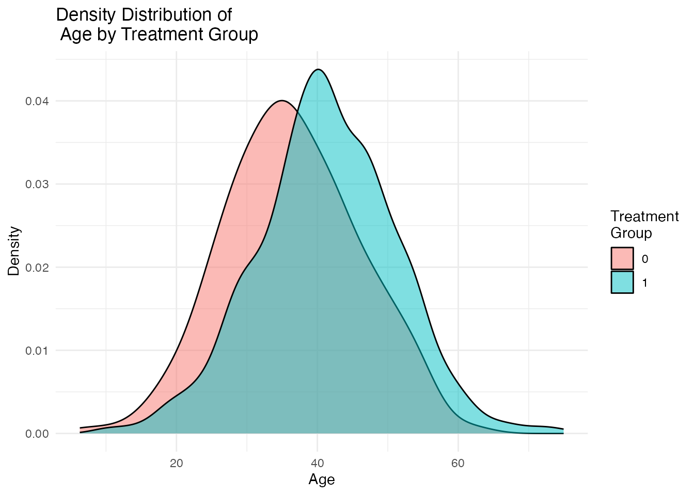
density_plots[["Income"]]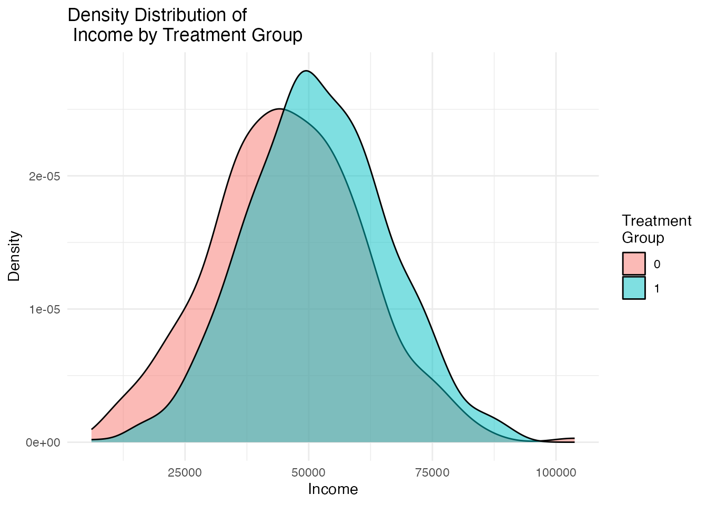
density_plots[["Experience"]]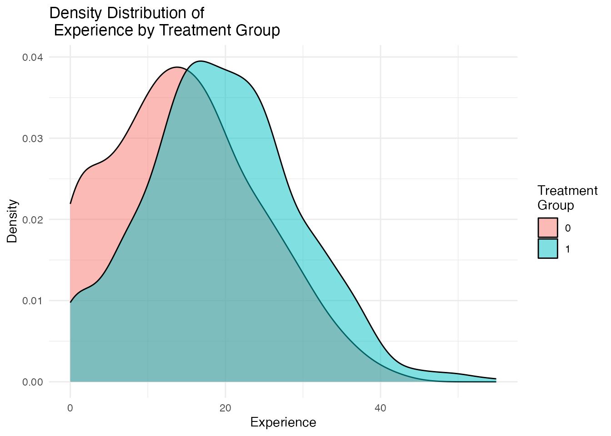
Ideal balance would show nearly identical density curves for treated and control groups. Visible separation between the curves indicates confounding that must be addressed.
balance_scatter_custom(): Standardized Mean Difference Scatter Plot
The balance_scatter_custom() function creates a scatter plot comparing covariate balance before and after matching refinement. Each point represents a covariate: the x-axis shows the standardized mean difference (SMD) before refinement and the y-axis shows the SMD after refinement. Points below the 45-degree line indicate that refinement improved balance.
This function is designed to work with PanelMatch objects and is most useful in panel data settings. See the DID vignette for a complete worked example.
# Requires PanelMatch objects - not runnable without panel data setup
# See the DID vignette (vignettes/c_did.Rmd) for a complete example
library(PanelMatch)
# Example usage (not run):
# balance_scatter_custom(
# pm_result_list = list(PM.results.5m, PM.results.10m),
# panel.data = pd,
# set.names = c("5 Matches", "10 Matches"),
# covariates = c("y", "tradewb"),
# xlim = c(0, 0.5),
# ylim = c(0, 0.5)
# )plot_covariate_balance_pretrend(): Balance Over Time
For panel data, it is important to check that covariate balance holds not just on average but across the entire pre-treatment period. The plot_covariate_balance_pretrend() function plots the standardized mean difference for each covariate at each pre-treatment time point.
# Create a sample balance matrix (rows = time periods, columns = covariates)
set.seed(123)
balance_matrix <- matrix(
c(
0.05, -0.02, 0.08, -0.03, # t_4
0.03, 0.01, 0.06, -0.01, # t_3
0.02, -0.01, 0.04, 0.02, # t_2
-0.01, 0.03, 0.01, 0.01 # t_1
),
nrow = 4,
byrow = TRUE
)
rownames(balance_matrix) <- paste0("t_", 4:1)
colnames(balance_matrix) <- c("Age", "Income", "Education", "Experience")
p <- causalverse::plot_covariate_balance_pretrend(
balance_data = balance_matrix,
y_limits = c(-0.15, 0.15),
main_title = "Covariate Balance Over Pre-Treatment Period",
theme_use = ggplot2::theme_minimal()
)
print(p)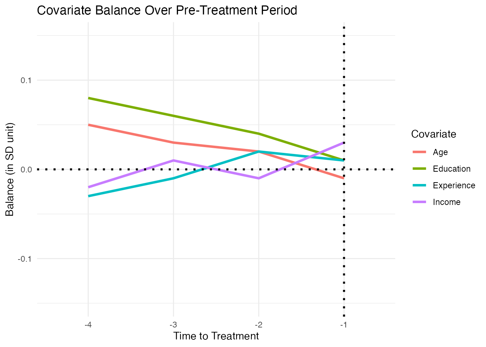
All lines should hover close to zero across the pre-treatment period. A sharp divergence near the treatment date suggests an anticipation effect or a violation of the parallel trends assumption.
MatchIt Package
The MatchIt package (Ho, Imai, King, and Stuart, 2011) is the gold standard for implementing matching in R. It provides a unified interface for a wide variety of matching methods and integrates seamlessly with balance diagnostics.
The workflow follows a principled three-step process:
matchit() to create matched data.summary() and plot() to assess balance.Nearest neighbor matching pairs each treated unit with the closest control unit based on a distance measure (default: propensity score distance estimated via logistic regression).
library(MatchIt)
# 1:1 nearest neighbor matching on the propensity score
m_nn <- matchit(
treatment ~ age + income + education + experience,
data = sim_data,
method = "nearest",
distance = "glm", # logistic regression for PS
ratio = 1, # 1 control per treated
replace = FALSE # without replacement
)
#> Warning: Fewer control units than treated units; not all treated units will get
#> a match.
# Summary of balance before and after matching
summary(m_nn)
#>
#> Call:
#> matchit(formula = treatment ~ age + income + education + experience,
#> data = sim_data, method = "nearest", distance = "glm", replace = FALSE,
#> ratio = 1)
#>
#> Summary of Balance for All Data:
#> Means Treated Means Control Std. Mean Diff. Var. Ratio eCDF Mean
#> distance 0.7223 0.6096 0.8233 0.6936 0.1993
#> age 41.2769 36.3723 0.4991 1.0399 0.1424
#> income 51830.4982 45727.4053 0.4309 0.8579 0.1167
#> education 0.4643 0.3131 0.3032 . 0.1512
#> experience 19.3843 14.5803 0.4834 1.0828 0.1432
#> eCDF Max
#> distance 0.2947
#> age 0.2365
#> income 0.1985
#> education 0.1512
#> experience 0.2200
#>
#> Summary of Balance for Matched Data:
#> Means Treated Means Control Std. Mean Diff. Var. Ratio eCDF Mean
#> distance 0.8411 0.6096 1.6920 0.0934 0.4562
#> age 46.7996 36.3723 1.0610 0.8120 0.3017
#> income 58374.9316 45727.4053 0.8930 0.7275 0.2452
#> education 0.6773 0.3131 0.7303 . 0.3642
#> experience 24.8716 14.5803 1.0355 0.9270 0.3033
#> eCDF Max Std. Pair Dist.
#> distance 0.8051 1.6920
#> age 0.4601 1.2414
#> income 0.3610 1.2321
#> education 0.3642 1.1275
#> experience 0.4345 1.2421
#>
#> Sample Sizes:
#> Control Treated
#> All 313 687
#> Matched 313 313
#> Unmatched 0 374
#> Discarded 0 0
# Balance improvement plot (Love plot equivalent)
plot(m_nn, type = "jitter", interactive = FALSE)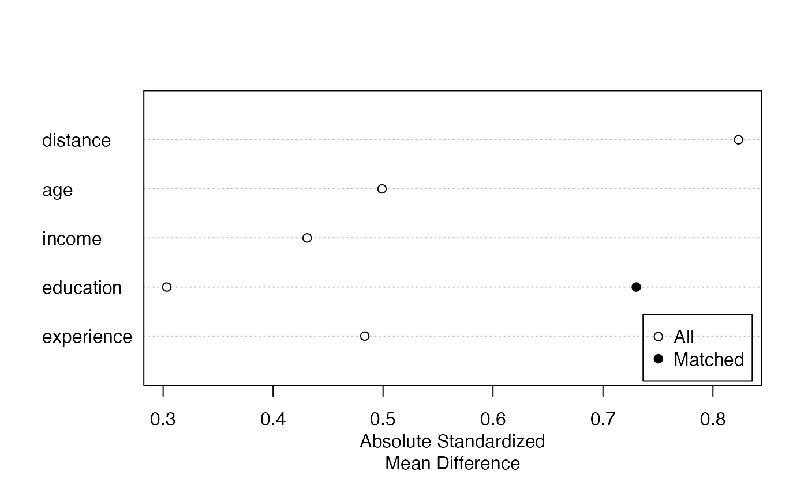
# Extract matched data for outcome analysis
matched_nn <- match.data(m_nn)
nrow(matched_nn)
#> [1] 626Key options for nearest neighbor matching:
ratio: Number of controls matched to each treated unit (:1 matching). Higher ratios retain more data but may increase bias if distant matches are used.replace: Whether controls can be matched to multiple treated units. Matching with replacement reduces bias (each treated unit gets its best match) but increases variance (matched controls are reused).caliper: Maximum allowable distance between matched pairs. Treated units without a sufficiently close control are dropped. Calipers improve balance but may reduce the effective sample size.
# Nearest neighbor with caliper and 2:1 matching
m_nn_cal <- matchit(
treatment ~ age + income + education + experience,
data = sim_data,
method = "nearest",
distance = "glm",
ratio = 2,
caliper = 0.2, # 0.2 SD of the propensity score
replace = FALSE
)
#> Warning: Fewer control units than treated units; not all treated units will get
#> a match.
summary(m_nn_cal)
#>
#> Call:
#> matchit(formula = treatment ~ age + income + education + experience,
#> data = sim_data, method = "nearest", distance = "glm", replace = FALSE,
#> caliper = 0.2, ratio = 2)
#>
#> Summary of Balance for All Data:
#> Means Treated Means Control Std. Mean Diff. Var. Ratio eCDF Mean
#> distance 0.7223 0.6096 0.8233 0.6936 0.1993
#> age 41.2769 36.3723 0.4991 1.0399 0.1424
#> income 51830.4982 45727.4053 0.4309 0.8579 0.1167
#> education 0.4643 0.3131 0.3032 . 0.1512
#> experience 19.3843 14.5803 0.4834 1.0828 0.1432
#> eCDF Max
#> distance 0.2947
#> age 0.2365
#> income 0.1985
#> education 0.1512
#> experience 0.2200
#>
#> Summary of Balance for Matched Data:
#> Means Treated Means Control Std. Mean Diff. Var. Ratio eCDF Mean
#> distance 0.6619 0.6342 0.2024 1.0516 0.0537
#> age 39.4658 37.3612 0.2141 1.2519 0.0635
#> income 47698.4497 47201.9519 0.0351 0.8422 0.0162
#> education 0.3483 0.3293 0.0380 . 0.0190
#> experience 17.4883 15.3883 0.2113 1.1648 0.0599
#> eCDF Max Std. Pair Dist.
#> distance 0.1034 0.1982
#> age 0.1276 0.8338
#> income 0.0552 0.9160
#> education 0.0190 0.7194
#> experience 0.1103 0.8598
#>
#> Sample Sizes:
#> Control Treated
#> All 313. 687
#> Matched (ESS) 295.61 290
#> Matched 301. 290
#> Unmatched 12. 397
#> Discarded 0. 0Optimal matching minimizes the total distance across all matched pairs, unlike greedy nearest-neighbor matching which minimizes each pair’s distance sequentially. This typically produces better overall balance, especially when the supply of good matches is limited.
m_opt <- matchit(
treatment ~ age + income + education + experience,
data = sim_data,
method = "optimal",
distance = "glm"
)
#> Warning: Fewer control units than treated units; not all treated units will get
#> a match.
summary(m_opt)
#>
#> Call:
#> matchit(formula = treatment ~ age + income + education + experience,
#> data = sim_data, method = "optimal", distance = "glm")
#>
#> Summary of Balance for All Data:
#> Means Treated Means Control Std. Mean Diff. Var. Ratio eCDF Mean
#> distance 0.7223 0.6096 0.8233 0.6936 0.1993
#> age 41.2769 36.3723 0.4991 1.0399 0.1424
#> income 51830.4982 45727.4053 0.4309 0.8579 0.1167
#> education 0.4643 0.3131 0.3032 . 0.1512
#> experience 19.3843 14.5803 0.4834 1.0828 0.1432
#> eCDF Max
#> distance 0.2947
#> age 0.2365
#> income 0.1985
#> education 0.1512
#> experience 0.2200
#>
#> Summary of Balance for Matched Data:
#> Means Treated Means Control Std. Mean Diff. Var. Ratio eCDF Mean
#> distance 0.6343 0.6096 0.1806 0.6712 0.0206
#> age 37.4032 36.3723 0.1049 0.9367 0.0326
#> income 47037.8353 45727.4053 0.0925 0.7809 0.0284
#> education 0.3259 0.3131 0.0256 . 0.0128
#> experience 15.4824 14.5803 0.0908 0.9102 0.0285
#> eCDF Max Std. Pair Dist.
#> distance 0.1182 0.1823
#> age 0.0990 0.7933
#> income 0.0895 0.9732
#> education 0.0128 0.7559
#> experience 0.0895 0.7799
#>
#> Sample Sizes:
#> Control Treated
#> All 313 687
#> Matched 313 313
#> Unmatched 0 374
#> Discarded 0 0
# Compare balance with nearest neighbor
summary(m_nn)$sum.matched
#> Means Treated Means Control Std. Mean Diff. Var. Ratio eCDF Mean
#> distance 8.410781e-01 6.096293e-01 1.6920354 0.09339355 0.4562332
#> age 4.679961e+01 3.637228e+01 1.0610338 0.81202357 0.3017125
#> income 5.837493e+04 4.572741e+04 0.8930259 0.72748898 0.2452396
#> education 6.773163e-01 3.130990e-01 0.7302944 NA 0.3642173
#> experience 2.487157e+01 1.458027e+01 1.0355431 0.92702883 0.3032596
#> eCDF Max Std. Pair Dist.
#> distance 0.8051118 1.692035
#> age 0.4600639 1.241366
#> income 0.3610224 1.232078
#> education 0.3642173 1.127472
#> experience 0.4345048 1.242133
summary(m_opt)$sum.matched
#> Means Treated Means Control Std. Mean Diff. Var. Ratio eCDF Mean
#> distance 6.343381e-01 6.096293e-01 0.18063677 0.6712083 0.02061661
#> age 3.740316e+01 3.637228e+01 0.10489670 0.9366823 0.03262620
#> income 4.703784e+04 4.572741e+04 0.09252781 0.7808702 0.02840895
#> education 3.258786e-01 3.130990e-01 0.02562437 NA 0.01277955
#> experience 1.548239e+01 1.458027e+01 0.09077424 0.9101679 0.02848915
#> eCDF Max Std. Pair Dist.
#> distance 0.11821086 0.1822937
#> age 0.09904153 0.7933261
#> income 0.08945687 0.9731595
#> education 0.01277955 0.7559188
#> experience 0.08945687 0.7799437Optimal matching requires the optmatch package. It is generally preferred over nearest neighbor matching for pair matching, although it can be computationally expensive for large datasets.
Full matching creates subclasses (strata) where each subclass contains at least one treated and one control unit. Every unit in the data is assigned to a subclass, so no data are discarded. Full matching is optimal in the sense that it minimizes the average within-subclass distance.
m_full <- matchit(
treatment ~ age + income + education + experience,
data = sim_data,
method = "full",
distance = "glm"
)
summary(m_full)
#>
#> Call:
#> matchit(formula = treatment ~ age + income + education + experience,
#> data = sim_data, method = "full", distance = "glm")
#>
#> Summary of Balance for All Data:
#> Means Treated Means Control Std. Mean Diff. Var. Ratio eCDF Mean
#> distance 0.7223 0.6096 0.8233 0.6936 0.1993
#> age 41.2769 36.3723 0.4991 1.0399 0.1424
#> income 51830.4982 45727.4053 0.4309 0.8579 0.1167
#> education 0.4643 0.3131 0.3032 . 0.1512
#> experience 19.3843 14.5803 0.4834 1.0828 0.1432
#> eCDF Max
#> distance 0.2947
#> age 0.2365
#> income 0.1985
#> education 0.1512
#> experience 0.2200
#>
#> Summary of Balance for Matched Data:
#> Means Treated Means Control Std. Mean Diff. Var. Ratio eCDF Mean
#> distance 0.7223 0.7220 0.0017 0.9916 0.0029
#> age 41.2769 41.1001 0.0180 1.0977 0.0163
#> income 51830.4982 52367.4758 -0.0379 0.9247 0.0186
#> education 0.4643 0.4464 0.0360 . 0.0179
#> experience 19.3843 19.3941 -0.0010 0.9940 0.0169
#> eCDF Max Std. Pair Dist.
#> distance 0.0247 0.0136
#> age 0.0552 0.8361
#> income 0.0585 0.9691
#> education 0.0179 0.6973
#> experience 0.0634 0.8558
#>
#> Sample Sizes:
#> Control Treated
#> All 313. 687
#> Matched (ESS) 115.05 687
#> Matched 313. 687
#> Unmatched 0. 0
#> Discarded 0. 0
# Extract matched data with subclass weights
matched_full <- match.data(m_full)
# Each observation gets a weight reflecting its role in the matched sample
table(matched_full$subclass[1:20])
#>
#> 1 2 3 4 5 6 7 8 9 10 11 12 13 14 15 16 17 18 19 20
#> 1 2 0 0 0 0 0 1 0 0 0 0 0 1 0 0 0 0 1 0
#> 21 22 23 24 25 26 27 28 29 30 31 32 33 34 35 36 37 38 39 40
#> 0 0 0 0 0 0 0 0 0 0 0 0 0 0 0 0 0 0 0 0
#> 41 42 43 44 45 46 47 48 49 50 51 52 53 54 55 56 57 58 59 60
#> 0 0 0 0 0 0 0 0 0 0 0 0 0 0 0 0 0 1 0 0
#> 61 62 63 64 65 66 67 68 69 70 71 72 73 74 75 76 77 78 79 80
#> 1 0 0 0 0 0 0 0 0 0 0 0 0 0 0 0 0 0 0 0
#> 81 82 83 84 85 86 87 88 89 90 91 92 93 94 95 96 97 98 99 100
#> 1 0 0 0 0 1 0 0 0 0 0 0 0 0 1 0 0 0 0 0
#> 101 102 103 104 105 106 107 108 109 110 111 112 113 114 115 116 117 118 119 120
#> 0 0 0 0 0 0 0 0 0 0 1 0 0 0 0 0 0 0 0 0
#> 121 122 123 124 125 126 127 128 129 130 131 132 133 134 135 136 137 138 139 140
#> 0 0 0 0 0 0 0 0 0 0 0 0 0 0 0 0 0 0 0 0
#> 141 142 143 144 145 146 147 148 149 150 151 152 153 154 155 156 157 158 159 160
#> 0 0 0 0 0 0 0 0 0 0 0 0 0 0 0 0 0 1 0 0
#> 161 162 163 164 165 166 167 168 169 170 171 172 173 174 175 176 177 178 179 180
#> 0 0 0 0 0 0 0 0 0 0 0 0 1 0 0 0 0 0 0 0
#> 181 182 183 184 185 186 187 188 189 190 191 192 193 194 195 196 197 198 199 200
#> 0 0 0 1 0 0 0 0 0 0 0 0 0 0 0 0 0 0 0 0
#> 201 202 203 204 205 206 207 208 209 210 211 212 213 214 215 216 217 218 219 220
#> 0 0 0 0 0 0 0 0 0 0 0 0 0 0 0 0 0 1 0 0
#> 221 222 223 224 225 226 227 228 229 230 231 232 233 234 235 236 237 238 239 240
#> 0 0 0 0 0 0 0 0 0 0 0 0 0 0 0 0 0 0 0 1
#> 241 242 243 244 245 246 247 248 249 250 251 252 253 254 255 256 257 258 259 260
#> 0 0 0 1 0 0 0 0 0 1 0 0 0 0 1 0 0 0 0 0
#> 261
#> 0
summary(matched_full$weights)
#> Min. 1st Qu. Median Mean 3rd Qu. Max.
#> 0.06509 1.00000 1.00000 1.00000 1.00000 9.11208Full matching naturally targets the ATE (or the ATT with appropriate arguments). Because it uses all observations, it is generally more efficient than pair matching, though the resulting weights can be highly variable.
Coarsened Exact Matching (Iacus, King, and Porro, 2012) temporarily coarsens continuous covariates into bins, performs exact matching on the coarsened values, and then retains the original (uncoarsened) data for analysis. This ensures that matched units are within the same bin on every covariate.
m_cem <- matchit(
treatment ~ age + income + education + experience,
data = sim_data,
method = "cem",
cutpoints = list(
age = 5, # bin width for age
income = 4, # number of bins for income
experience = 5 # bin width for experience
)
)
summary(m_cem)
#>
#> Call:
#> matchit(formula = treatment ~ age + income + education + experience,
#> data = sim_data, method = "cem", cutpoints = list(age = 5,
#> income = 4, experience = 5))
#>
#> Summary of Balance for All Data:
#> Means Treated Means Control Std. Mean Diff. Var. Ratio eCDF Mean
#> age 41.2769 36.3723 0.4991 1.0399 0.1424
#> income 51830.4982 45727.4053 0.4309 0.8579 0.1167
#> education 0.4643 0.3131 0.3032 . 0.1512
#> experience 19.3843 14.5803 0.4834 1.0828 0.1432
#> eCDF Max
#> age 0.2365
#> income 0.1985
#> education 0.1512
#> experience 0.2200
#>
#> Summary of Balance for Matched Data:
#> Means Treated Means Control Std. Mean Diff. Var. Ratio eCDF Mean
#> age 40.7179 40.5229 0.0198 1.0157 0.0108
#> income 50568.8635 49744.0154 0.0582 0.8391 0.0288
#> education 0.4826 0.4826 0.0000 . 0.0000
#> experience 18.7683 18.6671 0.0102 0.9941 0.0106
#> eCDF Max Std. Pair Dist.
#> age 0.0386 0.3602
#> income 0.0890 0.5411
#> education 0.0000 0.0000
#> experience 0.0350 0.3341
#>
#> Sample Sizes:
#> Control Treated
#> All 313. 687
#> Matched (ESS) 156.55 632
#> Matched 301. 632
#> Unmatched 12. 55
#> Discarded 0. 0
# CEM produces strata-based weights
matched_cem <- match.data(m_cem)
summary(matched_cem$weights)
#> Min. 1st Qu. Median Mean 3rd Qu. Max.
#> 0.03664 1.00000 1.00000 1.00000 1.00000 7.14399Advantages of CEM:
Disadvantages:
Subclassification divides the propensity score distribution into a fixed number of strata and estimates treatment effects within each stratum. The overall effect is a weighted average of stratum-specific effects.
m_sub <- matchit(
treatment ~ age + income + education + experience,
data = sim_data,
method = "subclass",
subclass = 6 # number of subclasses
)
summary(m_sub)
#>
#> Call:
#> matchit(formula = treatment ~ age + income + education + experience,
#> data = sim_data, method = "subclass", subclass = 6)
#>
#> Summary of Balance for All Data:
#> Means Treated Means Control Std. Mean Diff. Var. Ratio eCDF Mean
#> distance 0.7223 0.6096 0.8233 0.6936 0.1993
#> age 41.2769 36.3723 0.4991 1.0399 0.1424
#> income 51830.4982 45727.4053 0.4309 0.8579 0.1167
#> education 0.4643 0.3131 0.3032 . 0.1512
#> experience 19.3843 14.5803 0.4834 1.0828 0.1432
#> eCDF Max
#> distance 0.2947
#> age 0.2365
#> income 0.1985
#> education 0.1512
#> experience 0.2200
#>
#> Summary of Balance Across Subclasses
#> Means Treated Means Control Std. Mean Diff. Var. Ratio eCDF Mean
#> distance 0.7223 0.7128 0.0694 0.8060 0.0121
#> age 41.2769 40.6680 0.0620 1.0145 0.0178
#> income 51830.4982 51852.0925 -0.0015 0.7820 0.0156
#> education 0.4643 0.4483 0.0322 . 0.0161
#> experience 19.3843 18.8408 0.0547 0.9783 0.0165
#> eCDF Max
#> distance 0.0473
#> age 0.0529
#> income 0.0586
#> education 0.0161
#> experience 0.0487
#>
#> Sample Sizes:
#> Control Treated
#> All 313. 687
#> Matched (ESS) 191.76 687
#> Matched 313. 687
#> Unmatched 0. 0
#> Discarded 0. 0
# Balance within each subclass
summary(m_sub, subclass = TRUE)
#>
#> Call:
#> matchit(formula = treatment ~ age + income + education + experience,
#> data = sim_data, method = "subclass", subclass = 6)
#>
#> Summary of Balance for All Data:
#> Means Treated Means Control Std. Mean Diff. Var. Ratio eCDF Mean
#> distance 0.7223 0.6096 0.8233 0.6936 0.1993
#> age 41.2769 36.3723 0.4991 1.0399 0.1424
#> income 51830.4982 45727.4053 0.4309 0.8579 0.1167
#> education 0.4643 0.3131 0.3032 . 0.1512
#> experience 19.3843 14.5803 0.4834 1.0828 0.1432
#> eCDF Max
#> distance 0.2947
#> age 0.2365
#> income 0.1985
#> education 0.1512
#> experience 0.2200
#>
#> Summary of Balance by Subclass:
#>
#> - Subclass 1
#> Means Treated Means Control Std. Mean Diff. Var. Ratio eCDF Mean
#> distance 0.4956 0.4482 0.6408 0.5346 0.1346
#> age 31.8951 30.3054 0.2046 1.0347 0.0705
#> income 40341.8121 36642.7362 0.3057 0.9317 0.0919
#> education 0.1652 0.1462 0.0513 . 0.0191
#> experience 9.7578 8.9015 0.1262 0.9097 0.0490
#> eCDF Max
#> distance 0.2505
#> age 0.1716
#> income 0.2070
#> education 0.0191
#> experience 0.0983
#>
#> - Subclass 2
#> Means Treated Means Control Std. Mean Diff. Var. Ratio eCDF Mean
#> distance 0.6315 0.6320 -0.0204 1.1319 0.0322
#> age 36.1483 36.3363 -0.0244 0.9917 0.0376
#> income 48061.7145 47817.1543 0.0206 0.9731 0.0433
#> education 0.2719 0.2807 -0.0197 . 0.0088
#> experience 14.7667 14.5269 0.0301 0.9722 0.0362
#> eCDF Max
#> distance 0.1053
#> age 0.0877
#> income 0.1140
#> education 0.0088
#> experience 0.1316
#>
#> - Subclass 3
#> Means Treated Means Control Std. Mean Diff. Var. Ratio eCDF Mean
#> distance 0.7078 0.7053 0.1209 0.9512 0.0468
#> age 40.2060 39.5754 0.0920 0.9419 0.0524
#> income 49434.4292 50515.0115 -0.0893 1.0146 0.0448
#> education 0.3947 0.3929 0.0038 . 0.0019
#> experience 18.1601 17.1524 0.1539 0.7383 0.0556
#> eCDF Max
#> distance 0.1341
#> age 0.1319
#> income 0.1297
#> education 0.0019
#> experience 0.1711
#>
#> - Subclass 4
#> Means Treated Means Control Std. Mean Diff. Var. Ratio eCDF Mean
#> distance 0.7734 0.7726 0.0455 0.9228 0.0346
#> age 42.5956 42.5173 0.0102 0.7902 0.0333
#> income 52948.5963 54173.5859 -0.0915 0.8207 0.0336
#> education 0.5391 0.5000 0.0785 . 0.0391
#> experience 20.6439 20.0564 0.0720 0.7658 0.0323
#> eCDF Max
#> distance 0.0995
#> age 0.0840
#> income 0.1144
#> education 0.0391
#> experience 0.1302
#>
#> - Subclass 5
#> Means Treated Means Control Std. Mean Diff. Var. Ratio eCDF Mean
#> distance 0.8295 0.8238 0.4047 1.3587 0.1188
#> age 45.1786 46.3028 -0.1572 0.9812 0.0712
#> income 57278.0522 55387.5590 0.1620 0.8703 0.0884
#> education 0.6579 0.5833 0.1572 . 0.0746
#> experience 22.9792 24.2429 -0.1662 1.0866 0.0787
#> eCDF Max
#> distance 0.2851
#> age 0.1776
#> income 0.2807
#> education 0.0746
#> experience 0.1798
#>
#> - Subclass 6
#> Means Treated Means Control Std. Mean Diff. Var. Ratio eCDF Mean
#> distance 0.8956 0.8949 0.0239 0.8799 0.0349
#> age 51.6178 48.9728 0.3304 1.2535 0.0923
#> income 62912.1473 66560.5380 -0.2941 0.5868 0.0761
#> education 0.7565 0.7857 -0.0680 . 0.0292
#> experience 29.9783 28.1594 0.2105 1.2117 0.0713
#> eCDF Max
#> distance 0.0901
#> age 0.1752
#> income 0.2286
#> education 0.0292
#> experience 0.2323
#>
#> Sample Sizes by Subclass:
#> 1 2 3 4 5 6 All
#> Control 130 57 56 32 24 14 313
#> Treated 115 114 114 115 114 115 687
#> Total 245 171 170 147 138 129 1000
# Matched data with subclass indicators
matched_sub <- match.data(m_sub)
table(matched_sub$subclass)
#>
#> 1 2 3 4 5 6
#> 245 171 170 147 138 129Propensity score matching uses the estimated propensity score as the distance measure. MatchIt estimates the propensity score via logistic regression by default, but supports many alternatives.
# Logistic regression (default)
m_ps_logit <- matchit(
treatment ~ age + income + education + experience,
data = sim_data,
method = "nearest",
distance = "glm",
link = "logit"
)
#> Warning: Fewer control units than treated units; not all treated units will get
#> a match.
# Probit model
m_ps_probit <- matchit(
treatment ~ age + income + education + experience,
data = sim_data,
method = "nearest",
distance = "glm",
link = "probit"
)
#> Warning: Fewer control units than treated units; not all treated units will get
#> a match.
# Random forest (via the randomForest package)
m_ps_rf <- matchit(
treatment ~ age + income + education + experience,
data = sim_data,
method = "nearest",
distance = "randomforest"
)
#> Warning: Fewer control units than treated units; not all treated units will get
#> a match.
# Generalized boosted model (via the gbm package)
m_ps_gbm <- matchit(
treatment ~ age + income + education + experience,
data = sim_data,
method = "nearest",
distance = "gbm"
)
#> Warning: Fewer control units than treated units; not all treated units will get
#> a match.
# Compare balance across PS estimation methods
summary(m_ps_logit)$sum.matched
#> Means Treated Means Control Std. Mean Diff. Var. Ratio eCDF Mean
#> distance 8.410781e-01 6.096293e-01 1.6920354 0.09339355 0.4562332
#> age 4.679961e+01 3.637228e+01 1.0610338 0.81202357 0.3017125
#> income 5.837493e+04 4.572741e+04 0.8930259 0.72748898 0.2452396
#> education 6.773163e-01 3.130990e-01 0.7302944 NA 0.3642173
#> experience 2.487157e+01 1.458027e+01 1.0355431 0.92702883 0.3032596
#> eCDF Max Std. Pair Dist.
#> distance 0.8051118 1.692035
#> age 0.4600639 1.241366
#> income 0.3610224 1.232078
#> education 0.3642173 1.127472
#> experience 0.4345048 1.242133
summary(m_ps_rf)$sum.matched
#> Means Treated Means Control Std. Mean Diff. Var. Ratio eCDF Mean
#> distance 8.659405e-01 6.168592e-01 1.3560082 0.07434252 0.3684388
#> age 4.522984e+01 3.637228e+01 0.9013019 0.90706182 0.2571310
#> income 5.641049e+04 4.572741e+04 0.7543193 0.72954743 0.2100351
#> education 5.686901e-01 3.130990e-01 0.5124873 NA 0.2555911
#> experience 2.328475e+01 1.458027e+01 0.8758720 0.96258677 0.2578406
#> eCDF Max Std. Pair Dist.
#> distance 0.6869010 1.356008
#> age 0.4185304 1.247094
#> income 0.3418530 1.248224
#> education 0.2555911 1.024975
#> experience 0.3769968 1.229716Instead of matching on the propensity score, one can match directly on the covariate space using Mahalanobis distance:
where is the sample covariance matrix. This accounts for correlations and scaling differences among covariates.
m_maha <- matchit(
treatment ~ age + income + education + experience,
data = sim_data,
method = "nearest",
distance = "mahalanobis"
)
#> Warning: Fewer control units than treated units; not all treated units will get
#> a match.
summary(m_maha)
#>
#> Call:
#> matchit(formula = treatment ~ age + income + education + experience,
#> data = sim_data, method = "nearest", distance = "mahalanobis")
#>
#> Summary of Balance for All Data:
#> Means Treated Means Control Std. Mean Diff. Var. Ratio eCDF Mean
#> age 41.2769 36.3723 0.4991 1.0399 0.1424
#> income 51830.4982 45727.4053 0.4309 0.8579 0.1167
#> education 0.4643 0.3131 0.3032 . 0.1512
#> experience 19.3843 14.5803 0.4834 1.0828 0.1432
#> eCDF Max
#> age 0.2365
#> income 0.1985
#> education 0.1512
#> experience 0.2200
#>
#> Summary of Balance for Matched Data:
#> Means Treated Means Control Std. Mean Diff. Var. Ratio eCDF Mean
#> age 41.1985 36.3723 0.4911 0.9269 0.1396
#> income 51719.4187 45727.4053 0.4231 0.8061 0.1150
#> education 0.4856 0.3131 0.3459 . 0.1725
#> experience 19.2902 14.5803 0.4739 0.9564 0.1433
#> eCDF Max Std. Pair Dist.
#> age 0.2492 0.6076
#> income 0.2013 0.5707
#> education 0.1725 0.3459
#> experience 0.2236 0.5811
#>
#> Sample Sizes:
#> Control Treated
#> All 313 687
#> Matched 313 313
#> Unmatched 0 374
#> Discarded 0 0
# Mahalanobis distance matching with a caliper on age
m_maha_cal <- matchit(
treatment ~ age + income + education + experience,
data = sim_data,
method = "nearest",
distance = "mahalanobis",
caliper = c(age = 0.2),
std.caliper = TRUE
)
#> Warning: Fewer control units than treated units; not all treated units will get
#> a match.
summary(m_maha_cal)
#>
#> Call:
#> matchit(formula = treatment ~ age + income + education + experience,
#> data = sim_data, method = "nearest", distance = "mahalanobis",
#> caliper = c(age = 0.2), std.caliper = TRUE)
#>
#> Summary of Balance for All Data:
#> Means Treated Means Control Std. Mean Diff. Var. Ratio eCDF Mean
#> age 41.2769 36.3723 0.4991 1.0399 0.1424
#> income 51830.4982 45727.4053 0.4309 0.8579 0.1167
#> education 0.4643 0.3131 0.3032 . 0.1512
#> experience 19.3843 14.5803 0.4834 1.0828 0.1432
#> eCDF Max
#> age 0.2365
#> income 0.1985
#> education 0.1512
#> experience 0.2200
#>
#> Summary of Balance for Matched Data:
#> Means Treated Means Control Std. Mean Diff. Var. Ratio eCDF Mean
#> age 36.7153 36.4687 0.0251 0.9666 0.0129
#> income 52439.2107 45787.7991 0.4696 0.8165 0.1263
#> education 0.4872 0.3109 0.3535 . 0.1763
#> experience 14.9476 14.6270 0.0323 0.9194 0.0163
#> eCDF Max Std. Pair Dist.
#> age 0.0481 0.1007
#> income 0.2212 0.7018
#> education 0.1763 0.4177
#> experience 0.0545 0.1956
#>
#> Sample Sizes:
#> Control Treated
#> All 313 687
#> Matched 312 312
#> Unmatched 1 375
#> Discarded 0 0After obtaining matched data, treatment effects are estimated using regression on the matched sample. Including the matching covariates in the regression provides doubly robust estimation: the estimate is consistent if either the matching or the regression model is correctly specified.
# Get matched data
matched_data <- match.data(m_nn)
# Simple difference in means
lm_simple <- lm(outcome ~ treatment, data = matched_data, weights = weights)
summary(lm_simple)
#>
#> Call:
#> lm(formula = outcome ~ treatment, data = matched_data, weights = weights)
#>
#> Residuals:
#> Min 1Q Median 3Q Max
#> -24.8293 -5.5454 -0.0366 5.6464 29.4450
#>
#> Coefficients:
#> Estimate Std. Error t value Pr(>|t|)
#> (Intercept) 37.0384 0.4792 77.30 <2e-16 ***
#> treatment 18.8926 0.6777 27.88 <2e-16 ***
#> ---
#> Signif. codes: 0 '***' 0.001 '**' 0.01 '*' 0.05 '.' 0.1 ' ' 1
#>
#> Residual standard error: 8.478 on 624 degrees of freedom
#> Multiple R-squared: 0.5547, Adjusted R-squared: 0.554
#> F-statistic: 777.3 on 1 and 624 DF, p-value: < 2.2e-16
# Regression adjustment with covariates (doubly robust)
lm_adj <- lm(
outcome ~ treatment + age + income + education + experience,
data = matched_data,
weights = weights
)
summary(lm_adj)
#>
#> Call:
#> lm(formula = outcome ~ treatment + age + income + education +
#> experience, data = matched_data, weights = weights)
#>
#> Residuals:
#> Min 1Q Median 3Q Max
#> -13.820 -3.292 -0.170 3.209 18.104
#>
#> Coefficients:
#> Estimate Std. Error t value Pr(>|t|)
#> (Intercept) 4.742e+00 1.721e+00 2.756 0.00603 **
#> treatment 8.126e+00 5.616e-01 14.470 < 2e-16 ***
#> age 7.119e-01 6.406e-02 11.113 < 2e-16 ***
#> income 9.106e-05 1.439e-05 6.328 4.77e-10 ***
#> education 4.270e+00 4.449e-01 9.598 < 2e-16 ***
#> experience 6.184e-02 6.289e-02 0.983 0.32583
#> ---
#> Signif. codes: 0 '***' 0.001 '**' 0.01 '*' 0.05 '.' 0.1 ' ' 1
#>
#> Residual standard error: 5.029 on 620 degrees of freedom
#> Multiple R-squared: 0.8443, Adjusted R-squared: 0.8431
#> F-statistic: 672.5 on 5 and 620 DF, p-value: < 2.2e-16
coef(lm_adj)["treatment"]
#> treatment
#> 8.125829
# Using fixest for cluster-robust standard errors
feols_fit <- fixest::feols(
outcome ~ treatment + age + income + education + experience,
data = matched_data,
weights = ~ weights,
vcov = "HC1"
)
summary(feols_fit)
#> OLS estimation, Dep. Var.: outcome
#> Observations: 626
#> Weights: weights
#> Standard-errors: Heteroskedasticity-robust
#> Estimate Std. Error t value Pr(>|t|)
#> (Intercept) 4.741698 1.548092 3.06293 2.2868e-03 **
#> treatment 8.125829 0.533045 15.24418 < 2.2e-16 ***
#> age 0.711915 0.059234 12.01866 < 2.2e-16 ***
#> income 0.000091 0.000014 6.49976 1.6547e-10 ***
#> education 4.270255 0.442550 9.64919 < 2.2e-16 ***
#> experience 0.061842 0.058720 1.05317 2.9267e-01
#> ---
#> Signif. codes: 0 '***' 0.001 '**' 0.01 '*' 0.05 '.' 0.1 ' ' 1
#> RMSE: 5.00447 Adj. R2: 0.843063When matching is done with replacement or with variable numbers of controls, one should use cluster-robust standard errors (clustering on the matched pair or subclass) or use the weights produced by match.data().
# Cluster-robust SEs, clustering on the subclass (matched pair)
feols_cluster <- fixest::feols(
outcome ~ treatment + age + income + education + experience,
data = matched_data,
weights = ~ weights,
cluster = ~ subclass
)
summary(feols_cluster)
#> OLS estimation, Dep. Var.: outcome
#> Observations: 626
#> Weights: weights
#> Standard-errors: Clustered (subclass)
#> Estimate Std. Error t value Pr(>|t|)
#> (Intercept) 4.741698 1.568512 3.02306 2.7099e-03 **
#> treatment 8.125829 0.526873 15.42275 < 2.2e-16 ***
#> age 0.711915 0.058907 12.08549 < 2.2e-16 ***
#> income 0.000091 0.000014 6.32289 8.8749e-10 ***
#> education 4.270255 0.440074 9.70350 < 2.2e-16 ***
#> experience 0.061842 0.058060 1.06513 2.8764e-01
#> ---
#> Signif. codes: 0 '***' 0.001 '**' 0.01 '*' 0.05 '.' 0.1 ' ' 1
#> RMSE: 5.00447 Adj. R2: 0.843063cobalt Package: Balance Assessment
The cobalt package (Greifer, 2024) provides a comprehensive toolkit for assessing covariate balance after matching or weighting. It works seamlessly with objects from MatchIt, WeightIt, and many other packages.
bal.tab()
library(cobalt)
#> cobalt (Version 4.6.1, Build Date: 2025-08-20)
#>
#> Attaching package: 'cobalt'
#> The following object is masked from 'package:MatchIt':
#>
#> lalonde
# From a MatchIt object
bal.tab(m_nn, thresholds = c(m = 0.1)) # flag covariates with SMD > 0.1
#> Balance Measures
#> Type Diff.Adj M.Threshold
#> distance Distance 1.6920
#> age Contin. 1.0610 Not Balanced, >0.1
#> income Contin. 0.8930 Not Balanced, >0.1
#> education Binary 0.3642 Not Balanced, >0.1
#> experience Contin. 1.0355 Not Balanced, >0.1
#>
#> Balance tally for mean differences
#> count
#> Balanced, <0.1 0
#> Not Balanced, >0.1 4
#>
#> Variable with the greatest mean difference
#> Variable Diff.Adj M.Threshold
#> age 1.061 Not Balanced, >0.1
#>
#> Sample sizes
#> Control Treated
#> All 313 687
#> Matched 313 313
#> Unmatched 0 374
# From a WeightIt object (see Section 6)
# bal.tab(w_out, thresholds = c(m = 0.1))
# From raw data with a formula
bal.tab(
treatment ~ age + income + education + experience,
data = sim_data,
thresholds = c(m = 0.1),
un = TRUE # show unadjusted balance too
)
#> Note: `s.d.denom` not specified; assuming "pooled".
#> Balance Measures
#> Type Diff.Un M.Threshold.Un
#> age Contin. 0.5039 Not Balanced, >0.1
#> income Contin. 0.4141 Not Balanced, >0.1
#> education Binary 0.1512 Not Balanced, >0.1
#> experience Contin. 0.4929 Not Balanced, >0.1
#>
#> Balance tally for mean differences
#> count
#> Balanced, <0.1 0
#> Not Balanced, >0.1 4
#>
#> Variable with the greatest mean difference
#> Variable Diff.Un M.Threshold.Un
#> age 0.5039 Not Balanced, >0.1
#>
#> Sample sizes
#> Control Treated
#> All 313 687The balance table reports the standardized mean difference (SMD), variance ratio, and other balance statistics for each covariate. The conventional threshold for acceptable balance is (Austin, 2011), though this is a guideline rather than a hard rule.
love.plot()
Love plots provide a visual summary of covariate balance. Each covariate is represented by a point; the x-axis shows the absolute standardized mean difference. Points are shown for both the unadjusted and adjusted samples, making it easy to see which covariates improved and whether all covariates meet the balance threshold.
# Love plot from a MatchIt object
love.plot(
m_nn,
binary = "std",
abs = TRUE,
thresholds = c(m = 0.1),
var.order = "unadjusted",
colors = c("red", "blue"),
shapes = c(17, 15),
sample.names = c("Unadjusted", "Matched"),
title = "Covariate Balance: Nearest Neighbor Matching"
)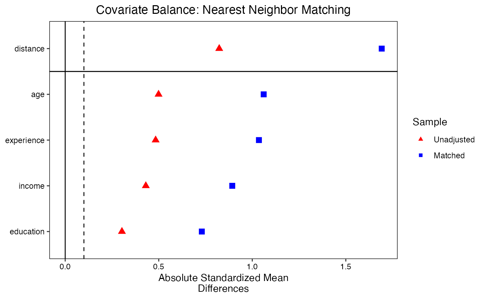
# Compare multiple matching methods
love.plot(
treatment ~ age + income + education + experience,
data = sim_data,
weights = list(
NN = m_nn,
Full = m_full,
CEM = m_cem
),
abs = TRUE,
var.order = "unadjusted",
thresholds = c(m = 0.1),
title = "Balance Comparison Across Methods"
)
#> Note: `s.d.denom` not specified; assuming "control" for NN, "treated"
#> for Full, and "pooled" for CEM.
#> Warning: Standardized mean differences and raw mean differences are present in
#> the same plot. Use the `stars` argument to distinguish between them and
#> appropriately label the x-axis. See `?love.plot` for details.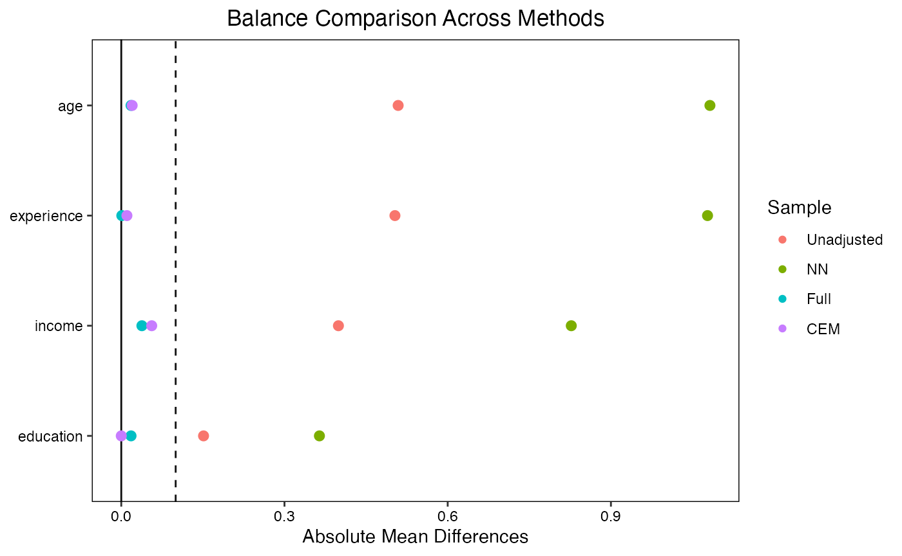
bal.plot()
While SMDs assess differences in means, bal.plot() visualizes the entire distribution of each covariate across treatment groups.
# Density plot for a continuous covariate
bal.plot(m_nn, var.name = "age", which = "both")
#> Ignoring unknown labels:
#> • colour : "Treatment"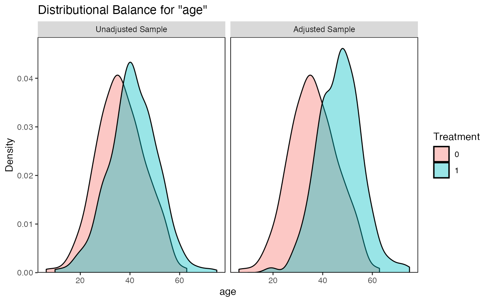
# Mirror plot (treated density above, control below)
bal.plot(m_nn, var.name = "income", which = "both", type = "density",
mirror = TRUE)
#> Ignoring unknown labels:
#> • colour : "Treatment"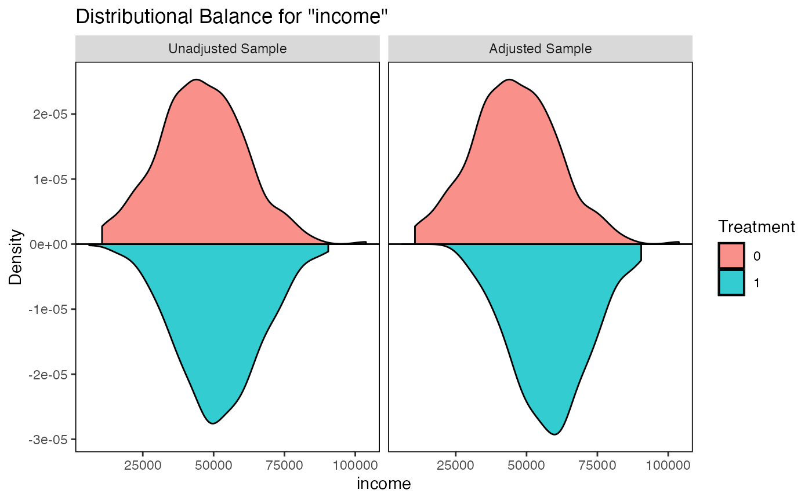
# Bar plot for a binary covariate
bal.plot(m_nn, var.name = "education", which = "both")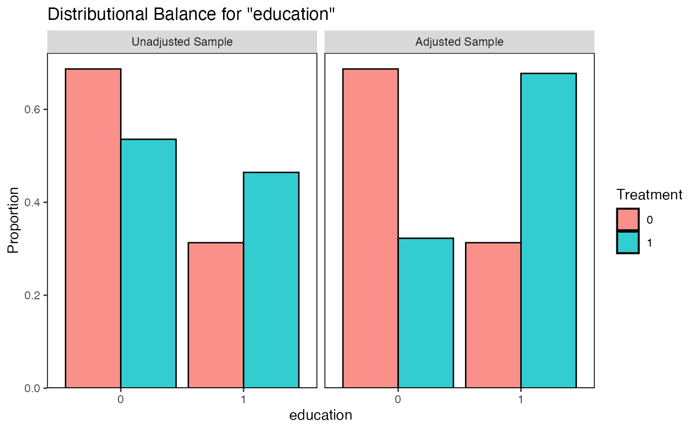
WeightIt Package: Propensity Score Weighting
The WeightIt package (Greifer, 2024) provides a unified interface for estimating balancing weights. Unlike matching, weighting retains all observations and assigns weights to create a pseudo-population in which covariates are balanced.
library(WeightIt)
# Standard IPW (inverse probability weighting)
w_ipw <- weightit(
treatment ~ age + income + education + experience,
data = sim_data,
method = "ps", # propensity score weighting
estimand = "ATT"
)
summary(w_ipw)
#> Summary of weights
#>
#> - Weight ranges:
#>
#> Min Max
#> treated 1. || 1.
#> control 0.234 |---------------------------| 22.437
#>
#> - Units with the 5 most extreme weights by group:
#>
#> 1 2 3 4 5
#> treated 1 1 1 1 1
#> 271 215 200 158 43
#> control 9.456 10.21 13.543 15.23 22.437
#>
#> - Weight statistics:
#>
#> Coef of Var MAD Entropy # Zeros
#> treated 0.000 0.0 0.00 0
#> control 0.984 0.6 0.32 0
#>
#> - Effective Sample Sizes:
#>
#> Control Treated
#> Unweighted 313. 687
#> Weighted 159.28 687
# Examine the weight distribution
summary(w_ipw$weights)
#> Min. 1st Qu. Median Mean 3rd Qu. Max.
#> 0.2335 1.0000 1.0000 1.3920 1.0000 22.4372
hist(w_ipw$weights, breaks = 30, main = "IPW Weight Distribution")Entropy balancing (Hainmueller, 2012) finds weights that satisfy exact moment conditions (equality of means, and optionally variances and skewness) while minimizing the entropy distance from uniform weights. This guarantees exact balance on the specified moments.
w_ebal <- weightit(
treatment ~ age + income + education + experience,
data = sim_data,
method = "ebal", # entropy balancing
estimand = "ATT"
)
summary(w_ebal)
#> Summary of weights
#>
#> - Weight ranges:
#>
#> Min Max
#> treated 1. || 1.
#> control 0.112 |---------------------------| 6.909
#>
#> - Units with the 5 most extreme weights by group:
#>
#> 1 2 3 4 5
#> treated 1 1 1 1 1
#> 215 200 158 57 43
#> control 3.959 4.211 5.502 5.831 6.909
#>
#> - Weight statistics:
#>
#> Coef of Var MAD Entropy # Zeros
#> treated 0.000 0.00 0.000 0
#> control 0.843 0.56 0.265 0
#>
#> - Effective Sample Sizes:
#>
#> Control Treated
#> Unweighted 313. 687
#> Weighted 183.24 687
# Entropy balancing achieves near-exact balance
bal.tab(w_ebal, thresholds = c(m = 0.01))
#> Balance Measures
#> Type Diff.Adj M.Threshold
#> age Contin. 0 Balanced, <0.01
#> income Contin. 0 Balanced, <0.01
#> education Binary -0 Balanced, <0.01
#> experience Contin. 0 Balanced, <0.01
#>
#> Balance tally for mean differences
#> count
#> Balanced, <0.01 4
#> Not Balanced, >0.01 0
#>
#> Variable with the greatest mean difference
#> Variable Diff.Adj M.Threshold
#> income 0 Balanced, <0.01
#>
#> Effective sample sizes
#> Control Treated
#> Unadjusted 313. 687
#> Adjusted 183.24 687CBPS (Imai and Ratkovic, 2014) jointly estimates the propensity score and optimizes covariate balance. It modifies the propensity score estimation to explicitly target balance, rather than treating balance as a byproduct.
w_cbps <- weightit(
treatment ~ age + income + education + experience,
data = sim_data,
method = "cbps",
estimand = "ATT"
)
summary(w_cbps)
#> Summary of weights
#>
#> - Weight ranges:
#>
#> Min Max
#> treated 1. || 1.
#> control 0.245 |---------------------------| 15.165
#>
#> - Units with the 5 most extreme weights by group:
#>
#> 1 2 3 4 5
#> treated 1 1 1 1 1
#> 215 200 158 57 43
#> control 8.689 9.243 12.076 12.798 15.165
#>
#> - Weight statistics:
#>
#> Coef of Var MAD Entropy # Zeros
#> treated 0.000 0.00 0.000 0
#> control 0.843 0.56 0.265 0
#>
#> - Effective Sample Sizes:
#>
#> Control Treated
#> Unweighted 313. 687
#> Weighted 183.24 687
bal.tab(w_cbps, thresholds = c(m = 0.1))
#> Balance Measures
#> Type Diff.Adj M.Threshold
#> prop.score Distance 0.0105 Balanced, <0.1
#> age Contin. -0.0000 Balanced, <0.1
#> income Contin. -0.0000 Balanced, <0.1
#> education Binary 0.0000 Balanced, <0.1
#> experience Contin. 0.0000 Balanced, <0.1
#>
#> Balance tally for mean differences
#> count
#> Balanced, <0.1 5
#> Not Balanced, >0.1 0
#>
#> Variable with the greatest mean difference
#> Variable Diff.Adj M.Threshold
#> income -0 Balanced, <0.1
#>
#> Effective sample sizes
#> Control Treated
#> Unadjusted 313. 687
#> Adjusted 183.24 687Energy balancing minimizes the energy distance between the weighted control distribution and the treated distribution. Unlike moment-based methods, it targets balance on the entire distribution, not just selected moments.
w_energy <- weightit(
treatment ~ age + income + education + experience,
data = sim_data,
method = "energy",
estimand = "ATT"
)
summary(w_energy)
#> Summary of weights
#>
#> - Weight ranges:
#>
#> Min Max
#> treated 1 || 1.
#> control 0 |---------------------------| 7.294
#>
#> - Units with the 5 most extreme weights by group:
#>
#> 1 2 3 4 5
#> treated 1 1 1 1 1
#> 241 160 158 146 8
#> control 4.799 4.941 5.064 5.199 7.294
#>
#> - Weight statistics:
#>
#> Coef of Var MAD Entropy # Zeros
#> treated 0.000 0.000 0.000 0
#> control 1.075 0.736 0.472 0
#>
#> - Effective Sample Sizes:
#>
#> Control Treated
#> Unweighted 313. 687
#> Weighted 145.47 687
bal.tab(w_energy, thresholds = c(m = 0.1))
#> Balance Measures
#> Type Diff.Adj M.Threshold
#> age Contin. 0.0095 Balanced, <0.1
#> income Contin. 0.0046 Balanced, <0.1
#> education Binary 0.0009 Balanced, <0.1
#> experience Contin. 0.0070 Balanced, <0.1
#>
#> Balance tally for mean differences
#> count
#> Balanced, <0.1 4
#> Not Balanced, >0.1 0
#>
#> Variable with the greatest mean difference
#> Variable Diff.Adj M.Threshold
#> age 0.0095 Balanced, <0.1
#>
#> Effective sample sizes
#> Control Treated
#> Unadjusted 313. 687
#> Adjusted 145.47 687
# Using survey-weighted regression
library(survey)
#> Loading required package: grid
#> Loading required package: Matrix
#>
#> Attaching package: 'Matrix'
#> The following objects are masked from 'package:tidyr':
#>
#> expand, pack, unpack
#> Loading required package: survival
#>
#> Attaching package: 'survey'
#> The following object is masked from 'package:WeightIt':
#>
#> calibrate
#> The following object is masked from 'package:graphics':
#>
#> dotchart
d_ipw <- svydesign(ids = ~1, weights = ~weights, data = data.frame(
sim_data, weights = w_ipw$weights
))
svyglm_fit <- svyglm(outcome ~ treatment, design = d_ipw)
summary(svyglm_fit)
#>
#> Call:
#> svyglm(formula = outcome ~ treatment, design = d_ipw)
#>
#> Survey design:
#> svydesign(ids = ~1, weights = ~weights, data = data.frame(sim_data,
#> weights = w_ipw$weights))
#>
#> Coefficients:
#> Estimate Std. Error t value Pr(>|t|)
#> (Intercept) 41.9302 0.6232 67.28 <2e-16 ***
#> treatment 8.5259 0.7193 11.85 <2e-16 ***
#> ---
#> Signif. codes: 0 '***' 0.001 '**' 0.01 '*' 0.05 '.' 0.1 ' ' 1
#>
#> (Dispersion parameter for gaussian family taken to be 77.06272)
#>
#> Number of Fisher Scoring iterations: 2
# Or more simply using lm with weights
lm_weighted <- lm(
outcome ~ treatment + age + income + education + experience,
data = sim_data,
weights = w_ebal$weights
)
summary(lm_weighted)
#>
#> Call:
#> lm(formula = outcome ~ treatment + age + income + education +
#> experience, data = sim_data, weights = w_ebal$weights)
#>
#> Weighted Residuals:
#> Min 1Q Median 3Q Max
#> -18.5923 -3.3084 0.0487 3.3269 17.9825
#>
#> Coefficients:
#> Estimate Std. Error t value Pr(>|t|)
#> (Intercept) 6.160e+00 1.438e+00 4.283 2.02e-05 ***
#> treatment 8.746e+00 3.411e-01 25.645 < 2e-16 ***
#> age 6.832e-01 5.172e-02 13.210 < 2e-16 ***
#> income 7.438e-05 1.063e-05 6.995 4.87e-12 ***
#> education 4.353e+00 3.181e-01 13.684 < 2e-16 ***
#> experience 7.602e-02 5.043e-02 1.507 0.132
#> ---
#> Signif. codes: 0 '***' 0.001 '**' 0.01 '*' 0.05 '.' 0.1 ' ' 1
#>
#> Residual standard error: 5.001 on 994 degrees of freedom
#> Multiple R-squared: 0.7465, Adjusted R-squared: 0.7453
#> F-statistic: 585.5 on 5 and 994 DF, p-value: < 2.2e-16
coef(lm_weighted)["treatment"]
#> treatment
#> 8.746281The propensity score is most commonly estimated via logistic regression, but flexible methods often perform better.
# Logistic regression
ps_logit <- glm(
treatment ~ age + income + education + experience + I(age^2) +
age:education + income:experience,
data = sim_data,
family = binomial(link = "logit")
)
sim_data$ps_logit <- predict(ps_logit, type = "response")
# Generalized Boosted Model (GBM)
library(gbm)
#> Loaded gbm 2.2.2
#> This version of gbm is no longer under development. Consider transitioning to gbm3, https://github.com/gbm-developers/gbm3
ps_gbm_fit <- gbm(
treatment ~ age + income + education + experience,
data = sim_data,
distribution = "bernoulli",
n.trees = 3000,
interaction.depth = 3,
shrinkage = 0.01,
cv.folds = 5,
verbose = FALSE
)
best_iter <- gbm.perf(ps_gbm_fit, method = "cv", plot.it = FALSE)
sim_data$ps_gbm <- predict(ps_gbm_fit, n.trees = best_iter, type = "response")
# Compare PS distributions
par(mfrow = c(1, 2))
hist(sim_data$ps_logit[sim_data$treatment == 1], col = rgb(1, 0, 0, 0.5),
main = "Logistic PS", xlab = "Propensity Score", breaks = 30)
hist(sim_data$ps_logit[sim_data$treatment == 0], col = rgb(0, 0, 1, 0.5),
add = TRUE, breaks = 30)
legend("topright", c("Treated", "Control"), fill = c(rgb(1,0,0,0.5), rgb(0,0,1,0.5)))
hist(sim_data$ps_gbm[sim_data$treatment == 1], col = rgb(1, 0, 0, 0.5),
main = "GBM PS", xlab = "Propensity Score", breaks = 30)
hist(sim_data$ps_gbm[sim_data$treatment == 0], col = rgb(0, 0, 1, 0.5),
add = TRUE, breaks = 30)
legend("topright", c("Treated", "Control"), fill = c(rgb(1,0,0,0.5), rgb(0,0,1,0.5)))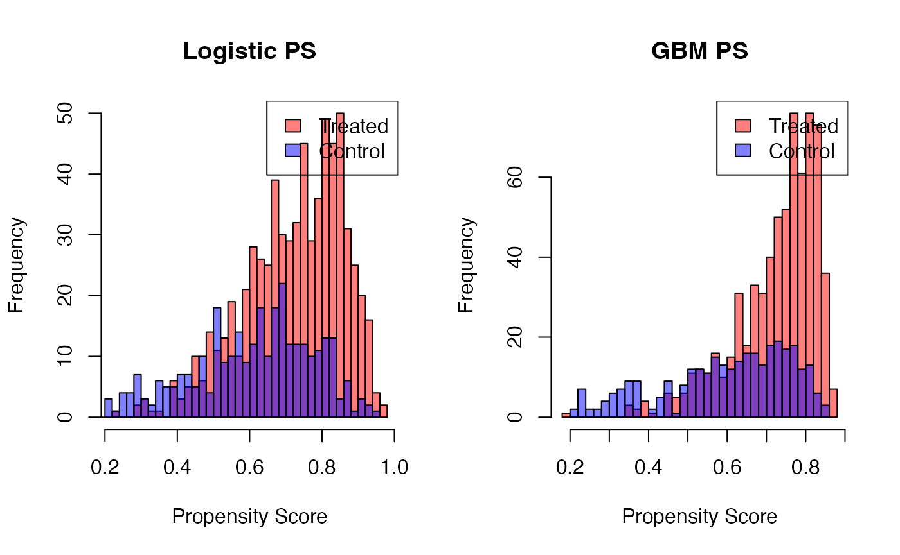
# Manual PS matching using MatchIt with a user-supplied PS
m_user_ps <- matchit(
treatment ~ age + income + education + experience,
data = sim_data,
method = "nearest",
distance = sim_data$ps_logit, # user-supplied propensity scores
caliper = 0.1,
replace = FALSE
)
#> Warning: Fewer control units than treated units; not all treated units will get
#> a match.
summary(m_user_ps)
#>
#> Call:
#> matchit(formula = treatment ~ age + income + education + experience,
#> data = sim_data, method = "nearest", distance = sim_data$ps_logit,
#> replace = FALSE, caliper = 0.1)
#>
#> Summary of Balance for All Data:
#> Means Treated Means Control Std. Mean Diff. Var. Ratio eCDF Mean
#> distance 0.7224 0.6092 0.8326 0.6590 0.1982
#> age 41.2769 36.3723 0.4991 1.0399 0.1424
#> income 51830.4982 45727.4053 0.4309 0.8579 0.1167
#> education 0.4643 0.3131 0.3032 . 0.1512
#> experience 19.3843 14.5803 0.4834 1.0828 0.1432
#> eCDF Max
#> distance 0.2980
#> age 0.2365
#> income 0.1985
#> education 0.1512
#> experience 0.2200
#>
#> Summary of Balance for Matched Data:
#> Means Treated Means Control Std. Mean Diff. Var. Ratio eCDF Mean
#> distance 0.6528 0.6407 0.0895 1.0495 0.0260
#> age 37.9173 37.4911 0.0434 1.1267 0.0197
#> income 47582.3080 47639.9007 -0.0041 0.9151 0.0133
#> education 0.3838 0.3345 0.0988 . 0.0493
#> experience 16.3531 15.5579 0.0800 1.0719 0.0249
#> eCDF Max Std. Pair Dist.
#> distance 0.0704 0.0921
#> age 0.0599 0.8005
#> income 0.0423 0.9317
#> education 0.0493 0.6637
#> experience 0.0634 0.7986
#>
#> Sample Sizes:
#> Control Treated
#> All 313 687
#> Matched 284 284
#> Unmatched 29 403
#> Discarded 0 0Inverse Probability of Treatment Weighting (IPTW) uses the propensity score to reweight the sample. The weights are:
# Manual IPTW for ATT
sim_data <- sim_data %>%
mutate(
ipw_att = ifelse(treatment == 1, 1,
ps_logit / (1 - ps_logit)),
ipw_ate = ifelse(treatment == 1, 1 / ps_logit,
1 / (1 - ps_logit))
)
# Stabilized weights (reduce variability)
sim_data <- sim_data %>%
mutate(
p_treat = mean(treatment),
sw_ate = ifelse(treatment == 1,
p_treat / ps_logit,
(1 - p_treat) / (1 - ps_logit))
)
# Weighted regression for ATT
lm_ipw_att <- lm(outcome ~ treatment, data = sim_data, weights = ipw_att)
coef(lm_ipw_att)["treatment"]
#> treatment
#> 8.615979
# Create 5 strata based on PS quantiles
sim_data$ps_stratum <- cut(
sim_data$ps_logit,
breaks = quantile(sim_data$ps_logit, probs = seq(0, 1, 0.2)),
include.lowest = TRUE,
labels = 1:5
)
# Within-stratum treatment effects
strat_effects <- sim_data %>%
group_by(ps_stratum) %>%
dplyr::summarise(
n_treat = sum(treatment),
n_control = sum(1 - treatment),
att_strat = mean(outcome[treatment == 1]) - mean(outcome[treatment == 0]),
.groups = "drop"
)
print(strat_effects)
#> # A tibble: 5 × 4
#> ps_stratum n_treat n_control att_strat
#> <fct> <int> <dbl> <dbl>
#> 1 1 91 109 10.0
#> 2 2 128 72 8.51
#> 3 3 139 61 8.79
#> 4 4 152 48 8.25
#> 5 5 177 23 10.9
# Weighted average (ATT weights = proportion of treated in each stratum)
strat_effects <- strat_effects %>%
mutate(weight = n_treat / sum(n_treat))
att_strat <- sum(strat_effects$att_strat * strat_effects$weight)
cat("Stratified ATT:", round(att_strat, 2), "\n")
#> Stratified ATT: 9.33Extreme propensity scores can lead to highly variable weights and unstable estimates. Two remedies:
# Trimming: drop observations with extreme PS
sim_trimmed <- sim_data %>%
filter(ps_logit >= 0.05 & ps_logit <= 0.95)
cat("Observations retained after trimming:",
nrow(sim_trimmed), "of", nrow(sim_data), "\n")
#> Observations retained after trimming: 996 of 1000
# Re-estimate on trimmed sample
m_nn_trimmed <- matchit(
treatment ~ age + income + education + experience,
data = sim_trimmed,
method = "nearest"
)
#> Warning: Fewer control units than treated units; not all treated units will get
#> a match.
# Truncation: cap extreme weights
w_trunc <- w_ipw$weights
threshold <- quantile(w_trunc[w_trunc > 0], 0.99)
w_trunc[w_trunc > threshold] <- threshold
summary(w_trunc)
#> Min. 1st Qu. Median Mean 3rd Qu. Max.
#> 0.2335 1.0000 1.0000 1.3488 1.0000 6.7467
# Visual assessment of common support
ggplot(sim_data, aes(x = ps_logit, fill = factor(treatment))) +
geom_density(alpha = 0.5) +
labs(
title = "Propensity Score Distributions by Treatment Group",
x = "Propensity Score",
y = "Density",
fill = "Treatment"
) +
theme_minimal()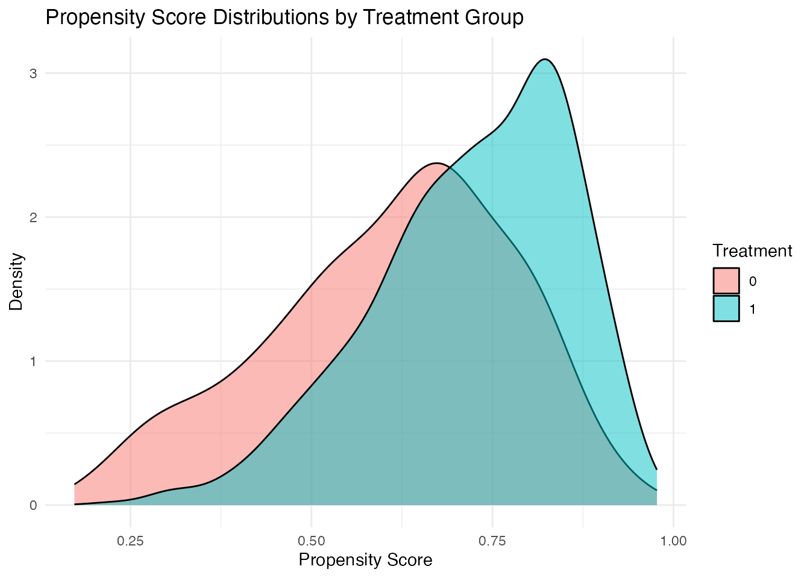
# Identify the region of common support
ps_range_treat <- range(sim_data$ps_logit[sim_data$treatment == 1])
ps_range_control <- range(sim_data$ps_logit[sim_data$treatment == 0])
common_support <- c(
max(ps_range_treat[1], ps_range_control[1]),
min(ps_range_treat[2], ps_range_control[2])
)
cat("Common support region:", round(common_support, 3), "\n")
#> Common support region: 0.225 0.95
# Fraction of observations within common support
in_support <- sim_data$ps_logit >= common_support[1] &
sim_data$ps_logit <= common_support[2]
cat("Fraction in common support:", mean(in_support), "\n")
#> Fraction in common support: 0.993CEM (Iacus, King, and Porro, 2012) takes a fundamentally different approach from propensity score methods. Instead of modeling the treatment assignment mechanism, CEM directly imposes a bound on the maximum imbalance.
The algorithm proceeds in three steps:
The key property of CEM is the congruence principle: restricting the analysis to well-matched strata guarantees that the maximum imbalance (measured by the statistic) is bounded by the coarsening level. Finer coarsening yields better balance but more discarded observations.
library(MatchIt)
# CEM with automatic coarsening
m_cem_auto <- matchit(
treatment ~ age + income + education + experience,
data = sim_data,
method = "cem"
)
summary(m_cem_auto)
#>
#> Call:
#> matchit(formula = treatment ~ age + income + education + experience,
#> data = sim_data, method = "cem")
#>
#> Summary of Balance for All Data:
#> Means Treated Means Control Std. Mean Diff. Var. Ratio eCDF Mean
#> age 41.2769 36.3723 0.4991 1.0399 0.1424
#> income 51830.4982 45727.4053 0.4309 0.8579 0.1167
#> education 0.4643 0.3131 0.3032 . 0.1512
#> experience 19.3843 14.5803 0.4834 1.0828 0.1432
#> eCDF Max
#> age 0.2365
#> income 0.1985
#> education 0.1512
#> experience 0.2200
#>
#> Summary of Balance for Matched Data:
#> Means Treated Means Control Std. Mean Diff. Var. Ratio eCDF Mean
#> age 38.9883 38.9895 -0.0001 0.9613 0.0102
#> income 49848.0647 49287.1099 0.0396 1.0423 0.0162
#> education 0.4066 0.4066 -0.0000 . 0.0000
#> experience 17.1065 16.9738 0.0133 0.9979 0.0117
#> eCDF Max Std. Pair Dist.
#> age 0.0451 0.1803
#> income 0.0665 0.2008
#> education 0.0000 0.0000
#> experience 0.0453 0.1605
#>
#> Sample Sizes:
#> Control Treated
#> All 313. 687
#> Matched (ESS) 154.41 455
#> Matched 254. 455
#> Unmatched 59. 232
#> Discarded 0. 0
# CEM with user-specified cut points
m_cem_custom <- matchit(
treatment ~ age + income + education + experience,
data = sim_data,
method = "cem",
cutpoints = list(
age = seq(20, 65, by = 5),
income = seq(10000, 90000, by = 10000),
experience = seq(0, 40, by = 5)
),
grouping = list(
education = list(c("0"), c("1"))
)
)
summary(m_cem_custom)
#>
#> Call:
#> matchit(formula = treatment ~ age + income + education + experience,
#> data = sim_data, method = "cem", cutpoints = list(age = seq(20,
#> 65, by = 5), income = seq(10000, 90000, by = 10000),
#> experience = seq(0, 40, by = 5)), grouping = list(education = list(c("0"),
#> c("1"))))
#>
#> Summary of Balance for All Data:
#> Means Treated Means Control Std. Mean Diff. Var. Ratio eCDF Mean
#> age 41.2769 36.3723 0.4991 1.0399 0.1424
#> income 51830.4982 45727.4053 0.4309 0.8579 0.1167
#> education 0.4643 0.3131 0.3032 . 0.1512
#> experience 19.3843 14.5803 0.4834 1.0828 0.1432
#> eCDF Max
#> age 0.2365
#> income 0.1985
#> education 0.1512
#> experience 0.2200
#>
#> Summary of Balance for Matched Data:
#> Means Treated Means Control Std. Mean Diff. Var. Ratio eCDF Mean
#> age 39.1891 39.3196 -0.0133 1.0158 0.0107
#> income 50041.2755 49781.3746 0.0184 0.9556 0.0102
#> education 0.3679 0.3679 0.0000 . 0.0000
#> experience 17.2167 17.0889 0.0129 0.9992 0.0119
#> eCDF Max Std. Pair Dist.
#> age 0.0568 0.1552
#> income 0.0417 0.2288
#> education 0.0000 0.0000
#> experience 0.0482 0.1598
#>
#> Sample Sizes:
#> Control Treated
#> All 313. 687
#> Matched (ESS) 166.45 443
#> Matched 258. 443
#> Unmatched 55. 244
#> Discarded 0. 0
# Check how many observations were retained
matched_cem_custom <- match.data(m_cem_custom)
cat("Retained:", nrow(matched_cem_custom), "of", nrow(sim_data), "\n")
#> Retained: 701 of 1000
cat("Treated retained:", sum(matched_cem_custom$treatment), "\n")
#> Treated retained: 443
cat("Control retained:", sum(1 - matched_cem_custom$treatment), "\n")
#> Control retained: 258
# Weighted regression on matched CEM data
matched_cem_est <- match.data(m_cem_custom)
lm_cem <- lm(
outcome ~ treatment + age + income + education + experience,
data = matched_cem_est,
weights = weights
)
summary(lm_cem)
#>
#> Call:
#> lm(formula = outcome ~ treatment + age + income + education +
#> experience, data = matched_cem_est, weights = weights)
#>
#> Weighted Residuals:
#> Min 1Q Median 3Q Max
#> -16.5163 -3.3383 -0.0141 3.1191 14.9527
#>
#> Coefficients:
#> Estimate Std. Error t value Pr(>|t|)
#> (Intercept) 7.768e+00 1.911e+00 4.064 5.37e-05 ***
#> treatment 8.075e+00 3.887e-01 20.774 < 2e-16 ***
#> age 6.533e-01 6.878e-02 9.499 < 2e-16 ***
#> income 6.939e-05 1.580e-05 4.393 1.30e-05 ***
#> education 3.652e+00 3.923e-01 9.307 < 2e-16 ***
#> experience 1.040e-01 6.700e-02 1.552 0.121
#> ---
#> Signif. codes: 0 '***' 0.001 '**' 0.01 '*' 0.05 '.' 0.1 ' ' 1
#>
#> Residual standard error: 4.958 on 695 degrees of freedom
#> Multiple R-squared: 0.6983, Adjusted R-squared: 0.6961
#> F-statistic: 321.7 on 5 and 695 DF, p-value: < 2.2e-16
coef(lm_cem)["treatment"]
#> treatment
#> 8.075194Entropy balancing (Hainmueller, 2012) reweights the control group so that the reweighted control moments exactly match the treated group moments. The optimization problem is:
subject to:
where is the entropy divergence from base weights , are moment functions (means, variances, etc.), and are the corresponding moments in the treated group.
The key advantage is that exact balance is achieved by construction, not checked post hoc. The weights are as close to uniform as possible while satisfying the balance constraints, avoiding the extreme weights that plague traditional IPW.
library(WeightIt)
# First moment (mean) balancing
w_ebal_m1 <- weightit(
treatment ~ age + income + education + experience,
data = sim_data,
method = "ebal",
estimand = "ATT",
moments = 1 # balance means only
)
# Second moment (mean + variance) balancing
w_ebal_m2 <- weightit(
treatment ~ age + income + education + experience,
data = sim_data,
method = "ebal",
estimand = "ATT",
moments = 2 # balance means and variances
)
# Third moment (mean + variance + skewness)
w_ebal_m3 <- weightit(
treatment ~ age + income + education + experience,
data = sim_data,
method = "ebal",
estimand = "ATT",
moments = 3
)
# Compare weight distributions
summary(w_ebal_m1$weights)
#> Min. 1st Qu. Median Mean 3rd Qu. Max.
#> 0.1117 1.0000 1.0000 1.0000 1.0000 6.9091
summary(w_ebal_m2$weights)
#> Min. 1st Qu. Median Mean 3rd Qu. Max.
#> 0.08344 1.00000 1.00000 1.00000 1.00000 6.40440
summary(w_ebal_m3$weights)
#> Min. 1st Qu. Median Mean 3rd Qu. Max.
#> 0.07535 1.00000 1.00000 1.00000 1.00000 7.53604
# Higher moments = better balance but more variable weights
library(cobalt)
bal.tab(w_ebal_m1, thresholds = c(m = 0.01))
#> Balance Measures
#> Type Diff.Adj M.Threshold
#> age Contin. 0 Balanced, <0.01
#> income Contin. 0 Balanced, <0.01
#> education Binary -0 Balanced, <0.01
#> experience Contin. 0 Balanced, <0.01
#>
#> Balance tally for mean differences
#> count
#> Balanced, <0.01 4
#> Not Balanced, >0.01 0
#>
#> Variable with the greatest mean difference
#> Variable Diff.Adj M.Threshold
#> income 0 Balanced, <0.01
#>
#> Effective sample sizes
#> Control Treated
#> Unadjusted 313. 687
#> Adjusted 183.24 687
love.plot(
w_ebal_m1,
abs = TRUE,
thresholds = c(m = 0.05),
title = "Entropy Balancing: Balance Assessment"
)
#> Warning: Standardized mean differences and raw mean differences are present in
#> the same plot. Use the `stars` argument to distinguish between them and
#> appropriately label the x-axis. See `?love.plot` for details.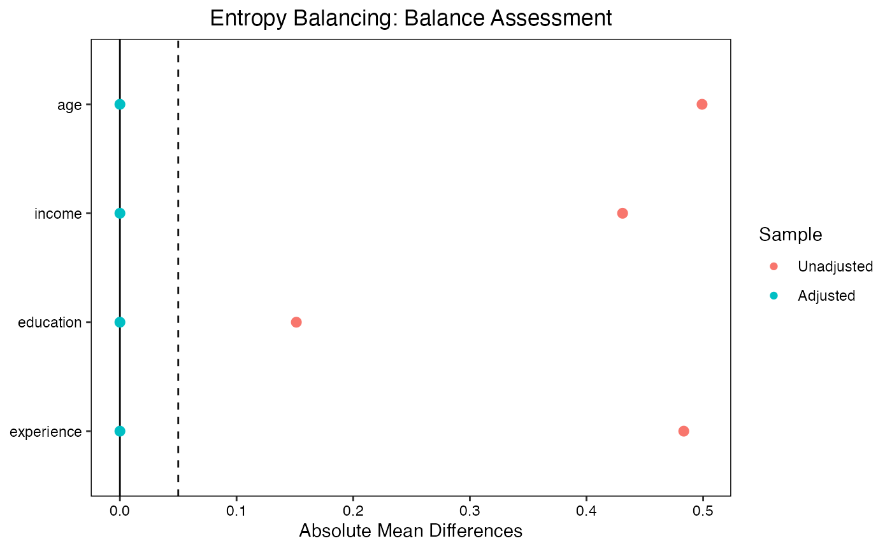
PanelMatch
While the methods above are designed for cross-sectional settings, panel data require specialized approaches. The PanelMatch package (Imai, Kim, and Wang, 2023) performs matching in panel data by finding control units with similar treatment and covariate histories.
In cross-sectional matching, each treated unit is matched to control units with similar covariate values at a single point in time. In panel data, PanelMatch:
PanelMatch addresses time-varying confounding.
library(PanelMatch)
# PanelMatch requires a PanelData object
# See the DID vignette (vignettes/c_did.Rmd) for complete examples
# pd <- PanelData(
# panel.data = my_panel,
# unit.id = "unit",
# time.id = "year",
# treatment = "treat",
# outcome = "y"
# )
# PM.results <- PanelMatch(
# panel.data = pd,
# lag = 4,
# refinement.method = "mahalanobis",
# covs.formula = ~ I(lag(x1, 1:4)) + I(lag(x2, 1:4)),
# size.match = 5,
# qoi = "att",
# lead = 0:4,
# match.missing = TRUE
# )After panel matching, use the causalverse balance functions described in Section 3:
balance_scatter_custom() to compare SMDs before and after matching refinement.plot_covariate_balance_pretrend() to visualize balance trajectories across pre-treatment periods.See the DID vignette for worked examples with real data.
All matching methods rely on the untestable assumption of no unmeasured confounding. Sensitivity analysis quantifies how robust the findings are to potential violations of this assumption.
Rosenbaum’s sensitivity analysis framework asks: “How large would an unmeasured confounder need to be to explain away the observed treatment effect?” The sensitivity parameter (gamma) represents the maximum factor by which two units with the same observed covariates can differ in their odds of treatment due to an unmeasured confounder.
At , there is no hidden bias. As increases, the assumption of no unmeasured confounding is progressively relaxed. The analyst reports the value of at which the result first becomes insignificant.
library(rbounds)
library(Matching)
# First, perform matching
match_out <- Match(
Y = sim_data$outcome,
Tr = sim_data$treatment,
X = sim_data[, c("age", "income", "education", "experience")],
estimand = "ATT",
M = 1
)
summary(match_out)
# Rosenbaum bounds for the matched estimate
psens(match_out, Gamma = 2, GammaInc = 0.1)
# Hodges-Lehmann point estimate sensitivity
hlsens(match_out, Gamma = 2, GammaInc = 0.1)sensemakr
The sensemakr package (Cinelli and Hazlett, 2020) provides a different approach to sensitivity analysis based on omitted variable bias (OVB). It quantifies how strong an omitted confounder would need to be—in terms of its partial with both treatment and outcome—to explain away the estimated effect.
library(sensemakr)
#> See details in:
#> Carlos Cinelli and Chad Hazlett (2020). Making Sense of Sensitivity: Extending Omitted Variable Bias. Journal of the Royal Statistical Society, Series B (Statistical Methodology).
# Fit a regression on matched data
matched_data_sens <- match.data(m_nn)
lm_fit <- lm(
outcome ~ treatment + age + income + education + experience,
data = matched_data_sens,
weights = weights
)
# Sensitivity analysis
sens <- sensemakr(
model = lm_fit,
treatment = "treatment",
benchmark_covariates = c("age", "income", "education"),
kd = 1:3, # multiples of benchmark strength
ky = 1:3
)
summary(sens)
#> Sensitivity Analysis to Unobserved Confounding
#>
#> Model Formula: outcome ~ treatment + age + income + education + experience
#>
#> Null hypothesis: q = 1 and reduce = TRUE
#> -- This means we are considering biases that reduce the absolute value of the current estimate.
#> -- The null hypothesis deemed problematic is H0:tau = 0
#>
#> Unadjusted Estimates of 'treatment':
#> Coef. estimate: 8.1258
#> Standard Error: 0.5616
#> t-value (H0:tau = 0): 14.4697
#>
#> Sensitivity Statistics:
#> Partial R2 of treatment with outcome: 0.2524
#> Robustness Value, q = 1: 0.4363
#> Robustness Value, q = 1, alpha = 0.05: 0.3917
#>
#> Verbal interpretation of sensitivity statistics:
#>
#> -- Partial R2 of the treatment with the outcome: an extreme confounder (orthogonal to the covariates) that explains 100% of the residual variance of the outcome, would need to explain at least 25.24% of the residual variance of the treatment to fully account for the observed estimated effect.
#>
#> -- Robustness Value, q = 1: unobserved confounders (orthogonal to the covariates) that explain more than 43.63% of the residual variance of both the treatment and the outcome are strong enough to bring the point estimate to 0 (a bias of 100% of the original estimate). Conversely, unobserved confounders that do not explain more than 43.63% of the residual variance of both the treatment and the outcome are not strong enough to bring the point estimate to 0.
#>
#> -- Robustness Value, q = 1, alpha = 0.05: unobserved confounders (orthogonal to the covariates) that explain more than 39.17% of the residual variance of both the treatment and the outcome are strong enough to bring the estimate to a range where it is no longer 'statistically different' from 0 (a bias of 100% of the original estimate), at the significance level of alpha = 0.05. Conversely, unobserved confounders that do not explain more than 39.17% of the residual variance of both the treatment and the outcome are not strong enough to bring the estimate to a range where it is no longer 'statistically different' from 0, at the significance level of alpha = 0.05.
#>
#> Bounds on omitted variable bias:
#>
#> --The table below shows the maximum strength of unobserved confounders with association with the treatment and the outcome bounded by a multiple of the observed explanatory power of the chosen benchmark covariate(s).
#>
#> Bound Label R2dz.x R2yz.dx Treatment Adjusted Estimate Adjusted Se Adjusted T
#> 1x age 0.0148 0.2052 treatment 7.3484 0.5048 14.5563
#> 2x age 0.0297 0.4105 treatment 6.5587 0.4381 14.9722
#> 3x age 0.0445 0.6161 treatment 5.7564 0.3563 16.1578
#> 1x income 0.2162 0.1002 treatment 5.8014 0.6022 9.6342
#> 2x income 0.4323 0.2270 treatment 2.3118 0.6558 3.5250
#> 3x income 0.6485 0.4261 treatment -4.2716 0.7181 -5.9481
#> 1x education 0.2105 0.2278 treatment 4.6803 0.5558 8.4205
#> 2x education 0.4209 0.5121 treatment -0.4047 0.5159 -0.7844
#> 3x education 0.6314 0.9427 treatment -9.6413 0.2216 -43.5047
#> Adjusted Lower CI Adjusted Upper CI
#> 6.3570 8.3397
#> 5.6984 7.4189
#> 5.0567 6.4560
#> 4.6188 6.9839
#> 1.0239 3.5997
#> -5.6819 -2.8613
#> 3.5888 5.7718
#> -1.4178 0.6085
#> -10.0765 -9.2060
# Contour plot: shows combinations of confounder strength
# that would reduce the estimate to zero
plot(sens)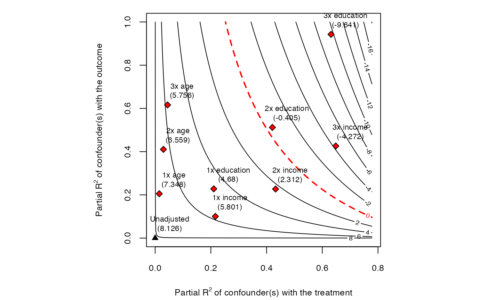
# Extreme scenario plot
plot(sens, sensitivity.of = "t-value")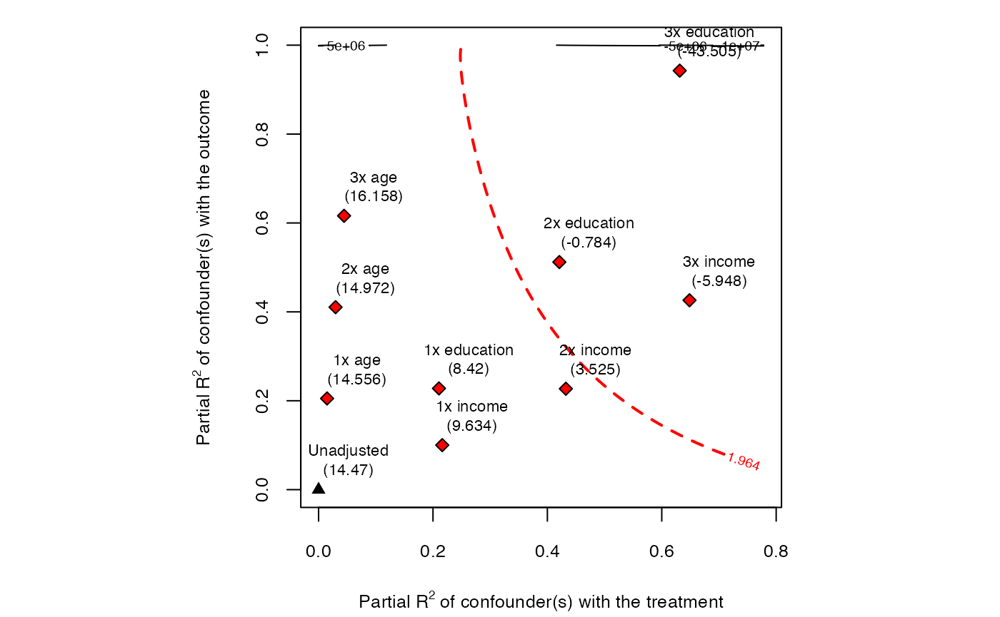
# The Robustness Value (RV) tells us the minimum
# strength of association an omitted confounder would
# need to have with both treatment and outcome to
# explain away the entire estimated effectKey outputs from sensemakr:
Each approach to causal inference under selection on observables involves modeling assumptions:
Doubly robust (DR) estimators combine both approaches and are consistent if either model is correctly specified (but not necessarily both). This provides a safety net against model misspecification.
The classic doubly robust estimator is the Augmented Inverse Probability Weighted (AIPW) estimator:
where is the estimated propensity score and is the estimated outcome model for treatment group .
Strategy 1: Regression on matched data (practical DR)
The simplest form of doubly robust estimation is to include covariates in the outcome regression estimated on matched data. This is what was demonstrated in Section 4.8.
matched_data_dr <- match.data(m_nn)
# Including covariates in the regression on matched data
# is a form of doubly robust estimation
lm_dr <- lm(
outcome ~ treatment + age + income + education + experience,
data = matched_data_dr,
weights = weights
)
coef(lm_dr)["treatment"]
#> treatment
#> 8.125829Strategy 2: WeightIt + regression
w_out <- weightit(
treatment ~ age + income + education + experience,
data = sim_data,
method = "ebal",
estimand = "ATT"
)
lm_dr_wt <- lm(
outcome ~ treatment + age + income + education + experience,
data = sim_data,
weights = w_out$weights
)
coef(lm_dr_wt)["treatment"]
#> treatment
#> 8.746281Strategy 3: DRDID package for panel data
The DRDID package (Sant’Anna and Zhao, 2020) implements doubly robust difference-in-differences estimators that combine inverse probability weighting with outcome regression in a panel data setting.
library(DRDID)
# Simulate repeated cross-section data for DRDID
set.seed(123)
n_rc <- 500
outcome_data <- data.frame(
x1 = rnorm(n_rc),
x2 = rnorm(n_rc),
x3 = rbinom(n_rc, 1, 0.5),
treat = rbinom(n_rc, 1, 0.4),
post = rbinom(n_rc, 1, 0.5)
)
outcome_data$y <- 2 + 0.5 * outcome_data$x1 - 0.3 * outcome_data$x2 +
outcome_data$x3 + 3 * outcome_data$treat * outcome_data$post +
rnorm(n_rc)
# For repeated cross-sections
dr_rc <- drdid_rc(
y = outcome_data$y,
post = outcome_data$post,
D = outcome_data$treat,
covariates = as.matrix(outcome_data[, c("x1", "x2", "x3")])
)
summary(dr_rc)
#> Call:
#> drdid_rc(y = outcome_data$y, post = outcome_data$post, D = outcome_data$treat,
#> covariates = as.matrix(outcome_data[, c("x1", "x2", "x3")]))
#> ------------------------------------------------------------------
#> Locally efficient DR DID estimator for the ATT:
#>
#> ATT Std. Error t value Pr(>|t|) [95% Conf. Interval]
#> 2.8184 0.3151 8.9436 0 2.2008 3.4361
#> ------------------------------------------------------------------
#> Estimator based on (stationary) repeated cross-sections data.
#> Outcome regression est. method: OLS.
#> Propensity score est. method: maximum likelihood.
#> Analytical standard error.
#> ------------------------------------------------------------------
#> See Sant'Anna and Zhao (2020) for details.
# Simulate panel data for DRDID
n_panel <- 300
panel_data <- data.frame(
x1 = rnorm(n_panel),
x2 = rnorm(n_panel),
x3 = rbinom(n_panel, 1, 0.5)
)
panel_data$treat <- rbinom(n_panel, 1, plogis(-0.5 + 0.3 * panel_data$x1))
panel_data$y_pre <- 1 + 0.5 * panel_data$x1 + panel_data$x2 + rnorm(n_panel)
panel_data$y_post <- panel_data$y_pre + 2 * panel_data$treat +
0.3 * panel_data$x1 + rnorm(n_panel)
# For panel data
dr_panel <- drdid_panel(
y1 = panel_data$y_post,
y0 = panel_data$y_pre,
D = panel_data$treat,
covariates = as.matrix(panel_data[, c("x1", "x2", "x3")])
)
summary(dr_panel)
#> Call:
#> drdid_panel(y1 = panel_data$y_post, y0 = panel_data$y_pre, D = panel_data$treat,
#> covariates = as.matrix(panel_data[, c("x1", "x2", "x3")]))
#> ------------------------------------------------------------------
#> Locally efficient DR DID estimator for the ATT:
#>
#> ATT Std. Error t value Pr(>|t|) [95% Conf. Interval]
#> 1.8087 0.1255 14.4147 0 1.5627 2.0546
#> ------------------------------------------------------------------
#> Estimator based on panel data.
#> Outcome regression est. method: OLS.
#> Propensity score est. method: maximum likelihood.
#> Analytical standard error.
#> ------------------------------------------------------------------
#> See Sant'Anna and Zhao (2020) for details.PSweight
The PSweight package (Zhou, Matsouaka, and Thomas, 2020) provides a unified framework for propensity score weighting that goes beyond standard IPW. It supports overlap weights (which target the population with the most clinical equipoise), trimming weights, and entropy weights. Overlap weights are particularly attractive because they naturally downweight units in regions of poor overlap, avoiding the extreme weights that plague IPW.
Overlap weights assign each unit a weight proportional to the probability of receiving the opposite treatment: treated units receive weight and control units receive weight , where is the propensity score. This targets the average treatment effect for the overlap population (ATO), which emphasizes the subpopulation where treated and control groups are most comparable.
library(PSweight)
# Fit propensity score model and compute overlap weights
ps_formula <- treatment ~ age + income + education + experience
# Summary statistics with overlap weights
ps_sum <- SumStat(
ps.formula = ps_formula,
data = sim_data,
weight = c("IPW", "overlap", "entropy", "treated")
)
# Compare effective sample sizes across weighting schemes
ps_sum
#> trt group for PS model is: 1
#> weights estimated for: IPW overlap entropy treated
# Plot propensity score distributions (mirror plot)
plot(ps_sum, type = "balance")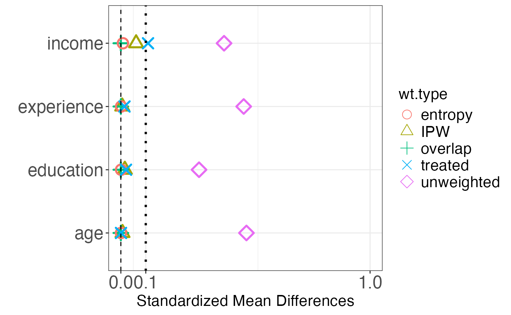
# Estimate ATO using overlap weights
ato_fit <- PSweight(
ps.formula = ps_formula,
yname = "outcome",
data = sim_data,
weight = "overlap"
)
summary(ato_fit)
#>
#> Closed-form inference:
#>
#> Original group value: 0, 1
#>
#> Contrast:
#> 0 1
#> Contrast 1 -1 1
#>
#> Estimate Std.Error lwr upr Pr(>|z|)
#> Contrast 1 8.5095e+00 3.0272e-06 8.5095e+00 8.5095 < 2.2e-16 ***
#> ---
#> Signif. codes: 0 '***' 0.001 '**' 0.01 '*' 0.05 '.' 0.1 ' ' 1
# Compare with entropy weights (another smooth weighting scheme)
ate_entropy <- PSweight(
ps.formula = ps_formula,
yname = "outcome",
data = sim_data,
weight = "entropy"
)
summary(ate_entropy)
#>
#> Closed-form inference:
#>
#> Original group value: 0, 1
#>
#> Contrast:
#> 0 1
#> Contrast 1 -1 1
#>
#> Estimate Std.Error lwr upr Pr(>|z|)
#> Contrast 1 8.5190e+00 2.1261e-05 8.5190e+00 8.519 < 2.2e-16 ***
#> ---
#> Signif. codes: 0 '***' 0.001 '**' 0.01 '*' 0.05 '.' 0.1 ' ' 1
# Trimming extreme propensity scores before IPW estimation
ps_trimmed <- PStrim(
ps.formula = ps_formula,
data = sim_data,
zname = "treatment",
delta = 0.05 # trim units with PS < 0.05 or > 0.95
)
cat("Observations retained after trimming:", nrow(ps_trimmed), "\n")
#> Observations retained after trimming:PSweight handles multiple treatment arms via generalized propensity scores. Overlap weights generalize naturally: each unit is weighted by the product of the probabilities of all treatments it did not receive.
set.seed(42)
# Simulate 3-arm treatment
n_multi <- 800
x1_m <- rnorm(n_multi)
x2_m <- rnorm(n_multi)
lp2 <- 0.5 * x1_m + 0.3 * x2_m
lp3 <- -0.3 * x1_m + 0.6 * x2_m
denom <- 1 + exp(lp2) + exp(lp3)
p1 <- 1 / denom; p2 <- exp(lp2) / denom; p3 <- exp(lp3) / denom
trt_multi <- apply(cbind(p1, p2, p3), 1, function(p) sample(1:3, 1, prob = p))
y_multi <- 2 * x1_m + 3 * (trt_multi == 2) + 5 * (trt_multi == 3) + rnorm(n_multi)
multi_data <- data.frame(
trt = as.factor(trt_multi), x1 = x1_m, x2 = x2_m, y = y_multi
)
# Overlap weights for multiple treatments
multi_fit <- PSweight(
ps.formula = trt ~ x1 + x2,
yname = "y",
data = multi_data,
weight = "overlap"
)
summary(multi_fit)
#>
#> Closed-form inference:
#>
#> Original group value: 1, 2, 3
#>
#> Contrast:
#> 1 2 3
#> Contrast 1 -1 1 0
#> Contrast 2 -1 0 1
#> Contrast 3 0 -1 1
#>
#> Estimate Std.Error lwr upr Pr(>|z|)
#> Contrast 1 3.015631 0.096943 2.825626 3.2056 < 2.2e-16 ***
#> Contrast 2 4.965682 0.099456 4.770752 5.1606 < 2.2e-16 ***
#> Contrast 3 1.950051 0.098266 1.757454 2.1426 < 2.2e-16 ***
#> ---
#> Signif. codes: 0 '***' 0.001 '**' 0.01 '*' 0.05 '.' 0.1 ' ' 1twang
The twang package (Ridgeway et al., 2024) uses generalized boosted models (GBM) to estimate propensity scores. GBM is a nonparametric machine learning method that automatically captures nonlinearities and interactions in the relationship between covariates and treatment assignment. Importantly, twang selects the number of boosting iterations by directly optimizing covariate balance (e.g., minimizing the maximum absolute standardized mean difference), rather than optimizing prediction accuracy.
library(twang)
#> To reproduce results from prior versions of the twang package, please see the version="legacy" option described in the documentation.
# Estimate propensity scores using GBM
# stop.method controls how the optimal iteration is selected
ps_gbm <- ps(
treatment ~ age + income + education + experience,
data = sim_data,
n.trees = 5000,
interaction.depth = 2,
shrinkage = 0.01,
stop.method = c("es.mean", "ks.max"),
estimand = "ATT",
verbose = FALSE
)
# Plot the optimization path: balance vs. number of iterations
plot(ps_gbm)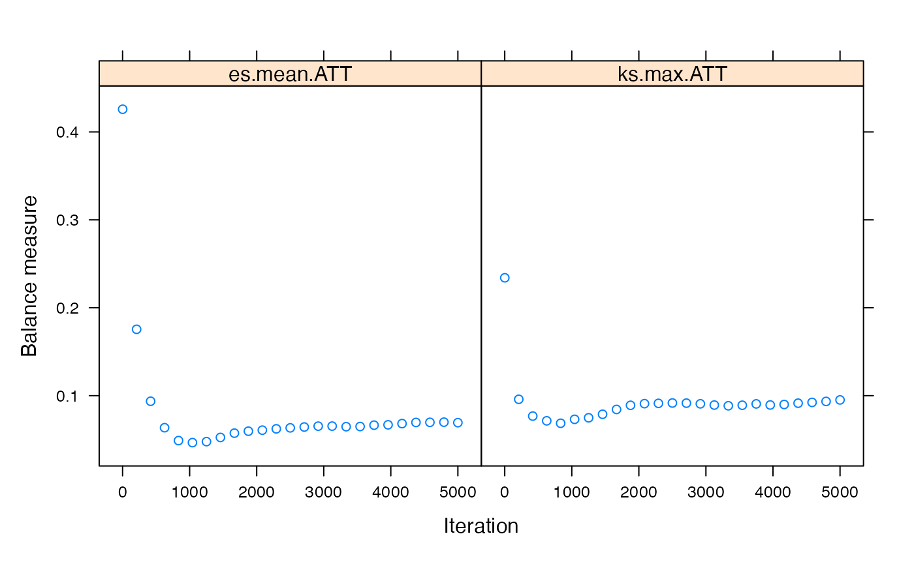
# Summary of balance achieved
summary(ps_gbm)
#> n.treat n.ctrl ess.treat ess.ctrl max.es mean.es max.ks
#> unw 687 313 687 313.0000 0.49907019 0.42910586 0.23645428
#> es.mean.ATT 687 313 687 195.7164 0.04961330 0.04596617 0.07252397
#> ks.max.ATT 687 313 687 201.1752 0.05916842 0.05142758 0.06738282
#> max.ks.p mean.ks iter
#> unw NA 0.20153838 NA
#> es.mean.ATT NA 0.04596714 1017
#> ks.max.ATT NA 0.04673394 751
# Detailed balance table across all covariates
bal <- bal.table(ps_gbm, digits = 3)
print(bal)
#> $unw
#> tx.mn tx.sd ct.mn ct.sd std.eff.sz stat p ks
#> age 41.277 9.828 36.372 9.637 0.499 7.423 0 0.236
#> income 51830.498 14162.553 45727.405 15290.617 0.431 5.993 0 0.198
#> education 0.464 0.499 0.313 0.464 0.303 4.667 0 0.151
#> experience 19.384 9.938 14.580 9.551 0.483 7.288 0 0.220
#> ks.pval
#> age 0
#> income 0
#> education 0
#> experience 0
#>
#> $es.mean.ATT
#> tx.mn tx.sd ct.mn ct.sd std.eff.sz stat p ks
#> age 41.277 9.828 40.789 9.018 0.050 0.675 0.500 0.043
#> income 51830.498 14162.553 51245.655 14969.408 0.041 0.449 0.653 0.073
#> education 0.464 0.499 0.441 0.497 0.046 0.556 0.578 0.023
#> experience 19.384 9.938 18.918 9.363 0.047 0.605 0.545 0.045
#> ks.pval
#> age 0.939
#> income 0.400
#> education 1.000
#> experience 0.916
#>
#> $ks.max.ATT
#> tx.mn tx.sd ct.mn ct.sd std.eff.sz stat p ks
#> age 41.277 9.828 40.695 9.035 0.059 0.811 0.418 0.045
#> income 51830.498 14162.553 51354.826 15009.297 0.034 0.368 0.713 0.067
#> education 0.464 0.499 0.436 0.497 0.057 0.690 0.491 0.028
#> experience 19.384 9.938 18.824 9.345 0.056 0.739 0.460 0.046
#> ks.pval
#> age 0.910
#> income 0.480
#> education 1.000
#> experience 0.894
# Relative influence of covariates in the GBM model
# Shows which variables most influence treatment assignment
summary(ps_gbm$gbm.obj, n.trees = ps_gbm$desc$es.mean.ATT$n.trees)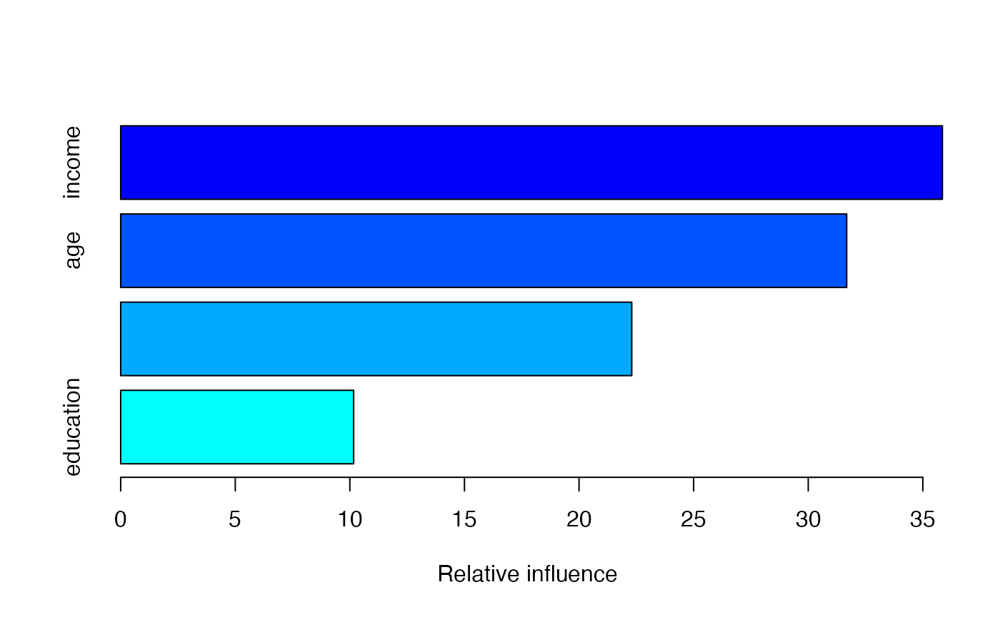
#> var rel.inf
#> income income 35.85448
#> age age 31.67886
#> experience experience 22.30077
#> education education 10.16589
# Visualize propensity score distributions
plot(ps_gbm, plots = 2) # PS overlap by treatment group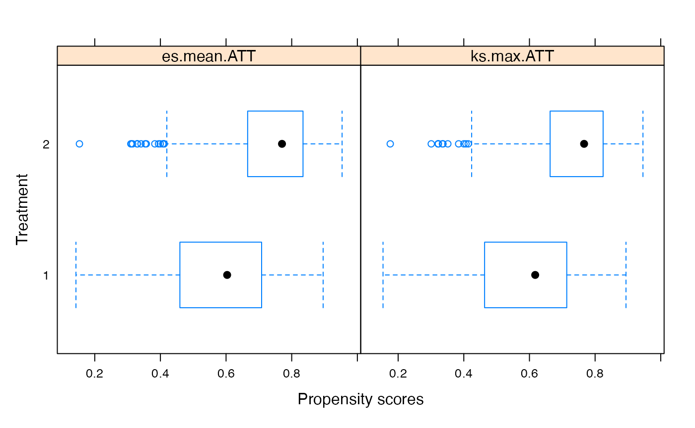
plot(ps_gbm, plots = 3) # Standardized effect sizes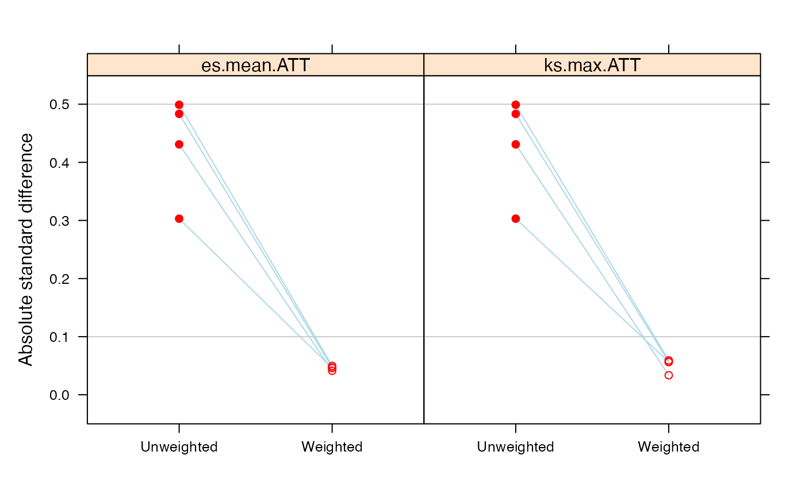
library(survey)
# Extract weights
sim_data$gbm_weights <- get.weights(ps_gbm, stop.method = "es.mean")
# Weighted outcome model using survey design
design_gbm <- svydesign(ids = ~1, weights = ~gbm_weights, data = sim_data)
fit_gbm <- svyglm(outcome ~ treatment, design = design_gbm)
summary(fit_gbm)
#>
#> Call:
#> svyglm(formula = outcome ~ treatment, design = design_gbm)
#>
#> Survey design:
#> svydesign(ids = ~1, weights = ~gbm_weights, data = sim_data)
#>
#> Coefficients:
#> Estimate Std. Error t value Pr(>|t|)
#> (Intercept) 41.3963 0.5402 76.63 <2e-16 ***
#> treatment 9.0598 0.6487 13.97 <2e-16 ***
#> ---
#> Signif. codes: 0 '***' 0.001 '**' 0.01 '*' 0.05 '.' 0.1 ' ' 1
#>
#> (Dispersion parameter for gaussian family taken to be 76.55842)
#>
#> Number of Fisher Scoring iterations: 2designmatch
The designmatch package (Zubizarreta, Kilcioglu, and Vielma, 2023) formulates matching as a mathematical optimization problem. Instead of sequentially finding nearest neighbors, it solves for the globally optimal set of matched pairs (or groups) subject to explicit balance constraints, sample size constraints, and other user-specified requirements. This approach guarantees that the matched sample satisfies all specified balance criteria simultaneously.
Cardinality matching finds the largest matched sample that satisfies user-specified balance constraints. This is the inverse of the usual matching problem: instead of minimizing distance for a given sample size, it maximizes sample size for a given level of balance.
library(designmatch)
set.seed(42)
# Prepare inputs for designmatch
t_ind <- which(sim_data$treatment == 1)
c_ind <- which(sim_data$treatment == 0)
# Covariate matrix (standardize for distance computation)
X_match <- scale(sim_data[, c("age", "income", "education", "experience")])
# Distance matrix between treated and control
dist_mat <- distmat(t_ind, c_ind, X_match)
# Balance constraints: mean differences within 0.05 SD
mom_covs <- X_match
mom_tols <- rep(0.05, ncol(X_match))
# Cardinality matching: maximize matched pairs subject to balance
card_out <- cardmatch(
t_ind = t_ind,
c_ind = c_ind,
dist_mat = dist_mat,
mom = list(covs = mom_covs, tols = mom_tols),
solver = "glpk"
)
# Matched pair indices
cat("Matched treated units:", sum(card_out$t_id != 0), "\n")
cat("Matched control units:", sum(card_out$c_id != 0), "\n")bmatch
Profile matching uses bmatch() to find an optimal set of matched pairs that minimizes total distance while respecting balance constraints.
# Fine balance on education (exact marginal balance)
fine_covs <- sim_data$education
# Balanced matching: minimize distance subject to constraints
bm_out <- bmatch(
t_ind = t_ind,
c_ind = c_ind,
dist_mat = dist_mat,
mom = list(covs = mom_covs, tols = mom_tols),
n_controls = 1,
solver = "glpk"
)
# Check balance in the matched sample
matched_t <- bm_out$t_id[bm_out$t_id != 0]
matched_c <- bm_out$c_id[bm_out$c_id != 0]
cat("Number of matched pairs:", length(matched_t), "\n")
cat("Mean age diff:", round(mean(sim_data$age[matched_t]) -
mean(sim_data$age[matched_c]), 3), "\n")
cat("Mean income diff:", round(mean(sim_data$income[matched_t]) -
mean(sim_data$income[matched_c]), 1), "\n")CMatching
When data have a natural clustering structure (e.g., patients within hospitals, students within schools), standard matching methods can produce matches that violate the cluster structure, leading to invalid inference. The CMatching package (Galdi and Ferraro, 2023) provides propensity score matching that accounts for clustering, offering within-cluster matching and preferential within-cluster matching.
library(CMatching)
set.seed(42)
# Simulate clustered data (e.g., patients in 20 hospitals)
n_clust <- 20
n_per <- 50
n_total <- n_clust * n_per
cluster <- rep(1:n_clust, each = n_per)
x1_c <- rnorm(n_total) + 0.3 * (cluster / n_clust)
x2_c <- rbinom(n_total, 1, plogis(-0.5 + 0.2 * cluster / n_clust))
ps_c <- plogis(-1 + 0.5 * x1_c + 0.8 * x2_c + 0.1 * cluster / n_clust)
treat_c <- rbinom(n_total, 1, ps_c)
y_c <- 2 + 3 * treat_c + x1_c + 2 * x2_c + rnorm(n_total)
clust_data <- data.frame(
y = y_c, treat = treat_c, x1 = x1_c, x2 = x2_c, cluster = cluster
)
# Estimate propensity scores
ps_model <- glm(treat ~ x1 + x2, data = clust_data, family = binomial)
clust_data$ps <- fitted(ps_model)
# Within-cluster matching
cm_out <- CMatch(
type = "within",
dataset = clust_data,
cluster_var = cluster,
pscore = clust_data$ps,
treat = clust_data$treat,
outcome = clust_data$y
)
cm_out
# Assess balance accounting for cluster structure
bal_cm <- CMatchBalance(
cm_out,
dataset = clust_data,
covariates = clust_data[, c("x1", "x2")]
)
bal_cmMatchThem
Missing data is ubiquitous in observational studies. The MatchThem package (Pishgar et al., 2021) bridges multiple imputation (via mice) with matching and weighting (via MatchIt and WeightIt). It applies matching or weighting within each imputed dataset and then pools the treatment effect estimates using Rubin’s rules, properly accounting for both within-imputation and between-imputation variability.
library(MatchThem)
#>
#> Attaching package: 'MatchThem'
#> The following object is masked from 'package:base':
#>
#> cbind
library(mice)
#>
#> Attaching package: 'mice'
#> The following objects are masked from 'package:MatchThem':
#>
#> cbind, pool
#> The following object is masked from 'package:stats':
#>
#> filter
#> The following objects are masked from 'package:base':
#>
#> cbind, rbind
set.seed(42)
# Introduce missing data (~15%) into sim_data
sim_miss <- sim_data
sim_miss$age[sample(n, 0.15 * n)] <- NA
sim_miss$income[sample(n, 0.10 * n)] <- NA
sim_miss$experience[sample(n, 0.12 * n)] <- NA
# Multiply impute (m = 5 imputations)
imp <- mice(
sim_miss[, c("age", "income", "education", "experience", "treatment", "outcome")],
m = 5,
method = "pmm",
maxit = 10,
printFlag = FALSE
)
# Match within each imputed dataset using MatchIt
matched_imp <- matchthem(
treatment ~ age + income + education + experience,
datasets = imp,
approach = "within",
method = "nearest",
ratio = 1
)
#>
#> Matching Observations | dataset: #1
#> Warning: Fewer control units than treated units; not all treated units will get
#> a match.
#> #2
#> Warning: Fewer control units than treated units; not all treated units will get
#> a match.
#> #3
#> Warning: Fewer control units than treated units; not all treated units will get
#> a match.
#> #4
#> Warning: Fewer control units than treated units; not all treated units will get
#> a match.
#> #5
#> Warning: Fewer control units than treated units; not all treated units will get
#> a match.
#>
summary(matched_imp)
#> Summarizing | dataset: #1
#>
#> Call:
#> matchthem(formula = treatment ~ age + income + education + experience,
#> datasets = imp, approach = "within", method = "nearest",
#> ratio = 1)
#>
#> Summary of Balance for All Data:
#> Means Treated Means Control Std. Mean Diff. Var. Ratio eCDF Mean
#> distance 0.7208 0.6128 0.7785 0.7922 0.1986
#> age 41.1934 36.3835 0.4869 1.0305 0.1396
#> income 51484.9006 45494.3234 0.4220 0.8883 0.1081
#> education 0.4643 0.3131 0.3032 . 0.1512
#> experience 19.4213 14.5507 0.4849 1.0929 0.1453
#> eCDF Max
#> distance 0.3004
#> age 0.2303
#> income 0.1822
#> education 0.1512
#> experience 0.2383
#>
#> Summary of Balance for Matched Data:
#> Means Treated Means Control Std. Mean Diff. Var. Ratio eCDF Mean
#> distance 0.8409 0.6128 1.6448 0.1058 0.4576
#> age 46.7104 36.3835 1.0454 0.7944 0.2985
#> income 58729.0645 45494.3234 0.9324 0.7435 0.2506
#> education 0.6645 0.3131 0.7047 . 0.3514
#> experience 25.1220 14.5507 1.0525 0.9247 0.3105
#> eCDF Max Std. Pair Dist.
#> distance 0.8083 1.6448
#> age 0.4537 1.2312
#> income 0.3642 1.2743
#> education 0.3514 1.0250
#> experience 0.4473 1.2310
#>
#> Sample Sizes:
#> Control Treated
#> All 313 687
#> Matched 313 313
#> Unmatched 0 374
#> Discarded 0 0
# Weight within each imputed dataset using WeightIt
weighted_imp <- weightthem(
treatment ~ age + income + education + experience,
datasets = imp,
approach = "within",
method = "ebal",
estimand = "ATT"
)
#> Estimating weights | dataset: #1 #2 #3 #4 #5
summary(weighted_imp)
#> Summarizing | dataset: #1
#> Summary of weights
#>
#> - Weight ranges:
#>
#> Min Max
#> treated 1. || 1.
#> control 0.115 |---------------------------| 7.21
#>
#> - Units with the 5 most extreme weights by group:
#>
#> 1 2 3 4 5
#> treated 1 1 1 1 1
#> 215 158 43 8 2
#> control 4.327 4.805 5.002 6.001 7.21
#>
#> - Weight statistics:
#>
#> Coef of Var MAD Entropy # Zeros
#> treated 0.000 0.000 0.000 0
#> control 0.876 0.574 0.281 0
#>
#> - Effective Sample Sizes:
#>
#> Control Treated
#> Unweighted 313. 687
#> Weighted 177.38 687
# Pool treatment effect estimates across imputations using Rubin's rules
with_result <- with(matched_imp, lm(outcome ~ treatment))
pooled_est <- pool(with_result)
summary(pooled_est)
#> term estimate std.error statistic df p.value
#> 1 (Intercept) 37.03841 0.4815866 76.90914 621.9464 6.746960e-320
#> 2 treatment 18.74653 0.6863408 27.31373 591.2624 7.173986e-107The CBPS package (Imai and Ratkovic, 2014; Fong, Hazlett, and Imai, 2022) estimates propensity scores by jointly optimizing prediction of treatment assignment and covariate balance. Standard propensity score estimation (e.g., logistic regression) maximizes the likelihood of treatment given covariates but treats balance as a byproduct. CBPS adds moment conditions that directly enforce balance, so the resulting propensity scores yield better covariate balance by construction.
library(CBPS)
#> Loading required package: MASS
#>
#> Attaching package: 'MASS'
#> The following object is masked from 'package:dplyr':
#>
#> select
#> Loading required package: nnet
#> Loading required package: numDeriv
#> Loading required package: glmnet
#> Loaded glmnet 4.1-10
#> CBPS: Covariate Balancing Propensity Score
#> Version: 0.24
#> Authors: Christian Fong [aut, cre],
#> Marc Ratkovic [aut],
#> Kosuke Imai [aut],
#> Chad Hazlett [ctb],
#> Xiaolin Yang [ctb],
#> Sida Peng [ctb],
#> Inbeom Lee [ctb]
set.seed(42)
# Estimate CBPS (default: exact balance on means)
cbps_fit <- CBPS(
treatment ~ age + income + education + experience,
data = sim_data,
ATT = 1 # target ATT; set to 0 for ATE
)
#> [1] "Finding ATT with T=1 as the treatment. Set ATT=2 to find ATT with T=0 as the treatment"
summary(cbps_fit)
#>
#> Call:
#> CBPS(formula = treatment ~ age + income + education + experience,
#> data = sim_data, ATT = 1)
#>
#> Coefficients:
#> Estimate Std. Error z value Pr(>|z|)
#> (Intercept) -2.63 5.95e-05 -44200 0.000 ***
#> age 0.0386 0.0476 0.811 0.417
#> income 2.73e-05 0.083 0.000329 1
#> education 0.674 7.39e-06 91100 0.000 ***
#> experience 0.0167 0.0345 0.483 0.629
#> ---
#> Signif. codes: 0 '***' 0.001 '**' 0.01 '*' 0.05 '.' 0.1 ' ' 1
#>
#> J - statistic: 0.005754007
#> Log-Likelihood: -564.5959
# Compare fitted propensity scores with true scores
plot(
sim_data$ps_true,
cbps_fit$fitted.values,
xlab = "True Propensity Score",
ylab = "CBPS Estimated Propensity Score",
main = "CBPS vs. True Propensity Scores",
pch = 16, cex = 0.5,
col = ifelse(sim_data$treatment == 1, "steelblue", "coral")
)
abline(0, 1, lty = 2)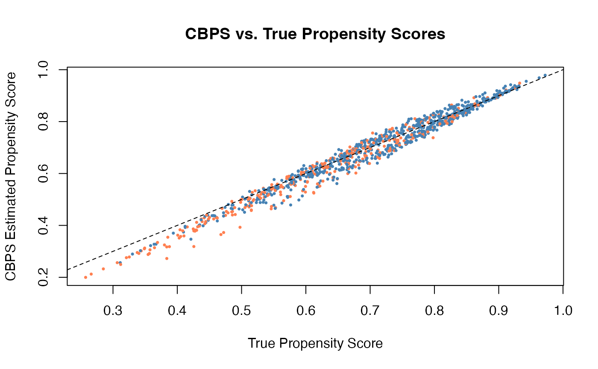
# Built-in balance assessment
bal_cbps <- balance(cbps_fit)
print(bal_cbps)
#> $balanced
#> 0.mean 1.mean 0.std.mean 1.std.mean
#> age 4.113664e+01 4.127690e+01 4.103319 4.1173094
#> income 5.283997e+04 5.183050e+04 3.572461 3.5042118
#> education 4.665589e-01 4.643377e-01 0.945773 0.9412704
#> experience 1.935710e+01 1.938426e+01 1.923487 1.9261858
#>
#> $original
#> 0.mean 1.mean 0.std.mean 1.std.mean
#> age 36.372283 4.127690e+01 3.6280811 4.1173094
#> income 45727.405285 5.183050e+04 3.0915874 3.5042118
#> education 0.313099 4.643377e-01 0.6346908 0.9412704
#> experience 14.580274 1.938426e+01 1.4488204 1.9261858
# Visualize balance improvement with causalverse
smd_before <- sapply(sim_data[, c("age", "income", "education", "experience")],
function(x) {
(mean(x[sim_data$treatment == 1]) - mean(x[sim_data$treatment == 0])) /
sqrt((var(x[sim_data$treatment == 1]) + var(x[sim_data$treatment == 0])) / 2)
}
)
w <- cbps_fit$weights
smd_after <- sapply(sim_data[, c("age", "income", "education", "experience")],
function(x) {
wt <- w * sim_data$treatment + w * (1 - sim_data$treatment)
m1 <- weighted.mean(x[sim_data$treatment == 1], w[sim_data$treatment == 1])
m0 <- weighted.mean(x[sim_data$treatment == 0], w[sim_data$treatment == 0])
s <- sqrt((var(x[sim_data$treatment == 1]) + var(x[sim_data$treatment == 0])) / 2)
(m1 - m0) / s
}
)
smd_df <- data.frame(
covariate = rep(names(smd_before), 2),
smd = c(abs(smd_before), abs(smd_after)),
stage = rep(c("Before", "After CBPS"), each = length(smd_before))
)
ggplot(smd_df, aes(x = abs(smd), y = covariate, color = stage, shape = stage)) +
geom_point(size = 3) +
geom_vline(xintercept = 0.1, linetype = "dashed", color = "grey50") +
labs(
x = "Absolute Standardized Mean Difference",
y = NULL,
title = "Covariate Balance Before and After CBPS"
) +
causalverse::ama_theme()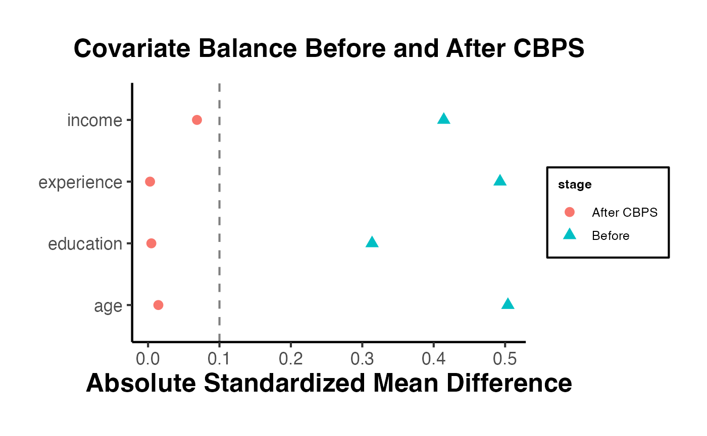
There is no universally best matching method. The choice depends on the data structure, sample size, and research goals:
| Method | Strengths | Weaknesses | Best When |
|---|---|---|---|
| Nearest Neighbor | Simple, intuitive | Greedy, order-dependent | Large control pool |
| Optimal | Minimizes total distance | Computationally intensive | Moderate sample size |
| Full | Uses all data, efficient | Weights can be variable | Need all observations |
| CEM | Transparent, bounded imbalance | Data loss in high dimensions | Few key covariates |
| PS Weighting (IPW) | Retains all data | Extreme weights possible | Large samples |
| Entropy Balancing | Exact moment balance | May not balance tails | Many confounders |
| CBPS | Targets balance directly | Model assumptions | Moderate dimensions |
After any matching or weighting procedure, verify the following:
Matching on post-treatment variables. Never match on variables that could be affected by treatment. This introduces post-treatment bias and can amplify, rather than remove, confounding. All matching covariates must be measured before treatment assignment.
Using hypothesis tests (p-values) to assess balance. Statistical significance of balance tests depends on sample size, not balance quality. In large samples, trivially small imbalances can be statistically significant; in small samples, large imbalances can be insignificant. Use standardized mean differences instead.
Iterating between matching and outcome analysis. Adjusting the matching specification based on outcome results (e.g., trying different methods until you get a significant effect) invalidates inference. Matching decisions should be finalized based on balance diagnostics alone, before examining the outcome.
Ignoring common support violations. If treated units have propensity scores far from any control unit, matches will be poor. Report and address violations rather than ignoring them.
Forgetting about unmeasured confounders. Matching can only adjust for observed covariates. Always conduct sensitivity analysis (Section 11) and discuss what unmeasured confounders might remain.
Matching without replacement when the control pool is small. With a small number of controls relative to treated units, matching without replacement forces later treated units to accept poor matches (the best controls are already taken). Consider matching with replacement or full matching in this situation.
Discarding matched data structure in estimation. After pair matching, standard errors should account for the matched structure (e.g., by clustering on the matched pair). After weighting, use survey-weighted standard errors or the bootstrap.
Over-relying on propensity score balance. The propensity score is a balancing score, but achieving PS balance does not guarantee covariate balance. Always check balance on the individual covariates, not just the propensity score.
A recommended workflow for matching analysis:
Specify covariates based on subject-matter knowledge. Include all pre-treatment variables that plausibly affect both treatment and outcome.
Assess initial balance to document the degree of confounding. Use causalverse::balance_assessment() and causalverse::plot_density_by_treatment().
Choose and implement matching/weighting. Start with a method that suits the data structure (see the table above). Use MatchIt or WeightIt.
Assess post-matching balance. Check that all SMDs are below 0.1. If not, revise the matching specification (add covariates, change method, adjust caliper) and re-assess. Do not look at outcomes yet.
Estimate the treatment effect on the matched/weighted sample, including covariates for doubly robust estimation.
Conduct sensitivity analysis to assess robustness to unmeasured confounding. Use sensemakr or Rosenbaum bounds.
Report transparently. Present the balance diagnostics, effective sample size, matching details, and sensitivity analysis alongside the treatment effect estimate.
Publication-quality figures are the cornerstone of a credible matching analysis. This section demonstrates a full diagnostic and reporting visualization pipeline using the LaLonde (1986) dataset - the canonical benchmark for matching methods - available via the MatchIt package.
library(MatchIt)
data("lalonde", package = "MatchIt")
# Create dummy variables from 'race' factor (needed for SMD and matching formulas)
lalonde$black <- as.integer(lalonde$race == "black")
lalonde$hispan <- as.integer(lalonde$race == "hispan")
# Quick overview
cat("LaLonde dataset dimensions:", nrow(lalonde), "x", ncol(lalonde), "\n")
#> LaLonde dataset dimensions: 614 x 11
cat("Treatment prevalence:", round(mean(lalonde$treat), 3), "\n\n")
#> Treatment prevalence: 0.301
# Covariates to balance
covs <- c("age", "educ", "black", "hispan", "married", "nodegree", "re74", "re75")
# Unadjusted SMDs (before matching)
compute_smd <- function(data, treat_var, vars) {
treat_vec <- data[[treat_var]]
sapply(vars, function(v) {
x1 <- data[[v]][treat_vec == 1]
x0 <- data[[v]][treat_vec == 0]
pooled_sd <- sqrt((var(x1) + var(x0)) / 2)
if (pooled_sd == 0) return(NA_real_)
(mean(x1) - mean(x0)) / pooled_sd
})
}
smd_pre <- compute_smd(lalonde, "treat", covs)
cat("Pre-matching absolute SMDs:\n")
#> Pre-matching absolute SMDs:
print(round(abs(smd_pre), 3))
#> age educ black hispan married nodegree re74 re75
#> 0.242 0.045 1.668 0.277 0.719 0.235 0.596 0.287causalverse::love_plot()
The Love plot is the single most important balance diagnostic: it displays standardized mean differences (SMDs) before and after matching for all covariates, with a conventional threshold of |SMD| < 0.1.
# Perform 1:1 nearest-neighbor matching on propensity score
m_nn <- matchit(
treat ~ age + educ + black + hispan + married + nodegree + re74 + re75,
data = lalonde,
method = "nearest",
ratio = 1
)
md_nn <- match.data(m_nn)
# Use causalverse::love_plot() for publication-ready balance visualization
causalverse::love_plot(
data_pre = lalonde,
data_post = md_nn,
treatment = "treat",
covariates = covs,
weights_post = md_nn$weights,
threshold = 0.1,
title = "Love Plot: Covariate Balance Before and After 1:1 NN Matching"
) +
causalverse::ama_theme() +
theme(axis.text.y = element_text(size = 9))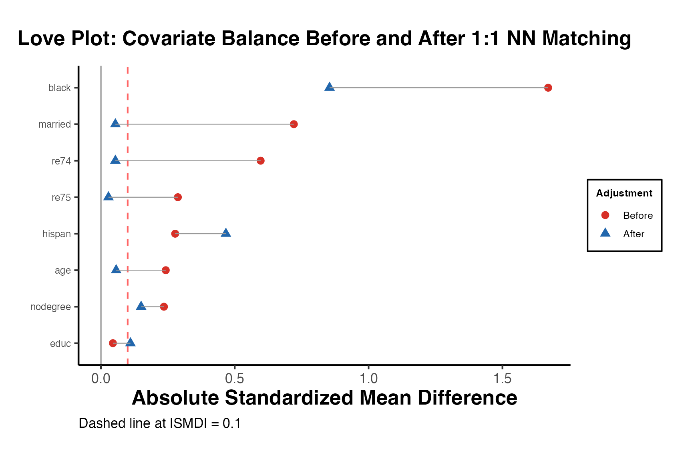
Beyond mean differences, the full distributional overlap should be verified. Density overlays for each covariate reveal whether matching has achieved distributional balance, not just mean balance.
# Prepare long-format data: pre- and post-matching, both groups
df_pre <- lalonde[, c("treat", covs)] |>
mutate(sample = "Before Matching",
wt = 1)
df_post <- md_nn[, c("treat", covs, "weights")] |>
rename(wt = weights) |>
mutate(sample = "After Matching")
df_both <- bind_rows(df_pre, df_post) |>
mutate(
group = factor(treat, labels = c("Control", "Treated")),
sample = factor(sample, levels = c("Before Matching", "After Matching"))
)
# Reshape to long for faceting
df_long <- df_both |>
tidyr::pivot_longer(cols = all_of(covs), names_to = "covariate", values_to = "value")
ggplot(df_long, aes(x = value, fill = group, color = group)) +
geom_density(alpha = 0.35, linewidth = 0.6, aes(weight = wt)) +
facet_grid(covariate ~ sample, scales = "free") +
scale_fill_manual(values = c("Treated" = "#D73027", "Control" = "#2166AC"),
name = "Group") +
scale_color_manual(values = c("Treated" = "#D73027", "Control" = "#2166AC"),
name = "Group") +
labs(
title = "Covariate Distributional Balance Before and After Matching",
subtitle = "Density overlays for treated (red) and control (blue) units",
x = "Covariate value",
y = "Density",
caption = "Left: unmatched sample. Right: 1:1 NN matched sample."
) +
causalverse::ama_theme() +
theme(
legend.position = "bottom",
strip.text.y = element_text(angle = 0, size = 7),
strip.text.x = element_text(size = 9),
axis.text = element_text(size = 6)
)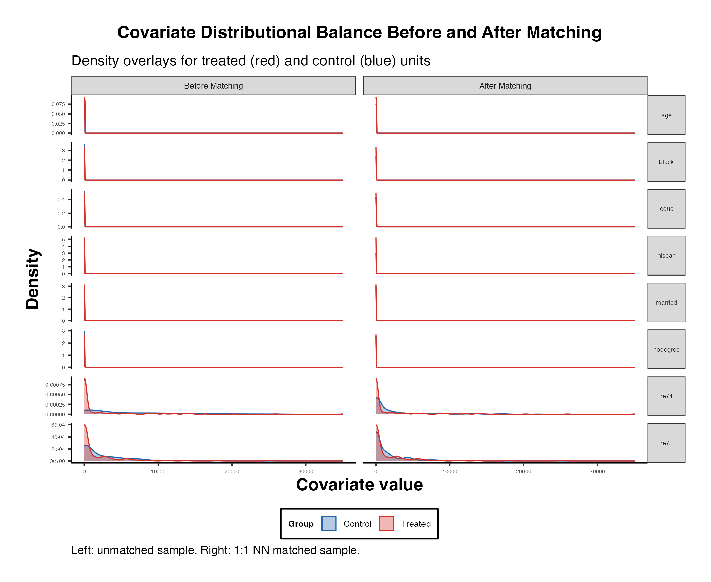
Propensity score overlap plots reveal regions of common support. Overlap weights (Li, Morgan, and Zaslavsky 2018) upweight units near the center of propensity score distribution and are robust to lack of overlap.
# Estimate propensity scores
ps_model <- glm(
treat ~ age + educ + black + hispan + married + nodegree + re74 + re75,
data = lalonde,
family = binomial(link = "logit")
)
lalonde$ps <- predict(ps_model, type = "response")
# Compute overlap (ATO) weights: e(X) * (1 - e(X))
# Treated: w_i = 1 - e(X); Control: w_i = e(X)
lalonde$ow_wt <- ifelse(lalonde$treat == 1,
1 - lalonde$ps,
lalonde$ps)
lalonde$group <- factor(lalonde$treat, labels = c("Control", "Treated"))
# Effective sample size with overlap weights
ess_treat <- sum(lalonde$ow_wt[lalonde$treat == 1])^2 /
sum(lalonde$ow_wt[lalonde$treat == 1]^2)
ess_ctrl <- sum(lalonde$ow_wt[lalonde$treat == 0])^2 /
sum(lalonde$ow_wt[lalonde$treat == 0]^2)
cat(sprintf("ESS (overlap weights): treated = %.1f, control = %.1f\n",
ess_treat, ess_ctrl))
#> ESS (overlap weights): treated = 145.6, control = 166.1
cat(sprintf("Original N: treated = %d, control = %d\n",
sum(lalonde$treat), sum(1 - lalonde$treat)))
#> Original N: treated = 185, control = 429
# Mirror histogram (treated above x-axis, control below)
df_ps_hist <- lalonde |>
mutate(display_density = ifelse(treat == 1, 1, -1))
ggplot(lalonde, aes(x = ps, fill = group)) +
geom_histogram(
data = filter(lalonde, treat == 1),
aes(y = after_stat(density)),
bins = 30, alpha = 0.7, color = "white"
) +
geom_histogram(
data = filter(lalonde, treat == 0),
aes(y = -after_stat(density)),
bins = 30, alpha = 0.7, color = "white"
) +
geom_hline(yintercept = 0, color = "black", linewidth = 0.4) +
scale_fill_manual(values = c("Treated" = "#D73027", "Control" = "#2166AC"),
name = "Group") +
scale_y_continuous(labels = function(x) abs(round(x, 2))) +
labs(
title = "Propensity Score Distribution by Treatment Status",
subtitle = "Treated above axis (red), control below (blue). Overlap region indicates common support.",
x = "Estimated propensity score P(D=1 | X)",
y = "Density",
caption = sprintf(
"Overlap (ATO) weights ESS: treated=%.1f, control=%.1f (original: %d, %d)",
ess_treat, ess_ctrl, sum(lalonde$treat), sum(1 - lalonde$treat)
)
) +
causalverse::ama_theme() +
theme(legend.position = "bottom")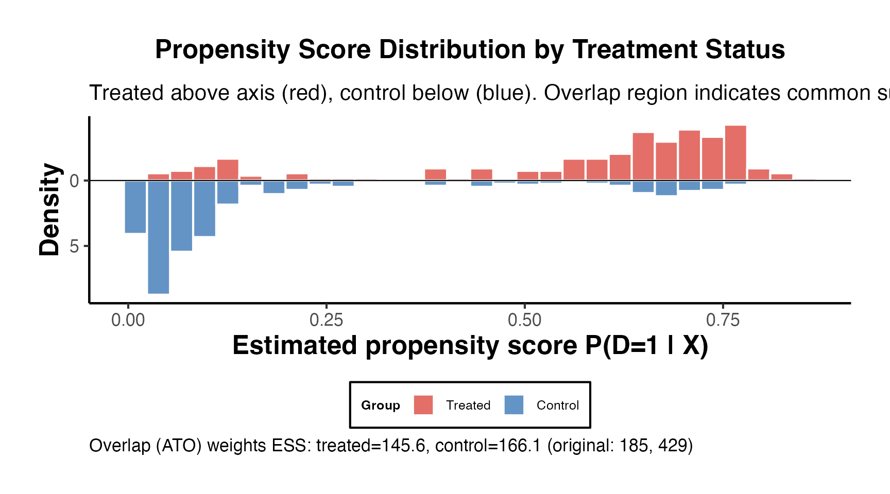
The caliper restricts matches to pairs whose propensity scores differ by less than a threshold. Wider calipers include more matches but allow poorer-quality matches. A caliper sensitivity plot reveals the bias-variance tradeoff.
# Vary caliper width and record: N matched, balance (max |SMD|), ATT estimate
calipers <- c(0.005, 0.01, 0.02, 0.05, 0.10, 0.20, Inf)
cal_results <- lapply(calipers, function(cal) {
m <- tryCatch({
matchit(
treat ~ age + educ + black + hispan + married + nodegree + re74 + re75,
data = lalonde,
method = "nearest",
ratio = 1,
caliper = if (is.infinite(cal)) NULL else cal,
std.caliper = FALSE
)
}, error = function(e) NULL)
if (is.null(m)) return(NULL)
md <- match.data(m)
# ATT: difference in means on matched sample
att <- mean(md$re78[md$treat == 1]) - mean(md$re78[md$treat == 0])
# Balance: max |SMD| across covariates
smd_post <- compute_smd(md, "treat", covs)
max_smd <- max(abs(smd_post), na.rm = TRUE)
n_matched <- nrow(md)
data.frame(
caliper = ifelse(is.infinite(cal), "None", as.character(cal)),
cal_val = ifelse(is.infinite(cal), 0.25, cal),
att = att,
max_smd = max_smd,
n_matched = n_matched
)
})
df_cal <- do.call(rbind, cal_results)
df_cal$caliper <- factor(df_cal$caliper,
levels = df_cal$caliper[order(df_cal$cal_val)])
# Dual-axis plot: ATT and max |SMD| vs caliper
p1 <- ggplot(df_cal, aes(x = caliper, y = att, group = 1)) +
geom_line(color = "#2166AC", linewidth = 1) +
geom_point(aes(size = n_matched), color = "#2166AC") +
geom_hline(yintercept = 0, linetype = "dashed", color = "gray50") +
scale_size_continuous(name = "N matched", range = c(2, 6)) +
labs(y = "ATT estimate (re78)", title = "ATT Estimate") +
causalverse::ama_theme() +
theme(axis.text.x = element_text(angle = 30, hjust = 1))
p2 <- ggplot(df_cal, aes(x = caliper, y = max_smd, group = 1)) +
geom_line(color = "#D73027", linewidth = 1) +
geom_point(color = "#D73027", size = 3) +
geom_hline(yintercept = 0.1, linetype = "dashed", color = "gray40") +
annotate("text", x = 1.2, y = 0.105, label = "|SMD| = 0.1 threshold",
size = 3, color = "gray40") +
labs(y = "Max |SMD|", title = "Worst-Case Balance") +
causalverse::ama_theme() +
theme(axis.text.x = element_text(angle = 30, hjust = 1))
gridExtra::grid.arrange(p1, p2, ncol = 2,
top = grid::textGrob(
"Caliper Sensitivity: ATT Estimate and Balance vs. Caliper Width",
gp = grid::gpar(fontsize = 12, fontface = "bold")
))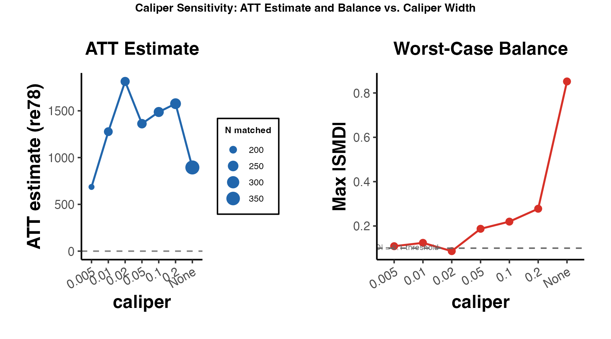
Increasing the matching ratio (1:) uses more control units per treated unit, reducing variance at the cost of increased bias (as matches become less similar). This plot shows the tradeoff.
ratios <- 1:4
ratio_results <- lapply(ratios, function(k) {
m <- matchit(
treat ~ age + educ + black + hispan + married + nodegree + re74 + re75,
data = lalonde,
method = "nearest",
ratio = k
)
md <- match.data(m)
att <- mean(md$re78[md$treat == 1]) - mean(md$re78[md$treat == 0])
smd_post <- compute_smd(md, "treat", covs)
mean_smd <- mean(abs(smd_post), na.rm = TRUE)
max_smd <- max(abs(smd_post), na.rm = TRUE)
n_treat <- sum(md$treat == 1)
n_ctrl <- sum(md$treat == 0)
data.frame(ratio = paste0("1:", k), k = k, att = att,
mean_smd = mean_smd, max_smd = max_smd,
n_treat = n_treat, n_ctrl = n_ctrl)
})
df_ratio <- do.call(rbind, ratio_results)
df_ratio$ratio <- factor(df_ratio$ratio, levels = df_ratio$ratio)
knitr::kable(df_ratio |>
dplyr::select(ratio, att, mean_smd, max_smd, n_treat, n_ctrl) |>
mutate(across(c(att, mean_smd, max_smd), ~round(., 3))),
col.names = c("Ratio", "ATT", "Mean |SMD|", "Max |SMD|",
"N Treated", "N Control"),
caption = "Matching ratio comparison: ATT and balance statistics")| Ratio | ATT | Mean |SMD| | Max |SMD| | N Treated | N Control |
|---|---|---|---|---|---|
| 1:1 | 894.367 | 0.221 | 0.852 | 185 | 185 |
| 1:2 | 220.289 | 0.422 | 1.537 | 185 | 370 |
| 1:3 | -635.026 | 0.509 | 1.668 | 185 | 429 |
| 1:4 | -635.026 | 0.509 | 1.668 | 185 | 429 |
# Visualize
df_ratio_long <- tidyr::pivot_longer(
df_ratio, cols = c("mean_smd", "max_smd"),
names_to = "metric", values_to = "value"
) |>
mutate(metric = dplyr::recode(metric,
"mean_smd" = "Mean |SMD|",
"max_smd" = "Max |SMD|"
))
ggplot(df_ratio_long, aes(x = ratio, y = value, color = metric, group = metric)) +
geom_line(linewidth = 1.1) +
geom_point(size = 3.5) +
geom_hline(yintercept = 0.1, linetype = "dashed", color = "gray40") +
annotate("text", x = 0.7, y = 0.104, label = "Threshold = 0.1",
size = 3, color = "gray40") +
scale_color_manual(values = c("Mean |SMD|" = "#2166AC", "Max |SMD|" = "#D73027"),
name = "Balance metric") +
labs(
title = "Balance vs. Matching Ratio",
subtitle = "LaLonde data; nearest-neighbor matching on logistic propensity score",
x = "Matching ratio (treated : control)",
y = "Standardized mean difference",
caption = "Dashed line: conventional |SMD| < 0.1 threshold"
) +
causalverse::ama_theme() +
theme(legend.position = "bottom")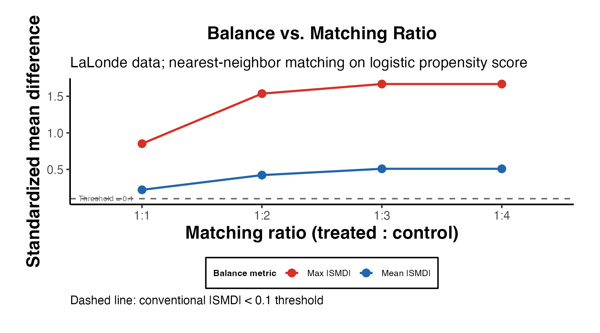
Crump et al. (2009) derived the asymptotically optimal rule for trimming units with extreme propensity scores when the target estimand is the ATE. The optimal trim keeps units with propensity scores in , where solves:
The simple rule-of-thumb from Crump et al. is , which retains units with propensity scores in .
# Crump et al. (2009) trimming: retain [alpha, 1-alpha]
# Simulate data with limited overlap
set.seed(42)
n <- 1000
X1 <- rnorm(n)
X2 <- rnorm(n)
X3 <- rbinom(n, 1, 0.4)
lp <- -0.5 + 1.2 * X1 - 0.8 * X2 + 0.4 * X3
ps <- plogis(lp)
D <- rbinom(n, 1, ps)
tau <- 2.0
Y <- 1 + tau * D + 0.5 * X1 - 0.3 * X2 + rnorm(n)
df_trim <- data.frame(Y = Y, D = D, X1 = X1, X2 = X2, X3 = X3, ps = ps)
# Crump optimal trim: solve for alpha* numerically
crump_lhs <- function(alpha, ps_vec) {
keep_idx <- ps_vec >= alpha & ps_vec <= 1 - alpha
if (sum(keep_idx) == 0) return(Inf)
1 / (2 * alpha * (1 - alpha))
}
crump_rhs <- function(alpha, ps_vec) {
keep_idx <- ps_vec >= alpha & ps_vec <= 1 - alpha
if (sum(keep_idx) == 0) return(0)
mean(1 / (ps_vec[keep_idx] * (1 - ps_vec[keep_idx])))
}
# Find alpha* via bisection (Crump et al. Theorem 2)
find_alpha_star <- function(ps_vec, alpha_grid = seq(0.001, 0.499, by = 0.001)) {
diffs <- sapply(alpha_grid, function(a) crump_lhs(a, ps_vec) - crump_rhs(a, ps_vec))
# Find first crossing
sign_change <- which(diff(sign(diffs)) != 0)
if (length(sign_change) == 0) return(NA)
alpha_grid[sign_change[1]]
}
alpha_star <- find_alpha_star(df_trim$ps)
cat(sprintf("Crump optimal alpha* = %.4f\n", alpha_star))
#> Crump optimal alpha* = 0.1010
cat(sprintf("Retains units with ps in [%.4f, %.4f]\n",
alpha_star, 1 - alpha_star))
#> Retains units with ps in [0.1010, 0.8990]
# Trimming comparison
rule_of_thumb_alpha <- 0.10
df_trim$trimmed_opt <- df_trim$ps >= alpha_star & df_trim$ps <= 1 - alpha_star
df_trim$trimmed_rot <- df_trim$ps >= rule_of_thumb_alpha &
df_trim$ps <= 1 - rule_of_thumb_alpha
cat(sprintf("\nOptimal trim: retain %d / %d (%.1f%%)\n",
sum(df_trim$trimmed_opt), n, 100 * mean(df_trim$trimmed_opt)))
#>
#> Optimal trim: retain 858 / 1000 (85.8%)
cat(sprintf("Rule-of-thumb (0.10) trim: retain %d / %d (%.1f%%)\n",
sum(df_trim$trimmed_rot), n, 100 * mean(df_trim$trimmed_rot)))
#> Rule-of-thumb (0.10) trim: retain 859 / 1000 (85.9%)
# IPW-ATE estimates before and after trimming
ipw_ate <- function(data) {
wt_treat <- 1 / data$ps
wt_ctrl <- 1 / (1 - data$ps)
mu1 <- weighted.mean(data$Y[data$D == 1], wt_treat[data$D == 1])
mu0 <- weighted.mean(data$Y[data$D == 0], wt_ctrl[data$D == 0])
mu1 - mu0
}
ate_full <- ipw_ate(df_trim)
ate_opt <- ipw_ate(df_trim[df_trim$trimmed_opt, ])
ate_rot <- ipw_ate(df_trim[df_trim$trimmed_rot, ])
cat(sprintf("\nIPW-ATE estimates (true = %.2f):\n", tau))
#>
#> IPW-ATE estimates (true = 2.00):
cat(sprintf(" Full sample (no trimming): %.4f\n", ate_full))
#> Full sample (no trimming): 2.1145
cat(sprintf(" Optimal trim (alpha*=%.3f): %.4f\n", alpha_star, ate_opt))
#> Optimal trim (alpha*=0.101): 2.0569
cat(sprintf(" Rule-of-thumb (alpha=0.10): %.4f\n", ate_rot))
#> Rule-of-thumb (alpha=0.10): 2.0589
# Propensity score histogram with trim regions
ggplot(df_trim, aes(x = ps, fill = factor(D, labels = c("Control", "Treated")))) +
geom_histogram(bins = 40, position = "identity", alpha = 0.5, color = "white") +
geom_vline(xintercept = c(alpha_star, 1 - alpha_star),
linetype = "dashed", color = "#D73027", linewidth = 1) +
geom_vline(xintercept = c(0.10, 0.90),
linetype = "dotted", color = "#4DAC26", linewidth = 1) +
annotate("text", x = alpha_star + 0.01, y = 60,
label = sprintf("alpha*=%.3f", alpha_star),
color = "#D73027", size = 3, hjust = 0) +
annotate("text", x = 0.10 + 0.01, y = 45,
label = "0.10 (rule)", color = "#4DAC26", size = 3, hjust = 0) +
scale_fill_manual(values = c("Control" = "#2166AC", "Treated" = "#D73027"),
name = "Group") +
labs(
title = "Propensity Score Distribution with Crump Trimming Regions",
subtitle = "Red dashed: optimal alpha*. Green dotted: rule-of-thumb (0.10).",
x = "Propensity score",
y = "Count",
caption = sprintf("Optimal trim retains %.1f%%; rule-of-thumb retains %.1f%%",
100 * mean(df_trim$trimmed_opt),
100 * mean(df_trim$trimmed_rot))
) +
causalverse::ama_theme() +
theme(legend.position = "bottom")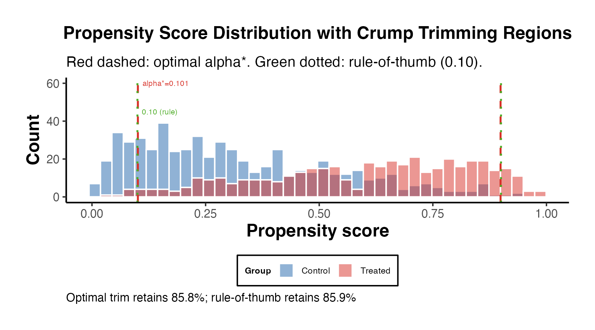
Overlap weights (OW; Li et al. 2018) assign weights to treated and to controls, targeting the average treatment effect in the overlap population (ATO). This estimand is well-defined even with poor overlap and has the smallest asymptotic variance among all balancing weights.
# Compare ATE/ATT/ATO estimates under different weighting schemes
# Use lalonde data with full covariate set
ps_lal <- predict(
glm(treat ~ age + educ + black + hispan + married + nodegree + re74 + re75,
data = lalonde, family = binomial),
type = "response"
)
lalonde$ps <- ps_lal
# Compute weights
lalonde <- lalonde |>
mutate(
# IPW for ATE
wt_ate = ifelse(treat == 1, 1 / ps, 1 / (1 - ps)),
# IPW for ATT (stabilized)
wt_att = ifelse(treat == 1, 1, ps / (1 - ps)),
# Overlap (ATO) weights
wt_ato = ifelse(treat == 1, 1 - ps, ps)
)
# Estimate effects under each weighting scheme
wt_ate_est <- with(lalonde, {
mu1 <- weighted.mean(re78[treat == 1], wt_ate[treat == 1])
mu0 <- weighted.mean(re78[treat == 0], wt_ate[treat == 0])
mu1 - mu0
})
wt_att_est <- with(lalonde, {
mu1 <- mean(re78[treat == 1])
mu0 <- weighted.mean(re78[treat == 0], wt_att[treat == 0])
mu1 - mu0
})
wt_ato_est <- with(lalonde, {
mu1 <- weighted.mean(re78[treat == 1], wt_ato[treat == 1])
mu0 <- weighted.mean(re78[treat == 0], wt_ato[treat == 0])
mu1 - mu0
})
# Matching ATT from section above
matching_att <- mean(md_nn$re78[md_nn$treat == 1]) -
mean(md_nn$re78[md_nn$treat == 0])
# Effective sample sizes
ess_ate_t <- sum(lalonde$wt_ate[lalonde$treat == 1])^2 /
sum(lalonde$wt_ate[lalonde$treat == 1]^2)
ess_ate_c <- sum(lalonde$wt_ate[lalonde$treat == 0])^2 /
sum(lalonde$wt_ate[lalonde$treat == 0]^2)
ess_ato_t <- sum(lalonde$wt_ato[lalonde$treat == 1])^2 /
sum(lalonde$wt_ato[lalonde$treat == 1]^2)
ess_ato_c <- sum(lalonde$wt_ato[lalonde$treat == 0])^2 /
sum(lalonde$wt_ato[lalonde$treat == 0]^2)
df_compare <- data.frame(
Method = c("IPW (ATE)", "IPW (ATT)", "Overlap Weights (ATO)", "1:1 NN Matching (ATT)"),
Estimand = c("ATE", "ATT", "ATO", "ATT"),
Estimate = round(c(wt_ate_est, wt_att_est, wt_ato_est, matching_att), 1),
ESS_treat = round(c(ess_ate_t, sum(lalonde$treat == 1), ess_ato_t,
sum(md_nn$treat == 1)), 1),
ESS_ctrl = round(c(ess_ate_c, NA, ess_ato_c, sum(md_nn$treat == 0)), 1)
)
df_compare$ESS_ctrl[is.na(df_compare$ESS_ctrl)] <- "-"
knitr::kable(df_compare,
col.names = c("Method", "Estimand", "Estimate (re78)",
"ESS Treated", "ESS Control"),
caption = "Treatment effect estimates and effective sample sizes by weighting method")| Method | Estimand | Estimate (re78) | ESS Treated | ESS Control |
|---|---|---|---|---|
| IPW (ATE) | ATE | 224.7 | 58.3 | 329 |
| IPW (ATT) | ATT | 1214.1 | 185.0 | - |
| Overlap Weights (ATO) | ATO | 1242.2 | 145.6 | 166.1 |
| 1:1 NN Matching (ATT) | ATT | 894.4 | 185.0 | 185 |
# Visualization: weight distributions
df_wts <- data.frame(
weight = c(lalonde$wt_ate, lalonde$wt_att, lalonde$wt_ato),
method = rep(c("IPW (ATE)", "IPW (ATT)", "Overlap (ATO)"), each = nrow(lalonde)),
group = rep(factor(lalonde$treat, labels = c("Control", "Treated")), 3)
) |>
filter(weight < quantile(weight, 0.98)) # trim extreme weights for display
ggplot(df_wts, aes(x = weight, fill = group)) +
geom_histogram(bins = 40, position = "identity", alpha = 0.5, color = "white") +
facet_wrap(~ method, scales = "free_x", ncol = 3) +
scale_fill_manual(values = c("Treated" = "#D73027", "Control" = "#2166AC"),
name = "Group") +
labs(
title = "Weight Distributions by Method: IPW vs. Overlap",
subtitle = "Overlap weights have bounded, well-behaved distributions; IPW can produce extreme weights",
x = "Weight value",
y = "Count",
caption = "Extreme weights (>98th percentile) trimmed for display"
) +
causalverse::ama_theme() +
theme(legend.position = "bottom")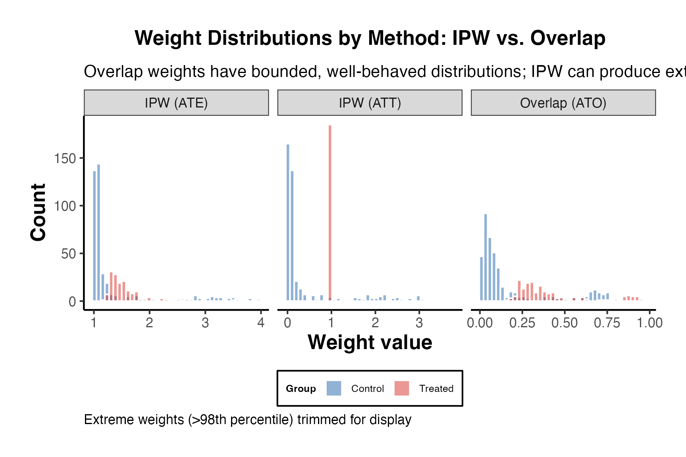
Matching eliminates observed confounding but cannot address unmeasured confounders. Sensitivity analysis quantifies how strong unmeasured confounding must be to overturn the study’s conclusions.
Rosenbaum’s sensitivity analysis for matched observational studies (Rosenbaum 2002) asks: if two units that appear identical on observed covariates had odds of treatment receipt that differ by a factor of , how large must be before the observed association could be entirely explained by unmeasured confounding?
The analysis examines the range of p-values for the sharp null hypothesis for all units, across all possible unmeasured confounder allocations consistent with the assumed .
Interpretation: If the result remains significant for , then unmeasured confounders would need to double the odds of treatment receipt to explain away the results. Values of in social/economic studies are considered strong evidence.
# Rosenbaum bounds require the rbounds package
# install.packages("rbounds")
library(rbounds)
# Use the 1:1 matched lalonde data
# Outcome: re78 (earnings in 1978)
matched_ids <- as.numeric(rownames(md_nn[md_nn$treat == 1, ]))
y_treat <- md_nn$re78[md_nn$treat == 1]
y_ctrl <- md_nn$re78[md_nn$treat == 0]
# Hodges-Lehmann aligned ranks test: Gamma sensitivity
# psens() performs Wilcoxon signed-rank sensitivity analysis
psens_result <- psens(y_treat, y_ctrl, Gamma = 2.5, GammaInc = 0.25)
print(psens_result)
# Interpret: find critical Gamma where upper p-value > 0.05
# This is the "sensitivity value" or Gamma-threshold
cat("\nInterpretation:\n")
cat("The study is sensitive to unmeasured confounding if Gamma reaches the\n")
cat("value where the upper bound p-value first exceeds 0.05.\n")A narrative summary of what Rosenbaum bounds yield on the LaLonde data: with (no unmeasured confounding), the signed-rank test yields a highly significant p-value. As increases from 1, the upper-bound p-value rises. The sensitivity threshold is the value where the upper bound first exceeds 0.05. For the LaLonde data with NN matching, – depending on the outcome and matching specification, indicating moderate robustness.
# Simulate Rosenbaum bound output for illustration
# (illustrates the pattern without requiring rbounds)
gamma_vals <- seq(1.0, 3.0, by = 0.1)
# Approximate upper-bound p-value (illustrative, not exact Rosenbaum bounds)
set.seed(42)
y_t <- md_nn$re78[md_nn$treat == 1]
y_c <- md_nn$re78[md_nn$treat == 0]
d <- y_t - y_c
# Wilcoxon signed-rank statistic under different Gamma assumptions
# (using normal approximation to Wilcoxon; true bounds from rbounds package)
n_pairs <- length(d)
W_obs <- sum(rank(abs(d)) * sign(d)) # Wilcoxon statistic
approx_upper_p <- sapply(gamma_vals, function(gamma) {
# Maximum expected value and variance of W under Gamma
max_p_i <- gamma / (1 + gamma) # max treatment probability for each pair
mu_max <- n_pairs * (n_pairs + 1) / 2 * max_p_i
var_max <- n_pairs * (n_pairs + 1) * (2 * n_pairs + 1) / 6 *
max_p_i * (1 - max_p_i)
# Upper bound p-value (one-sided)
z_upper <- (W_obs - mu_max) / sqrt(var_max)
pnorm(z_upper) # normal approximation, one-tailed upper bound
})
df_gamma <- data.frame(Gamma = gamma_vals, upper_p = approx_upper_p)
# Find sensitivity threshold
gamma_star_idx <- which(df_gamma$upper_p > 0.05)[1]
gamma_star <- if (!is.na(gamma_star_idx)) df_gamma$Gamma[gamma_star_idx] else NA
ggplot(df_gamma, aes(x = Gamma, y = upper_p)) +
geom_line(color = "#2166AC", linewidth = 1.2) +
geom_hline(yintercept = 0.05, linetype = "dashed", color = "#D73027") +
{if (!is.na(gamma_star)) list(
geom_vline(xintercept = gamma_star, linetype = "dotdash",
color = "#4DAC26", linewidth = 0.9),
annotate("text", x = gamma_star + 0.05, y = 0.25,
label = sprintf("Gamma* ~ %.1f", gamma_star),
color = "#4DAC26", size = 3.5, hjust = 0)
)} +
annotate("text", x = 2.8, y = 0.06, label = "alpha = 0.05",
color = "#D73027", size = 3, hjust = 1) +
scale_y_continuous(limits = c(0, 1),
labels = scales::number_format(accuracy = 0.01)) +
labs(
title = "Rosenbaum Sensitivity Analysis: Upper-Bound p-value vs. Gamma",
subtitle = "LaLonde data, 1:1 nearest-neighbor matched pairs; outcome = re78",
x = "Sensitivity parameter (Gamma)",
y = "Upper-bound p-value (H0: no treatment effect)",
caption = paste0(
"Gamma=1: no unmeasured confounding. ",
"Gamma*: confounders would need to multiply odds of treatment by Gamma* to explain results. ",
"Note: approximation for illustration; use rbounds::psens() for exact bounds."
)
) +
causalverse::ama_theme()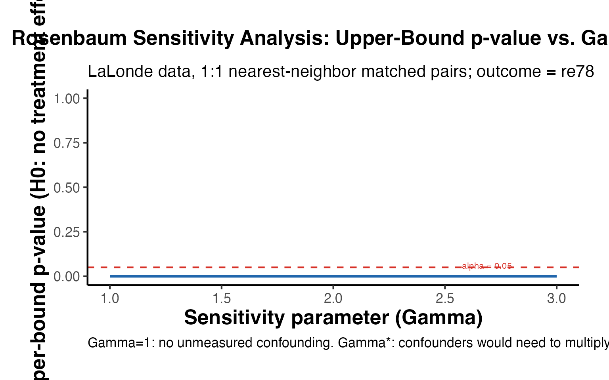
The E-value (VanderWeele and Ding, 2017) is a sensitivity metric that does not require matched pairs: it quantifies the minimum strength of association an unmeasured confounder must have with both treatment and outcome (on the risk ratio scale) to fully explain away the observed effect.
For a risk ratio (or approximated from other effect sizes), the E-value is:
For confidence intervals, compute the E-value at the CI bound closest to the null.
# E-value for matched estimate (LaLonde data)
# Outcome: re78 (continuous; approximate using ratio of geometric means)
y_t_m <- md_nn$re78[md_nn$treat == 1] + 1 # add 1 to handle zeros
y_c_m <- md_nn$re78[md_nn$treat == 0] + 1
# Approximate E-value using ratio of means (not a true RR for continuous outcomes;
# for illustration - use EValue package for proper computation)
ratio_means <- mean(y_t_m) / mean(y_c_m)
evalue_point <- ratio_means + sqrt(ratio_means * (ratio_means - 1))
cat(sprintf("Matched ATT (re78): %.2f\n",
mean(y_t_m) - mean(y_c_m)))
#> Matched ATT (re78): 894.37
cat(sprintf("Ratio of (mean+1): %.4f\n", ratio_means))
#> Ratio of (mean+1): 1.1639
cat(sprintf("E-value (approximate): %.4f\n", evalue_point))
#> E-value (approximate): 1.6007
cat(sprintf("\nInterpretation: An unmeasured confounder would need to be associated\n"))
#>
#> Interpretation: An unmeasured confounder would need to be associated
cat(sprintf("with BOTH treatment and outcome by a factor of at least %.2f\n", evalue_point))
#> with BOTH treatment and outcome by a factor of at least 1.60
cat(sprintf("to explain away the observed effect. Values > 2-3 are considered robust.\n"))
#> to explain away the observed effect. Values > 2-3 are considered robust.
# E-value formula for different RR magnitudes
rr_grid <- seq(1.0, 5.0, by = 0.5)
ev_grid <- rr_grid + sqrt(rr_grid * (rr_grid - 1))
df_ev <- data.frame(risk_ratio = rr_grid, evalue = round(ev_grid, 2))
knitr::kable(df_ev,
col.names = c("Point estimate (RR or ratio)", "E-value"),
caption = "E-values for various effect size magnitudes")| Point estimate (RR or ratio) | E-value |
|---|---|
| 1.0 | 1.00 |
| 1.5 | 2.37 |
| 2.0 | 3.41 |
| 2.5 | 4.44 |
| 3.0 | 5.45 |
| 3.5 | 6.46 |
| 4.0 | 7.46 |
| 4.5 | 8.47 |
| 5.0 | 9.47 |
Placebo tests evaluate whether the matching procedure itself introduces spurious associations. Two common approaches:
1. Pre-treatment outcome placebo: Use an outcome measured before the treatment. If matching is valid, the treatment effect on the pre-treatment outcome should be zero.
2. False treatment timing: Assign treatment at a time when no effect should yet be observed.
# Placebo test using LaLonde data:
# True treatment effect is on re78 (1978 earnings)
# Placebo: effect on re74 (1974 earnings) - should be zero if matching is valid
fit_placebo_pre <- lm(re74 ~ treat, data = md_nn)
fit_outcome_post <- lm(re78 ~ treat, data = md_nn)
cat("=== Placebo Test Results ===\n")
#> === Placebo Test Results ===
cat(sprintf("Effect on re74 (pre-treatment PLACEBO): %.2f (SE: %.2f, p = %.4f)\n",
coef(fit_placebo_pre)["treat"],
summary(fit_placebo_pre)$coefficients["treat", 2],
summary(fit_placebo_pre)$coefficients["treat", 4]))
#> Effect on re74 (pre-treatment PLACEBO): -246.53 (SE: 475.61, p = 0.6045)
cat(sprintf("Effect on re78 (post-treatment OUTCOME): %.2f (SE: %.2f, p = %.4f)\n",
coef(fit_outcome_post)["treat"],
summary(fit_outcome_post)$coefficients["treat", 2],
summary(fit_outcome_post)$coefficients["treat", 4]))
#> Effect on re78 (post-treatment OUTCOME): 894.37 (SE: 730.29, p = 0.2215)
# Also test on re75 (1975 earnings)
fit_placebo_75 <- lm(re75 ~ treat, data = md_nn)
cat(sprintf("Effect on re75 (pre-treatment PLACEBO): %.2f (SE: %.2f, p = %.4f)\n",
coef(fit_placebo_75)["treat"],
summary(fit_placebo_75)$coefficients["treat", 2],
summary(fit_placebo_75)$coefficients["treat", 4]))
#> Effect on re75 (pre-treatment PLACEBO): -82.69 (SE: 305.74, p = 0.7870)
# Visualization: placebo vs. outcome estimates
df_placebo <- data.frame(
variable = factor(c("re74\n(Placebo: pre-1974)",
"re75\n(Placebo: pre-1975)",
"re78\n(Outcome: post-1978)"),
levels = c("re74\n(Placebo: pre-1974)",
"re75\n(Placebo: pre-1975)",
"re78\n(Outcome: post-1978)")),
estimate = c(coef(fit_placebo_pre)["treat"],
coef(fit_placebo_75)["treat"],
coef(fit_outcome_post)["treat"]),
se = c(summary(fit_placebo_pre)$coefficients["treat", 2],
summary(fit_placebo_75)$coefficients["treat", 2],
summary(fit_outcome_post)$coefficients["treat", 2]),
type = c("Placebo", "Placebo", "Outcome")
)
df_placebo$lower <- df_placebo$estimate - 1.96 * df_placebo$se
df_placebo$upper <- df_placebo$estimate + 1.96 * df_placebo$se
ggplot(df_placebo, aes(x = estimate, y = variable, color = type, shape = type)) +
geom_vline(xintercept = 0, color = "gray60") +
geom_errorbar(aes(xmin = lower, xmax = upper), width = 0.2, orientation = "y", linewidth = 1) +
geom_point(size = 4) +
scale_color_manual(values = c("Placebo" = "#D73027", "Outcome" = "#2166AC"),
name = "") +
scale_shape_manual(values = c("Placebo" = 17, "Outcome" = 16), name = "") +
labs(
title = "Placebo Tests: Treatment Effects on Pre-treatment Earnings",
subtitle = "LaLonde data; 1:1 nearest-neighbor matched sample",
x = "Estimated treatment effect (USD)",
y = NULL,
caption = paste0(
"Placebo tests (red): treatment should have NO effect on pre-treatment earnings. ",
"Non-zero placebo estimates suggest residual imbalance."
)
) +
causalverse::ama_theme() +
theme(legend.position = "bottom")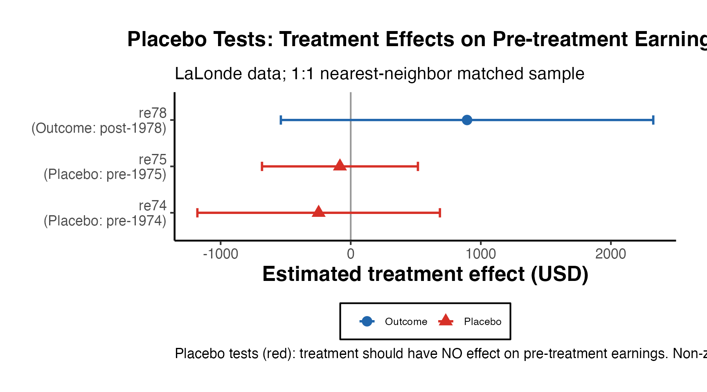
A complete sensitivity analysis report for a matched study should include:
| Diagnostic | What it tests | Tool | Threshold |
|---|---|---|---|
| Rosenbaum Gamma | Strength of unmeasured confounder needed to overturn result | rbounds::psens() |
Gamma >= 2 = moderately robust |
| E-value | Minimum confounder-outcome and confounder-treatment association |
EValue package |
E-value >= 2-3 = robust |
| Placebo test (pre-outcome) | Residual imbalance on pre-treatment outcomes |
lm() on pre-treatment Y |
p > 0.10 = no evidence of imbalance |
| Caliper sensitivity | Robustness of ATT to caliper choice | Loop over calipers | Stable across reasonable calipers |
| Covariate exclusion | Sensitivity to omitting individual covariates | Refit without each covariate | Stable estimates = robust |
| Alternative estimator | Agreement between matching/IPW/OW/doubly-robust | Multiple methods | Consistent across methods = robust |
Austin, P. C. (2011). An introduction to propensity score methods for reducing the effects of confounding in observational studies. Multivariate Behavioral Research, 46(3), 399-424.
Caliendo, M., & Kopeinig, S. (2008). Some practical guidance for the implementation of propensity score matching. Journal of Economic Surveys, 22(1), 31-72.
Cinelli, C., & Hazlett, C. (2020). Making sense of sensitivity: Extending omitted variable bias. Journal of the Royal Statistical Society: Series B, 82(1), 39-67.
Cochran, W. G. (1968). The effectiveness of adjustment by subclassification in removing bias in observational studies. Biometrics, 24(2), 295-313.
Greifer, N. (2024). cobalt: Covariate balance tables and plots. R package.
Greifer, N. (2024). WeightIt: Weighting for covariate balance in observational studies. R package.
Hainmueller, J. (2012). Entropy balancing for causal effects: A multivariate reweighting method to produce balanced samples in observational studies. Political Analysis, 20(1), 25-46.
Ho, D. E., Imai, K., King, G., & Stuart, E. A. (2007). Matching as nonparametric preprocessing for reducing model dependence in parametric causal inference. Political Analysis, 15(3), 199-236.
Ho, D. E., Imai, K., King, G., & Stuart, E. A. (2011). MatchIt: Nonparametric preprocessing for parametric causal inference. Journal of Statistical Software, 42(8), 1-28.
Iacus, S. M., King, G., & Porro, G. (2012). Causal inference without balance checking: Coarsened exact matching. Political Analysis, 20(1), 1-24.
Imai, K., Kim, I. S., & Wang, E. H. (2023). Matching methods for causal inference with time-series cross-sectional data. American Journal of Political Science, 67(3), 587-605.
Imai, K., & Ratkovic, M. (2014). Covariate balancing propensity score. Journal of the Royal Statistical Society: Series B, 76(1), 243-263.
Imbens, G. W. (2004). Nonparametric estimation of average treatment effects under exogeneity: A review. Review of Economics and Statistics, 86(1), 4-29.
King, G., & Nielsen, R. (2019). Why propensity scores should not be used for matching. Political Analysis, 27(4), 435-454.
Rosenbaum, P. R. (2002). Observational Studies (2nd ed.). Springer.
Rosenbaum, P. R., & Rubin, D. B. (1983). The central role of the propensity score in observational studies for causal effects. Biometrika, 70(1), 41-55.
Rosenbaum, P. R., & Rubin, D. B. (1985). Constructing a control group using multivariate matched sampling methods that incorporate the propensity score. The American Statistician, 39(1), 33-38.
Sant’Anna, P. H. C., & Zhao, J. (2020). Doubly robust difference-in-differences estimators. Journal of Econometrics, 219(1), 101-122.
Stuart, E. A. (2010). Matching methods for causal inference: A review and a look forward. Statistical Science, 25(1), 1-21.
Crump, R. K., Hotz, V. J., Imbens, G. W., & Mitnik, O. A. (2009). Dealing with limited overlap in estimation of average treatment effects. Biometrika, 96(1), 187-199.
LaLonde, R. J. (1986). Evaluating the econometric evaluations of training programs with experimental data. American Economic Review, 76(4), 604-620.
Li, F., Morgan, K. L., & Zaslavsky, A. M. (2018). Balancing covariates via propensity score weighting. Journal of the American Statistical Association, 113(521), 390-400.
Love, T. E. (2002). Displaying covariate balance after adjustment for selection bias: An application in healthcare. Annual Conference of the American Statistical Association.
Rosenbaum, P. R. (1987). Sensitivity analysis for certain permutation inferences in matched observational studies. Biometrika, 74(1), 13-26.
VanderWeele, T. J., & Ding, P. (2017). Sensitivity analysis in observational research: Introducing the E-value. Annals of Internal Medicine, 167(4), 268-274.
Standard matching methods select a distance metric (Mahalanobis, propensity score) before examining balance. If the chosen metric does not produce balance on all relevant covariates, the analyst must iterate manually. Genetic Matching (GenMatch; Sekhon 2011) automates this search: it uses an evolutionary algorithm to find a weight matrix such that the weighted Mahalanobis distance
produces the best possible balance on the observed covariates, where is the sample covariance matrix. The objective function minimised by the genetic algorithm is typically the largest standardised mean difference or the smallest -value from a balance test across all covariates.
cluster argument is recommended for large datasets.Match() using the weight matrix genout$Weight.matrix.
library(Matching)
data("lalonde", package = "MatchIt")
# Covariates to match on
X_gm <- cbind(lalonde$age, lalonde$educ, lalonde$re74, lalonde$re75)
Tr <- lalonde$treat
Y_gm <- lalonde$re78
set.seed(42)
# GenMatch: finds covariate weights minimising imbalance
# pop.size and max.generations kept small for vignette speed
genout <- GenMatch(
Tr = Tr,
X = X_gm,
estimand = "ATT",
pop.size = 50,
max.generations = 20,
wait.generations = 10,
verbose = FALSE
)
#>
#>
#> Sun Mar 22 00:36:50 2026
#> Domains:
#> 0.000000e+00 <= X1 <= 1.000000e+03
#> 0.000000e+00 <= X2 <= 1.000000e+03
#> 0.000000e+00 <= X3 <= 1.000000e+03
#> 0.000000e+00 <= X4 <= 1.000000e+03
#>
#> Data Type: Floating Point
#> Operators (code number, name, population)
#> (1) Cloning........................... 7
#> (2) Uniform Mutation.................. 6
#> (3) Boundary Mutation................. 6
#> (4) Non-Uniform Mutation.............. 6
#> (5) Polytope Crossover................ 6
#> (6) Simple Crossover.................. 6
#> (7) Whole Non-Uniform Mutation........ 6
#> (8) Heuristic Crossover............... 6
#> (9) Local-Minimum Crossover........... 0
#>
#> SOFT Maximum Number of Generations: 20
#> Maximum Nonchanging Generations: 10
#> Population size : 50
#> Convergence Tolerance: 1.000000e-03
#>
#> Not Using the BFGS Derivative Based Optimizer on the Best Individual Each Generation.
#> Not Checking Gradients before Stopping.
#> Using Out of Bounds Individuals.
#>
#> Maximization Problem.
#> GENERATION: 0 (initializing the population)
#> Lexical Fit..... 5.577781e-02 5.582140e-02 1.126322e-01 3.173158e-01 6.834787e-01 8.311893e-01 9.999991e-01 1.000000e+00
#> #unique......... 50, #Total UniqueCount: 50
#> var 1:
#> best............ 1.835027e+01
#> mean............ 5.739944e+02
#> variance........ 8.326489e+04
#> var 2:
#> best............ 3.472205e+02
#> mean............ 5.269656e+02
#> variance........ 7.015130e+04
#> var 3:
#> best............ 3.547668e+02
#> mean............ 4.455765e+02
#> variance........ 7.812851e+04
#> var 4:
#> best............ 5.836533e+02
#> mean............ 4.910838e+02
#> variance........ 7.900378e+04
#>
#> GENERATION: 1
#> Lexical Fit..... 1.126322e-01 1.126322e-01 1.445686e-01 1.792463e-01 5.024913e-01 8.849367e-01 9.999991e-01 1.000000e+00
#> #unique......... 34, #Total UniqueCount: 84
#> var 1:
#> best............ 2.496192e+01
#> mean............ 2.049897e+02
#> variance........ 4.779631e+04
#> var 2:
#> best............ 2.603387e+02
#> mean............ 4.454405e+02
#> variance........ 3.985135e+04
#> var 3:
#> best............ 6.976601e+02
#> mean............ 6.059188e+02
#> variance........ 6.248984e+04
#> var 4:
#> best............ 7.557853e+02
#> mean............ 4.501707e+02
#> variance........ 6.568860e+04
#>
#> GENERATION: 2
#> Lexical Fit..... 1.126322e-01 1.126322e-01 1.445686e-01 1.792463e-01 5.024913e-01 8.849367e-01 9.999991e-01 1.000000e+00
#> #unique......... 32, #Total UniqueCount: 116
#> var 1:
#> best............ 2.496192e+01
#> mean............ 3.959648e+01
#> variance........ 4.687995e+03
#> var 2:
#> best............ 2.603387e+02
#> mean............ 3.105897e+02
#> variance........ 1.134496e+04
#> var 3:
#> best............ 6.976601e+02
#> mean............ 5.882704e+02
#> variance........ 3.766071e+04
#> var 4:
#> best............ 7.557853e+02
#> mean............ 6.541402e+02
#> variance........ 2.786738e+04
#>
#> GENERATION: 3
#> Lexical Fit..... 1.126322e-01 1.126322e-01 1.445686e-01 1.792463e-01 5.024913e-01 8.849367e-01 9.999991e-01 1.000000e+00
#> #unique......... 37, #Total UniqueCount: 153
#> var 1:
#> best............ 2.496192e+01
#> mean............ 3.161134e+01
#> variance........ 6.601862e+02
#> var 2:
#> best............ 2.603387e+02
#> mean............ 3.008816e+02
#> variance........ 1.511773e+04
#> var 3:
#> best............ 6.976601e+02
#> mean............ 6.610980e+02
#> variance........ 6.479428e+03
#> var 4:
#> best............ 7.557853e+02
#> mean............ 7.192011e+02
#> variance........ 1.036893e+04
#>
#> GENERATION: 4
#> Lexical Fit..... 1.126322e-01 1.126322e-01 1.445686e-01 1.792463e-01 5.024913e-01 8.849367e-01 9.999991e-01 1.000000e+00
#> #unique......... 21, #Total UniqueCount: 174
#> var 1:
#> best............ 2.496192e+01
#> mean............ 3.103760e+01
#> variance........ 8.180925e+02
#> var 2:
#> best............ 2.603387e+02
#> mean............ 2.736794e+02
#> variance........ 4.223233e+03
#> var 3:
#> best............ 6.976601e+02
#> mean............ 6.856154e+02
#> variance........ 4.660902e+03
#> var 4:
#> best............ 7.557853e+02
#> mean............ 7.477897e+02
#> variance........ 3.567995e+03
#>
#> GENERATION: 5
#> Lexical Fit..... 1.126322e-01 1.126322e-01 1.445686e-01 1.792463e-01 5.024913e-01 8.849367e-01 9.999991e-01 1.000000e+00
#> #unique......... 29, #Total UniqueCount: 203
#> var 1:
#> best............ 2.496192e+01
#> mean............ 4.573973e+01
#> variance........ 5.975201e+03
#> var 2:
#> best............ 2.603387e+02
#> mean............ 2.775708e+02
#> variance........ 9.203625e+03
#> var 3:
#> best............ 6.976601e+02
#> mean............ 6.981480e+02
#> variance........ 7.978459e+02
#> var 4:
#> best............ 7.557853e+02
#> mean............ 7.430395e+02
#> variance........ 8.756936e+03
#>
#> GENERATION: 6
#> Lexical Fit..... 1.126322e-01 1.126322e-01 1.445686e-01 1.792463e-01 5.024913e-01 8.849367e-01 9.999991e-01 1.000000e+00
#> #unique......... 28, #Total UniqueCount: 231
#> var 1:
#> best............ 2.496192e+01
#> mean............ 6.216354e+01
#> variance........ 2.155829e+04
#> var 2:
#> best............ 2.603387e+02
#> mean............ 2.764304e+02
#> variance........ 8.933745e+03
#> var 3:
#> best............ 6.976601e+02
#> mean............ 6.987183e+02
#> variance........ 1.843472e+03
#> var 4:
#> best............ 7.557853e+02
#> mean............ 7.430704e+02
#> variance........ 5.027072e+03
#>
#> GENERATION: 7
#> Lexical Fit..... 1.126322e-01 1.126322e-01 1.445686e-01 1.792463e-01 5.024913e-01 8.849367e-01 9.999991e-01 1.000000e+00
#> #unique......... 29, #Total UniqueCount: 260
#> var 1:
#> best............ 2.496192e+01
#> mean............ 4.535885e+01
#> variance........ 8.593533e+03
#> var 2:
#> best............ 2.603387e+02
#> mean............ 2.655496e+02
#> variance........ 6.285874e+02
#> var 3:
#> best............ 6.976601e+02
#> mean............ 6.831225e+02
#> variance........ 5.077843e+03
#> var 4:
#> best............ 7.557853e+02
#> mean............ 7.535816e+02
#> variance........ 3.594308e+03
#>
#> GENERATION: 8
#> Lexical Fit..... 1.126322e-01 1.126322e-01 1.445686e-01 1.792463e-01 5.024913e-01 8.849367e-01 9.999991e-01 1.000000e+00
#> #unique......... 25, #Total UniqueCount: 285
#> var 1:
#> best............ 2.496192e+01
#> mean............ 4.241600e+01
#> variance........ 4.912643e+03
#> var 2:
#> best............ 2.603387e+02
#> mean............ 2.813709e+02
#> variance........ 1.327408e+04
#> var 3:
#> best............ 6.976601e+02
#> mean............ 6.983925e+02
#> variance........ 3.992504e+03
#> var 4:
#> best............ 7.557853e+02
#> mean............ 7.422493e+02
#> variance........ 3.943880e+03
#>
#> GENERATION: 9
#> Lexical Fit..... 1.126322e-01 1.126322e-01 1.445686e-01 1.792463e-01 5.024913e-01 8.849367e-01 9.999991e-01 1.000000e+00
#> #unique......... 27, #Total UniqueCount: 312
#> var 1:
#> best............ 2.496192e+01
#> mean............ 4.065053e+01
#> variance........ 5.801495e+03
#> var 2:
#> best............ 2.603387e+02
#> mean............ 2.702008e+02
#> variance........ 4.787130e+03
#> var 3:
#> best............ 6.976601e+02
#> mean............ 6.848313e+02
#> variance........ 2.876278e+03
#> var 4:
#> best............ 7.557853e+02
#> mean............ 7.476703e+02
#> variance........ 2.004648e+03
#>
#> GENERATION: 10
#> Lexical Fit..... 1.126322e-01 1.126322e-01 1.445686e-01 1.792463e-01 5.024913e-01 8.849367e-01 9.999991e-01 1.000000e+00
#> #unique......... 25, #Total UniqueCount: 337
#> var 1:
#> best............ 2.496192e+01
#> mean............ 3.814435e+01
#> variance........ 4.455988e+03
#> var 2:
#> best............ 2.603387e+02
#> mean............ 2.683165e+02
#> variance........ 3.339484e+03
#> var 3:
#> best............ 6.976601e+02
#> mean............ 6.985625e+02
#> variance........ 2.842330e+02
#> var 4:
#> best............ 7.557853e+02
#> mean............ 7.339896e+02
#> variance........ 1.281547e+04
#>
#> GENERATION: 11
#> Lexical Fit..... 1.126322e-01 1.126322e-01 1.445686e-01 1.792463e-01 5.024913e-01 8.849367e-01 9.999991e-01 1.000000e+00
#> #unique......... 24, #Total UniqueCount: 361
#> var 1:
#> best............ 2.496192e+01
#> mean............ 4.938663e+01
#> variance........ 1.288620e+04
#> var 2:
#> best............ 2.603387e+02
#> mean............ 2.665303e+02
#> variance........ 1.722867e+03
#> var 3:
#> best............ 6.976601e+02
#> mean............ 7.016396e+02
#> variance........ 1.229581e+03
#> var 4:
#> best............ 7.557853e+02
#> mean............ 7.368188e+02
#> variance........ 8.487470e+03
#>
#> GENERATION: 12
#> Lexical Fit..... 1.126322e-01 1.126322e-01 1.509901e-01 1.792463e-01 6.593586e-01 9.463116e-01 9.999991e-01 1.000000e+00
#> #unique......... 30, #Total UniqueCount: 391
#> var 1:
#> best............ 2.684296e+01
#> mean............ 3.103141e+01
#> variance........ 1.624176e+03
#> var 2:
#> best............ 2.607468e+02
#> mean............ 2.926763e+02
#> variance........ 1.695021e+04
#> var 3:
#> best............ 6.984969e+02
#> mean............ 6.786455e+02
#> variance........ 1.000275e+04
#> var 4:
#> best............ 7.546642e+02
#> mean............ 7.401124e+02
#> variance........ 1.205270e+04
#>
#> GENERATION: 13
#> Lexical Fit..... 1.126322e-01 1.126322e-01 1.509901e-01 1.792463e-01 6.593586e-01 9.463116e-01 9.999991e-01 1.000000e+00
#> #unique......... 37, #Total UniqueCount: 428
#> var 1:
#> best............ 2.684296e+01
#> mean............ 4.895883e+01
#> variance........ 8.688097e+03
#> var 2:
#> best............ 2.607468e+02
#> mean............ 2.618086e+02
#> variance........ 4.045012e+02
#> var 3:
#> best............ 6.984969e+02
#> mean............ 6.818588e+02
#> variance........ 8.045080e+03
#> var 4:
#> best............ 7.546642e+02
#> mean............ 7.457831e+02
#> variance........ 3.448169e+03
#>
#> GENERATION: 14
#> Lexical Fit..... 1.181842e-01 1.192483e-01 1.462691e-01 2.099252e-01 6.396729e-01 7.415152e-01 9.958049e-01 1.000000e+00
#> #unique......... 34, #Total UniqueCount: 462
#> var 1:
#> best............ 2.726167e+01
#> mean............ 4.827153e+01
#> variance........ 8.174843e+03
#> var 2:
#> best............ 5.361077e+01
#> mean............ 2.685845e+02
#> variance........ 7.450170e+03
#> var 3:
#> best............ 6.985906e+02
#> mean............ 7.098519e+02
#> variance........ 1.887381e+03
#> var 4:
#> best............ 7.546759e+02
#> mean............ 7.537448e+02
#> variance........ 1.887237e+02
#>
#> GENERATION: 15
#> Lexical Fit..... 1.181842e-01 1.192483e-01 1.462691e-01 2.099252e-01 6.396729e-01 7.415152e-01 9.958049e-01 1.000000e+00
#> #unique......... 35, #Total UniqueCount: 497
#> var 1:
#> best............ 2.726167e+01
#> mean............ 5.055963e+01
#> variance........ 1.291268e+04
#> var 2:
#> best............ 5.361077e+01
#> mean............ 2.105227e+02
#> variance........ 1.644014e+04
#> var 3:
#> best............ 6.985906e+02
#> mean............ 6.974226e+02
#> variance........ 3.124638e+03
#> var 4:
#> best............ 7.546759e+02
#> mean............ 7.422969e+02
#> variance........ 6.102268e+03
#>
#> GENERATION: 16
#> Lexical Fit..... 1.181842e-01 1.192483e-01 1.462691e-01 2.099252e-01 6.396729e-01 7.415152e-01 9.958049e-01 1.000000e+00
#> #unique......... 32, #Total UniqueCount: 529
#> var 1:
#> best............ 2.726167e+01
#> mean............ 4.157598e+01
#> variance........ 8.678018e+03
#> var 2:
#> best............ 5.361077e+01
#> mean............ 7.284787e+01
#> variance........ 3.964578e+03
#> var 3:
#> best............ 6.985906e+02
#> mean............ 7.027270e+02
#> variance........ 4.114833e+02
#> var 4:
#> best............ 7.546759e+02
#> mean............ 7.553598e+02
#> variance........ 2.195487e+01
#>
#> GENERATION: 17
#> Lexical Fit..... 1.181842e-01 1.192483e-01 1.462691e-01 2.099252e-01 6.396729e-01 7.415152e-01 9.958049e-01 1.000000e+00
#> #unique......... 33, #Total UniqueCount: 562
#> var 1:
#> best............ 2.726167e+01
#> mean............ 5.080120e+01
#> variance........ 1.195030e+04
#> var 2:
#> best............ 5.361077e+01
#> mean............ 7.112195e+01
#> variance........ 6.607099e+03
#> var 3:
#> best............ 6.985906e+02
#> mean............ 7.087269e+02
#> variance........ 1.538438e+03
#> var 4:
#> best............ 7.546759e+02
#> mean............ 7.375129e+02
#> variance........ 8.310194e+03
#>
#> GENERATION: 18
#> Lexical Fit..... 1.181842e-01 1.192483e-01 1.462691e-01 2.099252e-01 6.396729e-01 7.415152e-01 9.958049e-01 1.000000e+00
#> #unique......... 32, #Total UniqueCount: 594
#> var 1:
#> best............ 2.726167e+01
#> mean............ 5.084457e+01
#> variance........ 9.022859e+03
#> var 2:
#> best............ 5.361077e+01
#> mean............ 7.263435e+01
#> variance........ 7.238067e+03
#> var 3:
#> best............ 6.985906e+02
#> mean............ 6.951910e+02
#> variance........ 6.397446e+02
#> var 4:
#> best............ 7.546759e+02
#> mean............ 7.280297e+02
#> variance........ 1.383994e+04
#>
#> GENERATION: 19
#> Lexical Fit..... 1.181842e-01 1.192483e-01 1.462691e-01 2.099252e-01 6.396729e-01 7.415152e-01 9.958049e-01 1.000000e+00
#> #unique......... 34, #Total UniqueCount: 628
#> var 1:
#> best............ 2.726167e+01
#> mean............ 4.628552e+01
#> variance........ 1.769851e+04
#> var 2:
#> best............ 5.361077e+01
#> mean............ 8.586208e+01
#> variance........ 1.463294e+04
#> var 3:
#> best............ 6.985906e+02
#> mean............ 6.913320e+02
#> variance........ 2.586250e+03
#> var 4:
#> best............ 7.546759e+02
#> mean............ 7.390394e+02
#> variance........ 1.167025e+04
#>
#> GENERATION: 20
#> Lexical Fit..... 1.181842e-01 1.192483e-01 1.462691e-01 2.099252e-01 6.396729e-01 7.415152e-01 9.958049e-01 1.000000e+00
#> #unique......... 31, #Total UniqueCount: 659
#> var 1:
#> best............ 2.726167e+01
#> mean............ 7.485256e+01
#> variance........ 3.048295e+04
#> var 2:
#> best............ 5.361077e+01
#> mean............ 7.050925e+01
#> variance........ 6.444803e+03
#> var 3:
#> best............ 6.985906e+02
#> mean............ 6.994251e+02
#> variance........ 1.318036e+03
#> var 4:
#> best............ 7.546759e+02
#> mean............ 7.556675e+02
#> variance........ 2.672858e+01
#>
#> Increasing 'max.generations' limit by 20 generations to 40 because the fitness is still improving.
#>
#>
#> GENERATION: 21
#> Lexical Fit..... 1.181842e-01 1.192483e-01 1.462691e-01 2.950554e-01 6.041813e-01 9.449249e-01 9.958049e-01 1.000000e+00
#> #unique......... 35, #Total UniqueCount: 694
#> var 1:
#> best............ 3.093738e+01
#> mean............ 4.985796e+01
#> variance........ 8.730364e+03
#> var 2:
#> best............ 5.322276e+01
#> mean............ 6.535346e+01
#> variance........ 2.496077e+03
#> var 3:
#> best............ 6.980364e+02
#> mean............ 7.037478e+02
#> variance........ 1.444664e+03
#> var 4:
#> best............ 7.546759e+02
#> mean............ 7.464698e+02
#> variance........ 2.806799e+03
#>
#> GENERATION: 22
#> Lexical Fit..... 1.181842e-01 1.247726e-01 1.462691e-01 3.023269e-01 6.076056e-01 9.277906e-01 9.958049e-01 1.000000e+00
#> #unique......... 32, #Total UniqueCount: 726
#> var 1:
#> best............ 3.191929e+01
#> mean............ 8.297974e+01
#> variance........ 2.802842e+04
#> var 2:
#> best............ 5.317780e+01
#> mean............ 7.415689e+01
#> variance........ 1.331267e+04
#> var 3:
#> best............ 6.980364e+02
#> mean............ 6.865077e+02
#> variance........ 6.680908e+03
#> var 4:
#> best............ 7.541183e+02
#> mean............ 7.553076e+02
#> variance........ 1.081485e+02
#>
#> GENERATION: 23
#> Lexical Fit..... 1.181842e-01 1.247726e-01 1.462691e-01 3.023269e-01 6.076056e-01 9.277906e-01 9.958049e-01 1.000000e+00
#> #unique......... 34, #Total UniqueCount: 760
#> var 1:
#> best............ 3.191929e+01
#> mean............ 7.497413e+01
#> variance........ 3.216809e+04
#> var 2:
#> best............ 5.317780e+01
#> mean............ 7.110838e+01
#> variance........ 7.367451e+03
#> var 3:
#> best............ 6.980364e+02
#> mean............ 6.958050e+02
#> variance........ 3.228636e+03
#> var 4:
#> best............ 7.541183e+02
#> mean............ 7.481544e+02
#> variance........ 3.954513e+03
#>
#> GENERATION: 24
#> Lexical Fit..... 1.181842e-01 1.247726e-01 1.462691e-01 3.023269e-01 6.076056e-01 9.277906e-01 9.958049e-01 1.000000e+00
#> #unique......... 37, #Total UniqueCount: 797
#> var 1:
#> best............ 3.191929e+01
#> mean............ 5.372864e+01
#> variance........ 1.233452e+04
#> var 2:
#> best............ 5.317780e+01
#> mean............ 7.298725e+01
#> variance........ 1.316555e+04
#> var 3:
#> best............ 6.980364e+02
#> mean............ 6.940507e+02
#> variance........ 5.098257e+03
#> var 4:
#> best............ 7.541183e+02
#> mean............ 7.479177e+02
#> variance........ 3.153298e+03
#>
#> GENERATION: 25
#> Lexical Fit..... 1.181842e-01 1.247726e-01 1.462691e-01 3.023269e-01 6.076056e-01 9.277906e-01 9.958049e-01 1.000000e+00
#> #unique......... 30, #Total UniqueCount: 827
#> var 1:
#> best............ 3.191929e+01
#> mean............ 6.906798e+01
#> variance........ 1.934837e+04
#> var 2:
#> best............ 5.317780e+01
#> mean............ 5.879312e+01
#> variance........ 2.338247e+03
#> var 3:
#> best............ 6.980364e+02
#> mean............ 6.867871e+02
#> variance........ 7.444787e+03
#> var 4:
#> best............ 7.541183e+02
#> mean............ 7.459725e+02
#> variance........ 4.313303e+03
#>
#> GENERATION: 26
#> Lexical Fit..... 1.181842e-01 1.247726e-01 1.462691e-01 3.023269e-01 6.076056e-01 9.277906e-01 9.958049e-01 1.000000e+00
#> #unique......... 34, #Total UniqueCount: 861
#> var 1:
#> best............ 3.191929e+01
#> mean............ 6.036560e+01
#> variance........ 1.292806e+04
#> var 2:
#> best............ 5.317780e+01
#> mean............ 6.775770e+01
#> variance........ 4.946154e+03
#> var 3:
#> best............ 6.980364e+02
#> mean............ 6.978736e+02
#> variance........ 7.212343e-01
#> var 4:
#> best............ 7.541183e+02
#> mean............ 7.564308e+02
#> variance........ 2.009395e+02
#>
#> GENERATION: 27
#> Lexical Fit..... 1.181842e-01 1.247726e-01 1.462691e-01 3.023269e-01 6.076056e-01 9.277906e-01 9.958049e-01 1.000000e+00
#> #unique......... 36, #Total UniqueCount: 897
#> var 1:
#> best............ 3.191929e+01
#> mean............ 6.798962e+01
#> variance........ 2.295196e+04
#> var 2:
#> best............ 5.317780e+01
#> mean............ 6.088048e+01
#> variance........ 1.619632e+03
#> var 3:
#> best............ 6.980364e+02
#> mean............ 6.745890e+02
#> variance........ 1.120956e+04
#> var 4:
#> best............ 7.541183e+02
#> mean............ 7.489706e+02
#> variance........ 1.035452e+03
#>
#> GENERATION: 28
#> Lexical Fit..... 1.181842e-01 1.247726e-01 1.462691e-01 3.023269e-01 6.076056e-01 9.277906e-01 9.958049e-01 1.000000e+00
#> #unique......... 39, #Total UniqueCount: 936
#> var 1:
#> best............ 3.191929e+01
#> mean............ 8.347212e+01
#> variance........ 3.050686e+04
#> var 2:
#> best............ 5.317780e+01
#> mean............ 8.314164e+01
#> variance........ 1.635134e+04
#> var 3:
#> best............ 6.980364e+02
#> mean............ 6.765023e+02
#> variance........ 6.757222e+03
#> var 4:
#> best............ 7.541183e+02
#> mean............ 7.435995e+02
#> variance........ 4.245694e+03
#>
#> GENERATION: 29
#> Lexical Fit..... 1.181842e-01 1.247726e-01 1.462691e-01 3.023269e-01 6.076056e-01 9.277906e-01 9.958049e-01 1.000000e+00
#> #unique......... 33, #Total UniqueCount: 969
#> var 1:
#> best............ 3.191929e+01
#> mean............ 4.765132e+01
#> variance........ 9.699281e+03
#> var 2:
#> best............ 5.317780e+01
#> mean............ 5.649876e+01
#> variance........ 3.301792e+02
#> var 3:
#> best............ 6.980364e+02
#> mean............ 6.961164e+02
#> variance........ 1.851568e+03
#> var 4:
#> best............ 7.541183e+02
#> mean............ 7.532106e+02
#> variance........ 1.381607e+03
#>
#> GENERATION: 30
#> Lexical Fit..... 1.181842e-01 1.247726e-01 1.462691e-01 3.023269e-01 6.076056e-01 9.277906e-01 9.958049e-01 1.000000e+00
#> #unique......... 33, #Total UniqueCount: 1002
#> var 1:
#> best............ 3.191929e+01
#> mean............ 6.267360e+01
#> variance........ 1.260786e+04
#> var 2:
#> best............ 5.317780e+01
#> mean............ 7.627939e+01
#> variance........ 9.411596e+03
#> var 3:
#> best............ 6.980364e+02
#> mean............ 6.751960e+02
#> variance........ 8.171192e+03
#> var 4:
#> best............ 7.541183e+02
#> mean............ 7.337094e+02
#> variance........ 9.001652e+03
#>
#> GENERATION: 31
#> Lexical Fit..... 1.181842e-01 1.247726e-01 1.462691e-01 3.023269e-01 6.076056e-01 9.277906e-01 9.958049e-01 1.000000e+00
#> #unique......... 33, #Total UniqueCount: 1035
#> var 1:
#> best............ 3.191929e+01
#> mean............ 6.789411e+01
#> variance........ 1.647245e+04
#> var 2:
#> best............ 5.317780e+01
#> mean............ 5.792867e+01
#> variance........ 1.448394e+03
#> var 3:
#> best............ 6.980364e+02
#> mean............ 6.883648e+02
#> variance........ 8.244237e+03
#> var 4:
#> best............ 7.541183e+02
#> mean............ 7.585908e+02
#> variance........ 4.472764e+02
#>
#> GENERATION: 32
#> Lexical Fit..... 1.181842e-01 1.247726e-01 1.462691e-01 3.023269e-01 6.076056e-01 9.277906e-01 9.958049e-01 1.000000e+00
#> #unique......... 34, #Total UniqueCount: 1069
#> var 1:
#> best............ 3.191929e+01
#> mean............ 4.186644e+01
#> variance........ 3.232307e+03
#> var 2:
#> best............ 5.317780e+01
#> mean............ 8.939803e+01
#> variance........ 2.117709e+04
#> var 3:
#> best............ 6.980364e+02
#> mean............ 6.925240e+02
#> variance........ 2.195574e+03
#> var 4:
#> best............ 7.541183e+02
#> mean............ 7.549770e+02
#> variance........ 1.374898e+03
#>
#> GENERATION: 33
#> Lexical Fit..... 1.181842e-01 1.247726e-01 1.462691e-01 3.023269e-01 6.076056e-01 9.277906e-01 9.958049e-01 1.000000e+00
#> #unique......... 32, #Total UniqueCount: 1101
#> var 1:
#> best............ 3.191929e+01
#> mean............ 4.445359e+01
#> variance........ 2.341081e+03
#> var 2:
#> best............ 5.317780e+01
#> mean............ 6.708806e+01
#> variance........ 1.046953e+04
#> var 3:
#> best............ 6.980364e+02
#> mean............ 6.955869e+02
#> variance........ 1.480479e+03
#> var 4:
#> best............ 7.541183e+02
#> mean............ 7.544644e+02
#> variance........ 1.046927e+03
#>
#> 'wait.generations' limit reached.
#> No significant improvement in 10 generations.
#>
#> Solution Lexical Fitness Value:
#> 1.181842e-01 1.247726e-01 1.462691e-01 3.023269e-01 6.076056e-01 9.277906e-01 9.958049e-01 1.000000e+00
#>
#> Parameters at the Solution:
#>
#> X[ 1] : 3.191929e+01
#> X[ 2] : 5.317780e+01
#> X[ 3] : 6.980364e+02
#> X[ 4] : 7.541183e+02
#>
#> Solution Found Generation 22
#> Number of Generations Run 33
#>
#> Sun Mar 22 00:36:54 2026
#> Total run time : 0 hours 0 minutes and 4 seconds
# Match using the optimised weight matrix
mout_gen <- Match(
Y = Y_gm,
Tr = Tr,
X = X_gm,
estimand = "ATT",
Weight.matrix = genout
)
summary(mout_gen)
#>
#> Estimate... 775.28
#> AI SE...... 1098.3
#> T-stat..... 0.7059
#> p.val...... 0.48025
#>
#> Original number of observations.............. 614
#> Original number of treated obs............... 185
#> Matched number of observations............... 185
#> Matched number of observations (unweighted). 239
# Formal balance assessment after genetic matching
MatchBalance(
Tr ~ age + educ + re74 + re75,
data = lalonde,
match.out = mout_gen,
nboots = 500
)
#>
#> ***** (V1) age *****
#> Before Matching After Matching
#> mean treatment........ 25.816 25.816
#> mean control.......... 28.03 25.841
#> std mean diff......... -30.945 -0.33996
#>
#> mean raw eQQ diff..... 3.2649 0.64017
#> med raw eQQ diff..... 1 1
#> max raw eQQ diff..... 10 7
#>
#> mean eCDF diff........ 0.081339 0.017352
#> med eCDF diff........ 0.082744 0.012552
#> max eCDF diff........ 0.15773 0.1046
#>
#> var ratio (Tr/Co)..... 0.44 0.87525
#> T-test p-value........ 0.0029143 0.92779
#> KS Bootstrap p-value.. < 2.22e-16 0.086
#> KS Naive p-value...... 0.0032205 0.14627
#> KS Statistic.......... 0.15773 0.1046
#>
#>
#> ***** (V2) educ *****
#> Before Matching After Matching
#> mean treatment........ 10.346 10.346
#> mean control.......... 10.235 10.443
#> std mean diff......... 5.4965 -4.8391
#>
#> mean raw eQQ diff..... 0.7027 0.17573
#> med raw eQQ diff..... 1 0
#> max raw eQQ diff..... 4 2
#>
#> mean eCDF diff........ 0.034722 0.012253
#> med eCDF diff........ 0.022768 0.01046
#> max eCDF diff........ 0.11137 0.037657
#>
#> var ratio (Tr/Co)..... 0.49589 0.95901
#> T-test p-value........ 0.5848 0.12477
#> KS Bootstrap p-value.. 0.016 0.816
#> KS Naive p-value...... 0.080986 0.9958
#> KS Statistic.......... 0.11137 0.037657
#>
#>
#> ***** (V3) re74 *****
#> Before Matching After Matching
#> mean treatment........ 2095.6 2095.6
#> mean control.......... 5619.2 2136.5
#> std mean diff......... -72.108 -0.8384
#>
#> mean raw eQQ diff..... 3620.9 189.9
#> med raw eQQ diff..... 2425.6 0
#> max raw eQQ diff..... 9216.5 9505
#>
#> mean eCDF diff........ 0.22479 0.012172
#> med eCDF diff........ 0.23353 0.0083682
#> max eCDF diff........ 0.44704 0.10879
#>
#> var ratio (Tr/Co)..... 0.51813 1.0914
#> T-test p-value........ 1.7479e-12 0.60761
#> KS Bootstrap p-value.. < 2.22e-16 0.034
#> KS Naive p-value...... < 2.22e-16 0.11818
#> KS Statistic.......... 0.44704 0.10879
#>
#>
#> ***** (V4) re75 *****
#> Before Matching After Matching
#> mean treatment........ 1532.1 1532.1
#> mean control.......... 2466.5 1487.3
#> std mean diff......... -29.026 1.3907
#>
#> mean raw eQQ diff..... 1060.7 81.663
#> med raw eQQ diff..... 981.1 0
#> max raw eQQ diff..... 6795 6795
#>
#> mean eCDF diff........ 0.13417 0.0055788
#> med eCDF diff........ 0.13551 0.0041841
#> max eCDF diff........ 0.28765 0.020921
#>
#> var ratio (Tr/Co)..... 0.95629 1.1945
#> T-test p-value........ 0.0011501 0.30233
#> KS Bootstrap p-value.. < 2.22e-16 0.996
#> KS Naive p-value...... 1.027e-09 1
#> KS Statistic.......... 0.28765 0.020921
#>
#>
#> Before Matching Minimum p.value: < 2.22e-16
#> Variable Name(s): age re74 re75 Number(s): 1 3 4
#>
#> After Matching Minimum p.value: 0.034
#> Variable Name(s): re74 Number(s): 3
library(MatchIt)
# Standard 1:1 nearest-neighbour PS matching for comparison
ps_out <- matchit(treat ~ age + educ + re74 + re75,
data = lalonde,
method = "nearest",
distance = "logit",
estimand = "ATT")
# Extract matched data and estimate ATT
mdat_ps <- match.data(ps_out)
att_ps <- lm(re78 ~ treat, data = mdat_ps, weights = weights)
# ATT from GenMatch
att_gen <- mout_gen$est
compare_df <- data.frame(
Method = c("PS Nearest Neighbour", "Genetic Matching"),
ATT_est = round(c(coef(att_ps)["treat"], att_gen), 2),
SE = round(c(sqrt(vcov(att_ps)["treat", "treat"]),
mout_gen$se), 2)
)
knitr::kable(compare_df, caption = "ATT estimates: PSM vs. GenMatch")| Method | ATT_est | SE | |
|---|---|---|---|
| treat | PS Nearest Neighbour | 361.59 | 754.27 |
| Genetic Matching | 775.28 | 1098.28 |
Coarsened Exact Matching (Iacus, King, and Porro 2012) proceeds in two steps:
Coarsen: Temporarily discretise each continuous covariate into bins (e.g., quintiles, or user-specified cutpoints). Form a strata cell as the Cartesian product of all coarsened bins.
Match exactly within cells: Retain only units whose coarsened covariate vector matches at least one treated and one control unit. Discard unmatched units.
Weights are assigned so that within each matched stratum, treated and control groups have equal effective sample sizes. No post-matching model is required (the matching itself is the non-parametric pre-processing), though including the original (uncoarsened) covariates in a follow-up regression further reduces bias.
Why CEM over PSM?
library(MatchIt)
data("lalonde", package = "MatchIt")
# CEM with custom cutpoints on earnings variables
cem_out <- matchit(
treat ~ age + educ + re74 + re75,
data = lalonde,
method = "cem",
estimand = "ATT",
cutpoints = list(
re74 = c(0, 1000, 5000, 10000, Inf),
re75 = c(0, 1000, 5000, 10000, Inf)
)
)
summary(cem_out, un = FALSE)
#>
#> Call:
#> matchit(formula = treat ~ age + educ + re74 + re75, data = lalonde,
#> method = "cem", estimand = "ATT", cutpoints = list(re74 = c(0,
#> 1000, 5000, 10000, Inf), re75 = c(0, 1000, 5000, 10000,
#> Inf)))
#>
#> Summary of Balance for Matched Data:
#> Means Treated Means Control Std. Mean Diff. Var. Ratio eCDF Mean eCDF Max
#> age 23.3559 23.0971 0.0362 0.8721 0.0108 0.1041
#> educ 10.6441 10.6199 0.0120 0.9767 0.0023 0.0113
#> re74 2262.5165 2537.4548 -0.0563 0.8649 0.0242 0.2287
#> re75 1206.1216 1346.1288 -0.0435 0.8669 0.0195 0.0890
#> Std. Pair Dist.
#> age 0.1599
#> educ 0.1828
#> re74 0.0727
#> re75 0.0979
#>
#> Sample Sizes:
#> Control Treated
#> All 429. 185
#> Matched (ESS) 69.78 118
#> Matched 154. 118
#> Unmatched 275. 67
#> Discarded 0. 0
library(cobalt)
# Love plot: standardised mean differences before and after CEM
love.plot(
cem_out,
abs = TRUE,
thresholds = c(m = 0.1),
var.order = "unadjusted",
shapes = c("circle filled", "triangle filled"),
colors = c("firebrick", "steelblue"),
title = "Covariate Balance Before and After CEM"
)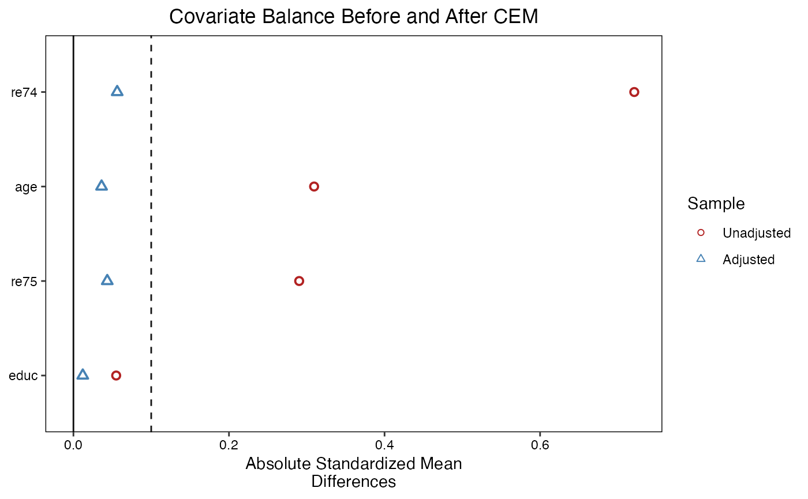
# Outcome analysis using matched data with CEM weights
mdat_cem <- match.data(cem_out)
# Weighted regression on matched sample (Lin 2013 interaction estimator)
mod_cem <- lm(re78 ~ treat * (age + educ + re74 + re75),
data = mdat_cem,
weights = weights)
# ATT estimate and SE
att_cem <- coef(mod_cem)["treat"]
se_cem <- sqrt(vcov(mod_cem)["treat", "treat"])
cat(sprintf("CEM ATT estimate: %.2f (SE = %.2f, 95%% CI: [%.2f, %.2f])\n",
att_cem, se_cem,
att_cem - 1.96 * se_cem,
att_cem + 1.96 * se_cem))
#> CEM ATT estimate: -10232.61 (SE = 5525.11, 95% CI: [-21061.83, 596.62])
cat(sprintf("Matched sample: %d treated, %d control (of %d original)\n",
sum(mdat_cem$treat == 1), sum(mdat_cem$treat == 0), nrow(lalonde)))
#> Matched sample: 118 treated, 154 control (of 614 original)The CEM estimator depends on the choice of bins. A useful robustness check is to vary the coarsening and observe how the ATT estimate changes:
# Try three coarsening schemes for re74/re75
coarsen_schemes <- list(
Coarse = list(re74 = c(0, 5000, Inf), re75 = c(0, 5000, Inf)),
Medium = list(re74 = c(0, 1000, 5000, 10000, Inf),
re75 = c(0, 1000, 5000, 10000, Inf)),
Fine = list(re74 = quantile(lalonde$re74, seq(0, 1, by = 0.2)),
re75 = quantile(lalonde$re75, seq(0, 1, by = 0.2)))
)
cem_sens <- do.call(rbind, lapply(names(coarsen_schemes), function(nm) {
co <- tryCatch(
matchit(treat ~ age + educ + re74 + re75,
data = lalonde, method = "cem", estimand = "ATT",
cutpoints = coarsen_schemes[[nm]]),
error = function(e) NULL
)
if (is.null(co)) return(NULL)
md <- match.data(co)
m <- lm(re78 ~ treat, data = md, weights = weights)
data.frame(
Coarsening = nm,
ATT = round(coef(m)["treat"], 2),
SE = round(sqrt(vcov(m)["treat", "treat"]), 2),
N_matched = nrow(md)
)
}))
knitr::kable(cem_sens, caption = "CEM ATT sensitivity to coarsening choice")| Coarsening | ATT | SE | N_matched | |
|---|---|---|---|---|
| treat | Coarse | 762.60 | 665.41 | 416 |
| treat1 | Medium | 869.08 | 833.10 | 272 |
| treat2 | Fine | 500.15 | 826.68 | 236 |
Entropy Balancing (Hainmueller 2012) reweights control units so that the weighted moments (means, variances, covariances) of the control group exactly match those of the treated group. The weights are chosen to minimise the Kullback-Leibler divergence from the base weights (uniform) subject to the balance constraints. This is a convex optimisation problem with a unique solution.
Unlike propensity score weighting, entropy balancing:
The estimand is the ATT: the treated group is left unweighted, and control units receive weights satisfying the balance constraints for each moment .
library(WeightIt)
data("lalonde", package = "MatchIt")
# Entropy balancing: exact balance on means (and optionally variances)
eb_out <- weightit(
treat ~ age + educ + re74 + re75,
data = lalonde,
method = "ebal",
estimand = "ATT",
moments = 1 # balance on means; use moments=2 for means+variances
)
summary(eb_out)
#> Summary of weights
#>
#> - Weight ranges:
#>
#> Min Max
#> treated 1. || 1.
#> control 0.041 |---------------------------| 2.22
#>
#> - Units with the 5 most extreme weights by group:
#>
#> 1 2 3 4 5
#> treated 1 1 1 1 1
#> 427 410 288 79 15
#> control 1.963 2.002 2.002 2.131 2.22
#>
#> - Weight statistics:
#>
#> Coef of Var MAD Entropy # Zeros
#> treated 0.000 0.000 0.000 0
#> control 0.569 0.508 0.192 0
#>
#> - Effective Sample Sizes:
#>
#> Control Treated
#> Unweighted 429. 185
#> Weighted 324.22 185
library(cobalt)
# Love plot after entropy balancing
love.plot(
eb_out,
abs = TRUE,
thresholds = c(m = 0.05),
var.order = "unadjusted",
shapes = c("circle filled", "triangle filled"),
colors = c("firebrick", "steelblue"),
title = "Covariate Balance Before and After Entropy Balancing"
)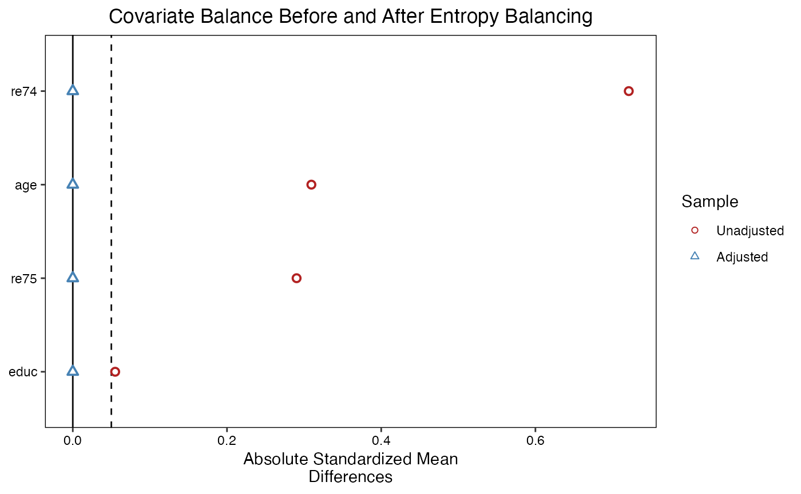
# Outcome regression with entropy balancing weights
lalonde$eb_weights <- eb_out$weights
mod_eb <- lm(re78 ~ treat, data = lalonde, weights = eb_weights)
att_eb <- coef(mod_eb)["treat"]
se_eb <- sqrt(vcov(mod_eb)["treat", "treat"])
cat(sprintf("Entropy balancing ATT: %.2f (SE = %.2f)\n", att_eb, se_eb))
#> Entropy balancing ATT: 753.56 (SE = 593.51)
# Doubly robust: include covariates in weighted regression
mod_eb_dr <- lm(re78 ~ treat + age + educ + re74 + re75,
data = lalonde,
weights = eb_weights)
att_eb_dr <- coef(mod_eb_dr)["treat"]
se_eb_dr <- sqrt(vcov(mod_eb_dr)["treat", "treat"])
cat(sprintf("Doubly robust EB ATT: %.2f (SE = %.2f)\n", att_eb_dr, se_eb_dr))
#> Doubly robust EB ATT: 753.56 (SE = 578.96)Balancing on means alone may leave variance and covariance imbalances that bias the treatment effect estimate when the outcome model is non-linear. Setting moments = 2 in weightit() adds constraints on the variances of each covariate:
# Balance on means AND variances
eb_out2 <- weightit(
treat ~ age + educ + re74 + re75,
data = lalonde,
method = "ebal",
estimand = "ATT",
moments = 2
)
# Effective sample size (ESS) for control group
ess_eb1 <- eb_out$ESS
ess_eb2 <- eb_out2$ESS
cat(sprintf("ESS (means only): %.1f\n", ess_eb1))
cat(sprintf("ESS (means + variances): %.1f\n", ess_eb2))
cat("Adding variance constraints typically reduces ESS.\n")
#> Adding variance constraints typically reduces ESS.Standard balance diagnostics (standardised mean differences, variance ratios) only check first- and second-order moments. When the outcome model is non-linear or heterogeneous treatment effects are present, full distributional balance matters. Three complementary tests address this:
Kolmogorov-Smirnov (KS) test: Maximum absolute difference between empirical CDFs. Sensitive to differences anywhere in the distribution, not just the mean.
Variance ratio: . Should be near 1 after matching; values outside suggest residual distributional imbalance.
Energy distance: A kernel-based measure of distributional discrepancy that is zero if and only if the two distributions are identical (Szekely and Rizzo 2013). More sensitive than KS to differences in tails.
library(MatchIt)
data("lalonde", package = "MatchIt")
# 1:1 nearest-neighbour matching
ps_match <- matchit(
treat ~ age + educ + re74 + re75,
data = lalonde,
method = "nearest",
distance = "logit",
ratio = 1,
estimand = "ATT"
)
mdat <- match.data(ps_match)
covs <- c("age", "educ", "re74", "re75")
# KS statistics and variance ratios before and after matching
ks_before <- sapply(covs, function(v) {
ks.test(lalonde[[v]][lalonde$treat == 1],
lalonde[[v]][lalonde$treat == 0])$statistic
})
ks_after <- sapply(covs, function(v) {
ks.test(mdat[[v]][mdat$treat == 1],
mdat[[v]][mdat$treat == 0])$statistic
})
vr_before <- sapply(covs, function(v) {
var(lalonde[[v]][lalonde$treat == 1]) /
var(lalonde[[v]][lalonde$treat == 0])
})
vr_after <- sapply(covs, function(v) {
var(mdat[[v]][mdat$treat == 1]) /
var(mdat[[v]][mdat$treat == 0])
})
bal_table <- data.frame(
Covariate = covs,
KS_before = round(ks_before, 3),
KS_after = round(ks_after, 3),
VR_before = round(vr_before, 3),
VR_after = round(vr_after, 3)
)
knitr::kable(bal_table,
caption = "KS statistic and variance ratio before and after PSM")| Covariate | KS_before | KS_after | VR_before | VR_after | |
|---|---|---|---|---|---|
| age.D | age | 0.158 | 0.249 | 0.440 | 0.469 |
| educ.D | educ | 0.111 | 0.097 | 0.496 | 0.639 |
| re74.D | re74 | 0.447 | 0.254 | 0.518 | 1.258 |
| re75.D | re75 | 0.288 | 0.195 | 0.956 | 1.752 |
# Empirical CDF comparison for re74 before and after matching
plot_ecdf <- function(var_name, before_data, after_data) {
df_b <- data.frame(
x = c(before_data[[var_name]][before_data$treat == 1],
before_data[[var_name]][before_data$treat == 0]),
group = c(rep("Treated", sum(before_data$treat == 1)),
rep("Control", sum(before_data$treat == 0))),
period = "Before matching"
)
df_a <- data.frame(
x = c(after_data[[var_name]][after_data$treat == 1],
after_data[[var_name]][after_data$treat == 0]),
group = c(rep("Treated", sum(after_data$treat == 1)),
rep("Control", sum(after_data$treat == 0))),
period = "After matching"
)
rbind(df_b, df_a)
}
ecdf_df <- plot_ecdf("re74", lalonde, mdat)
ggplot(ecdf_df, aes(x = x, colour = group, linetype = period)) +
stat_ecdf(linewidth = 0.8) +
causalverse::ama_theme() +
scale_colour_manual(values = c("steelblue", "firebrick")) +
scale_x_continuous(labels = scales::dollar_format(scale = 1e-3, suffix = "k")) +
labs(
title = "Empirical CDF: Pre-treatment Earnings (re74)",
subtitle = "KS statistic measures the maximum vertical gap between CDFs",
x = "1974 earnings",
y = "Empirical CDF",
colour = "Group",
linetype = "Matching status"
) +
theme(legend.position = "bottom")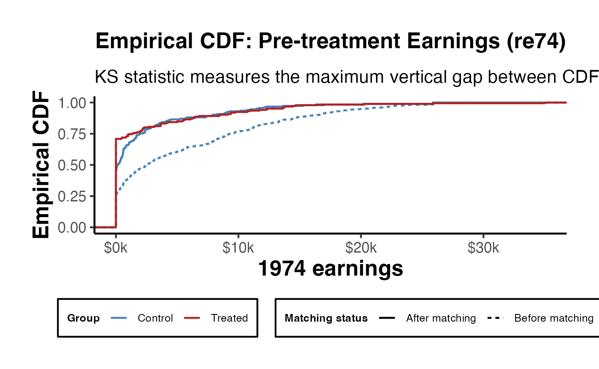
# Bar chart of KS statistics before and after for all covariates
ks_df <- data.frame(
Covariate = rep(covs, 2),
KS = c(ks_before, ks_after),
Period = rep(c("Before", "After"), each = length(covs))
)
ggplot(ks_df, aes(x = Covariate, y = KS, fill = Period)) +
geom_bar(stat = "identity", position = "dodge") +
geom_hline(yintercept = 0.1, linetype = "dashed", colour = "black") +
causalverse::ama_theme() +
scale_fill_manual(values = c("steelblue", "firebrick")) +
labs(
title = "Kolmogorov-Smirnov Statistics Before and After Matching",
subtitle = "Dashed line = 0.1 threshold; smaller KS = better distributional balance",
x = "Covariate",
y = "KS statistic",
fill = "Matching"
) +
theme(legend.position = "bottom")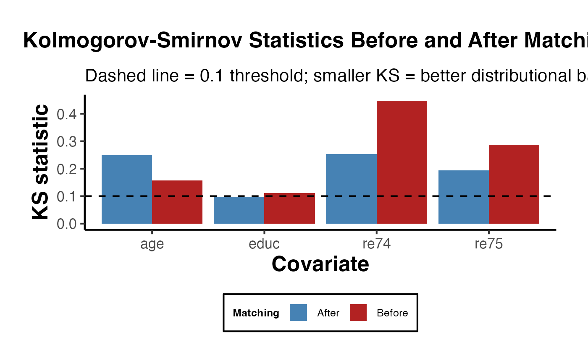
The energy distance between empirical distributions and is:
where and independently. It equals zero if and only if , making it a proper measure of distributional discrepancy.
# Manual energy distance computation (no extra package needed)
energy_dist <- function(x, y) {
n <- length(x); m <- length(y)
cross <- mean(outer(x, y, function(a, b) abs(a - b)))
self_x <- mean(outer(x, x, function(a, b) abs(a - b)))
self_y <- mean(outer(y, y, function(a, b) abs(a - b)))
2 * cross - self_x - self_y
}
ed_before <- sapply(covs, function(v) {
energy_dist(
scale(lalonde[[v]])[lalonde$treat == 1],
scale(lalonde[[v]])[lalonde$treat == 0]
)
})
ed_after <- sapply(covs, function(v) {
energy_dist(
scale(mdat[[v]])[mdat$treat == 1],
scale(mdat[[v]])[mdat$treat == 0]
)
})
ed_df <- data.frame(
Covariate = covs,
Energy_before = round(ed_before, 4),
Energy_after = round(ed_after, 4),
Reduction_pct = round(100 * (1 - ed_after / ed_before), 1)
)
knitr::kable(ed_df,
caption = "Energy distance before and after PSM (standardised covariates)")| Covariate | Energy_before | Energy_after | Reduction_pct | |
|---|---|---|---|---|
| age | age | 0.0672 | 0.0961 | -43.0 |
| educ | educ | 0.0319 | 0.0155 | 51.4 |
| re74 | re74 | 0.2429 | 0.0126 | 94.8 |
| re75 | re75 | 0.0834 | 0.0114 | 86.3 |
vr_df <- data.frame(
Covariate = rep(covs, 2),
VR = c(vr_before, vr_after),
Period = rep(c("Before", "After"), each = length(covs))
)
ggplot(vr_df, aes(x = Covariate, y = VR, shape = Period, colour = Period)) +
geom_point(size = 4) +
geom_hline(yintercept = 1, linetype = "dashed") +
geom_hline(yintercept = c(0.5, 2), linetype = "dotted", colour = "grey50") +
causalverse::ama_theme() +
scale_colour_manual(values = c("steelblue", "firebrick")) +
labs(
title = "Variance Ratios Before and After Matching",
subtitle = "Dashed = ratio of 1 (perfect); dotted = 0.5 and 2.0 boundaries",
x = "Covariate",
y = "Variance ratio (Treated / Control)",
shape = "Matching",
colour = "Matching"
) +
theme(legend.position = "bottom")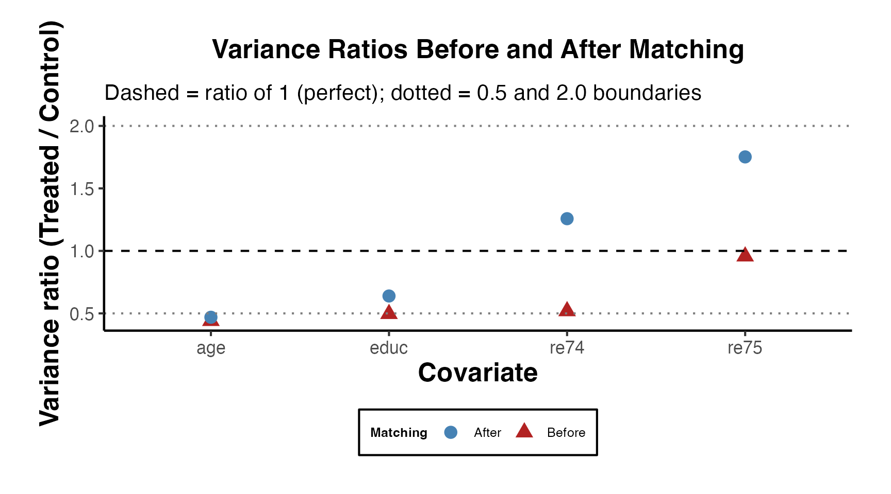